Squad Leader (4ª Edición) — Reglamento en castellano¶
Traducción de aficionado, sin ánimo de lucro. Traducción no oficial al castellano de Squad Leader (Avalon Hill / TAHGC, 1977; diseño de John Hill). Todos los derechos del juego, sus reglas, textos e ilustraciones pertenecen a sus titulares (hoy propiedad de Hasbro, con licencia de Multi-Man Publishing). Este documento se ofrece únicamente como ayuda de juego para hispanohablantes que poseen una copia original; no lo sustituye. Para los valores exactos, consulta siempre tus cartas y tablas originales. Si algún titular de derechos desea su retirada, se hará de inmediato.
Glosario de términos (EN → ES)¶
| Inglés | Castellano (usado en esta traducción) |
|---|---|
| Squad | Escuadra |
| Leader | Líder (jefe) |
| Firepower (FP) | Potencia de Fuego (PF) |
| Range | Alcance |
| Morale | Moral |
| Morale Check (MC) | Chequeo de Moral |
| Broken (unit) | Unidad desmoralizada |
| Rally | Reorganización / reorganizarse |
| Rout | Huida (desbandada) |
| Line of Sight (LOS) | Línea de Visión (LDV) |
| Hex / hexside | Hex (hexágono) / lado de hex |
| Movement Factor (MF) | Factor de Movimiento (FM) |
| Stacking | Apilamiento |
| Fire Combat | Combate de Fuego |
| Infantry Fire Table (IFT) | Tabla de Fuego de Infantería (TFI) |
| Dice Roll (DR) / DRM | Tirada de dados / Modificador a la tirada (MTD) |
| AFV | Vehículo blindado de combate (VBC) / blindado |
| SP Gun | Cañón autopropulsado (CAP) |
| Overrun | Arrollamiento |
| Close Combat | Combate cuerpo a cuerpo (CCC) |
| Defensive Fire | Fuego defensivo |
| Prep Fire | Fuego preparado |
| Advancing Fire | Fuego de avance |
| Smoke | Humo |
| Concealment | Ocultación |
| Support Weapon (SW) | Arma de apoyo |
| Crew | Dotación |
| Wreck | Restos / carcasa del vehículo |
| Entrenchment | Atrincheramiento |
| Bunker | Búnker |
| Minefield | Campo de minas |
| Roadblock | Barricada |
| Immobilization | Inmovilización |
| Fate | Fortuna (Fate) |
Las siglas de las fichas se mantienen en su forma original (MMG, HMG, LMG, MG, AFV, SP, FT, DC) por coincidir con la impresión de los contadores.
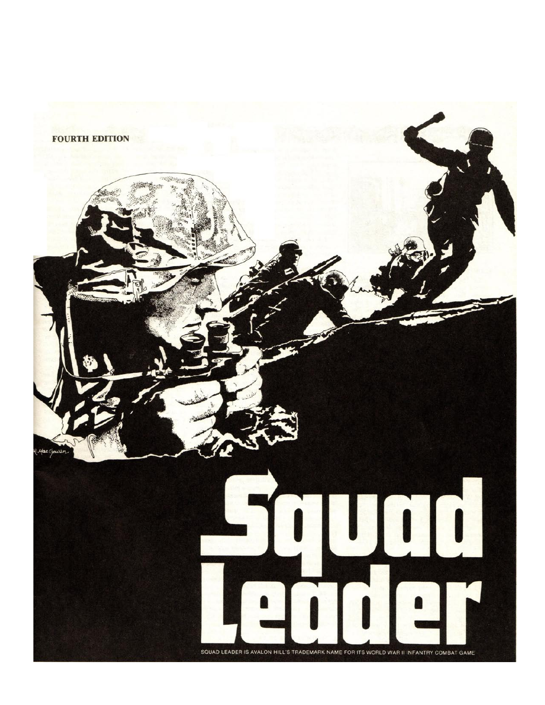
Reglas¶
1. INTRODUCCIÓN¶
SQUAD LEADER es un juego muy detallado y, por tanto, complejo. De hecho, SQUAD LEADER es más un sistema de juego que un juego. Una vez dominado este sistema, el jugador será capaz de simular (o "jugar") cualquier acción de escala comparable de la Segunda Guerra Mundial en Europa. Para ayudar al jugador a superar estas reglas necesariamente extensas, hemos recurrido a la Instrucción Programada (P.I.), que requiere que el jugador lea solo una parte limitada de las reglas para poder jugar un escenario preseleccionado. De este modo, el jugador puede llegar a dominar las reglas de forma progresiva, como por bloques, a medida que juega. Es importante que los jugadores se tomen en serio el enfoque de la Instrucción Programada, leyendo las reglas gradualmente conforme avanzan de un escenario preparado al siguiente. A pesar de todos los esfuerzos por mantener la jugabilidad, hay mucho que sigue confiándose a la memoria del jugador. "Abarcar más de lo que se puede" es una forma garantizada de acabar en la frustración total.
Se recomienda que los jugadores se familiaricen con los componentes del juego mientras leen las secciones 2 a 21 por primera vez. Ignora por ahora las referencias numéricas entre paréntesis. Después, vuelve a leer las secciones 2 a 21, consultando las referencias numéricas cuando sea necesario y estudiando los diagramas explicativos proporcionados. Consulta las numerosas tablas de la cara de infantería (blanca) de la Tarjeta de Datos de Referencia Rápida (Quick Reference Data Card) y luego procede a jugar el Escenario 1 para coger el feeling del juego. Cuando estés satisfecho con tu dominio de la mecánica de juego, pasa al Escenario 2 según el reglamento. Lo importante que hay que recordar es que los escenarios proporcionados no constituyen el juego que acabas de comprar. Son tus herramientas para dominar el sistema de juego de SQUAD LEADER. Úsalas con sabiduría.
2. FICHAS DE UNIDAD (UNIT COUNTERS)¶
2.1 Las piezas de cartón troquelado (en adelante denominadas fichas de unidad) representan escuadras de infantería, sus oficiales y suboficiales (en adelante denominados colectivamente Líderes) y diversas armas de apoyo utilizadas durante el juego. Los números de la unidad representan las capacidades y características de esa unidad. El siguiente diagrama ilustra la simbología que aparece en el anverso de las fichas básicas de infantería y de armas de apoyo de SQUAD LEADER. La simbología del reverso de estas fichas se explicará más adelante.
2.2 La POTENCIA DE FUEGO (PF) es la fuerza básica con la que una ficha puede atacar en combate.
2.3 El ALCANCE es el número de hexágonos de distancia desde el hex de la unidad que dispara hasta donde la ficha puede llegar con sus factores normales de Potencia de Fuego. El alcance hasta un objetivo se calcula como el menor número de hexes desde la unidad que dispara hasta el hex objetivo, ambos inclusive, independientemente del número real de hexes cruzados por la Línea de Visión (en adelante denominada LDV — véase 7).
2.4 La MORAL es una valoración relativa de la capacidad de una unidad para soportar el castigo antes de "desmoralizarse" y correr a cubierto. Es el punto en el que su voluntad de sobrevivir vence a la disciplina militar.
2.5 La IDENTIDAD es el nombre y el rango de la ficha de Líder, solo a efectos de identificación.
2.6 El LIDERAZGO es la valoración relativa de la competencia táctica de un Líder y de su capacidad para sacar lo mejor de sus hombres. Este modificador, normalmente negativo, se añade como modificador a las tiradas de dados de Moral o de Potencia de Fuego de cualquier escuadra influida por el Líder.
2.7 El TIPO DE ARMA muestra el tipo de arma de apoyo en uso. Las fichas de arma de apoyo deben ser servidas por una ficha de escuadra para ser operativas, aunque en algunos casos un Líder puede servir un arma de apoyo en solitario con el mismo efecto o uno reducido. El término "MG" se usará en adelante para indicar una forma de ametralladora (Machine Gun) como arma de apoyo. Las MG enemigas pueden capturarse y ser usadas por cualquiera de los dos bandos.
2.8 La PENETRACIÓN es una capacidad exclusiva de las ametralladoras que permite que su fuego sea plenamente efectivo contra todas las unidades de un número de hexes objetivo, a diferencia de la potencia de fuego normal de una escuadra, que solo afecta a un hex objetivo. Los hexes penetrados deben estar en línea recta a lo largo de la Línea de Visión. Por tanto, una MMG con un factor de penetración de 4 podría disparar a través de cuatro hexes con igual efecto en cada uno. Los hexes penetrados no tienen por qué ser adyacentes ni estar en la misma "hilera de hexes" (véase 17.5-6). No obstante, un factor de penetración no permite que una MG dispare a través de un edificio o de un elemento de terreno boscoso hacia otro hex. El factor de penetración de una MG se pierde siempre al disparar desde un nivel de elevación a un nivel de elevación diferente.
2.9 El número de AVERÍA (BREAKDOWN) determina si un arma sufre un fallo temporal al disparar (18.1).

ESCUADRA (SQUAD) - Potencia de Fuego (Firepower) — primer número (4) - Alcance (Range) — tercer número (7) - Moral (Morale) — segundo número (6)
(Ejemplo de ficha: 4-6-7 = Potencia de Fuego 4, Alcance 6, Moral 7)
LÍDER (LEADER) - Identidad (Identity) — silueta/rango del líder - Liderazgo (Leadership) (-1) — modificador de mando - Moral (Morale) — valor inferior (8)
Nota: el «-» es un signo menos; no es un simple guion.

ARMA DE APOYO (SUPPORT WEAPON) - Tipo de arma (Weapon type) — LMG - Alcance (Range) — segundo número (8) - Potencia de Fuego y Penetración (Firepower & Penetration) — primer número (2) - Avería (Breakdown) — B12
(Ejemplo de ficha: LMG, 2-8, B12)
3. EL TABLERO (THE MAPBOARD)¶
3.1 El JUEGO BÁSICO I utiliza un solo tablero, el tablero de ciudad nº 1. La descripción de los tipos de terreno se encuentra en la Tabla de Efectos del Terreno (en adelante denominada TEC, Terrain Effects Chart), situada en la contraportada de este reglamento.
3.2 Superpuesta sobre el tablero hay una retícula hexagonal que se usa para determinar el movimiento y el alcance.
3.3 Dentro de cada hexágono (hex) hay un punto blanco (o cuadrado) que marca el centro absoluto de ese hex. Como todo disparo se realiza de centro de hex a centro de hex, estos puntos se convierten en los puntos de referencia para determinar la Línea de Visión (7).
3.4 Ten en cuenta que, aunque el Juego Básico I utiliza un solo tablero, todas las secciones de tablero son isomorfas y pueden unirse entre sí de cualquier manera para formar áreas de juego más grandes.
3.5 COORDENADAS DE CUADRÍCULA: Cada hex tiene su propia coordenada de cuadrícula identificativa impresa en el centro superior del hex. La coordenada de cuadrícula completa se compone del número de tablero, la letra de la hilera de hexes y el número del hex dentro de esa hilera. Por ejemplo, el hex 2BB5 contiene el símbolo de colina "∆538". Cuando se unen dos tableros, los medios hexes de cada borde de tablero se combinan para formar un hex completo. Si solo uno de estos medios hexes contiene una coordenada de cuadrícula, el hex combinado se considera parte del tablero que contiene la coordenada. Si ninguno o ambos hexes contienen una coordenada de cuadrícula impresa, el hex deriva su número de tablero y letra de hilera del tablero situado más al noreste en la configuración del tablero. El número de posición de la hilera sería 0 o 10 según la coordenada del hex adyacente en la hilera identificativa.
3.6 Las ilustraciones de aceras o senderos (ejemplo: hex 1BB5) y la diferencia de color entre las carreteras pavimentadas de la ciudad (1C4) y los caminos de tierra (1B5) del campo no tienen ningún papel en el juego y se incluyen solo por motivos estéticos.
3.7 Los medios hexes de los bordes del tablero son jugables y tienen el mismo efecto que los hexes completos.
3.8 Los Efectos del Terreno y los Costes de Movimiento de los hexes que contienen más de un elemento de terreno son acumulativos. Por tanto, a la infantería le cuesta 4 FM entrar en el hex 2I9, y el fuego contra ese hex objetivo se modificará con un +3 a la tirada de dados.
Costes de movimiento por terreno¶
| Terreno | Coste |
|---|---|
| *Terreno abierto, Cráter de obús, Trigal | 1 FM |
| *Al entrar en Carretera desde un lado de hex sin carretera | 1 FM |
| *Al entrar en Carretera desde un lado de hex con carretera | 1/2 FM |
| *Bosque | 2 FM |
| *Entrar en cualquier Edificio | 2 FM |
| Mover dentro de un Edificio | 2 FM |
| Sobre Muros o Setos | 1 FM +CDT |
CDT = Coste del Terreno en el que se entra.
Verifica los valores con tus cartas/tablas originales.
4. SECUENCIA DE JUEGO (SEQUENCE OF PLAY)¶
A efectos de definición, nos referiremos al jugador que mueve primero en el turno como el atacante; y al jugador que mueve en segundo lugar como el defensor. Cada turno de juego consta de dos turnos de jugador completos de 8 fases cada uno, representando 2 minutos de tiempo real.
4.1 FASE DE REORGANIZACIÓN (RALLY PHASE): Ambos jugadores pueden intentar reparar armas de apoyo averiadas y reorganizar unidades desmoralizadas.
4.2 FASE DE FUEGO PREPARADO (PREP FIRE PHASE): El jugador atacante puede ahora disparar con cualquiera de sus unidades contra unidades enemigas dentro de la LDV de la unidad atacante. Coloca un marcador de Fuego Preparado sobre las unidades que disparen.
4.3 FASE DE MOVIMIENTO (MOVEMENT PHASE): El jugador atacante puede ahora mover aquellas unidades no desmoralizadas que no dispararon durante la Fase de Fuego Preparado.
4.4 FASE DE FUEGO DEFENSIVO (DEFENSIVE FIRE PHASE): El jugador defensor puede ahora disparar con cualquiera de sus unidades contra unidades enemigas que se encuentren actualmente dentro de su LDV, o que se movieran a través de su LDV durante la Fase de Movimiento precedente.
4.5 FASE DE FUEGO DE AVANCE (ADVANCING FIRE PHASE): El jugador atacante puede ahora disparar con cualquiera de sus unidades que se movieron durante la Fase de Movimiento, a 1/2 de potencia de fuego. También puede disparar a plena potencia de fuego con aquellas unidades que ni hicieron Fuego Preparado ni se movieron. Las unidades que hicieron Fuego Preparado no pueden disparar en la Fase de Fuego de Avance. Retira todos los marcadores de Fuego Preparado.
4.6 FASE DE HUIDA (ROUT PHASE): Las unidades desmoralizadas de ambos bandos deben buscar cubierto en bosques o edificios, huyendo primero las unidades del jugador en turno. Las que ya estén en dicho cubierto no necesitan moverse, salvo que estén adyacentes a una unidad enemiga.
►4.7 FASE DE AVANCE (ADVANCE PHASE): El jugador atacante puede ahora mover una, varias o todas sus unidades de infantería no desmoralizadas un hex (independientemente de su estado previo de fuego o movimiento). El hex al que se avanza puede estar ocupado por unidades enemigas. Este es el único momento en que se puede mover una unidad de infantería a un hex ocupado por una unidad enemiga. (EXCEPCIONES: 27, 53.4, 56, 57).
4.8 FASE DE COMBATE CUERPO A CUERPO (CLOSE COMBAT PHASE): Las unidades de ambos bandos que ocupen el mismo hex deben atacar a las unidades enemigas allí presentes usando la Tabla de Combate Cuerpo a Cuerpo.
4.9 Con esto termina el turno del jugador atacante. El jugador defensor pasa ahora a ser el jugador atacante, invierte la ficha de Turno y repite los pasos 4.1-4.8. Llegado ese punto, se ha completado un turno de juego completo; la ficha de turno se vuelve a invertir y se avanza una casilla en la Tabla de Registro de Turnos del Escenario.
5. MOVIMIENTO (MOVEMENT)¶
Cada hex representa una distancia de 40 metros. La escala del terreno está abstraída para captar la "sensación" correcta de los muchos obstáculos de terreno distintos en el desarrollo de una batalla táctica.
5.1 Durante la parte de la Fase de Movimiento de tu turno puedes mover todas, algunas o ninguna de tus unidades que no dispararon durante la Fase de Fuego Preparado.
5.2 Las unidades se mueven en cualquier dirección o combinación de direcciones hasta el límite de sus Factores de Movimiento (en adelante denominados FM). El dado no tiene nada que ver con el movimiento. Básicamente, cada unidad puede moverse un número de hexes igual a su factor de movimiento, aunque este puede verse aumentado, disminuido o restringido por Líderes (5.44), el terreno (5.5), la presencia de unidades enemigas (5.6), los objetos transportados (5.7) o el fuego de unidades enemigas (16.1).
5.3 Las unidades pueden moverse sobre y apilarse encima de otras unidades amigas. Los factores de movimiento no pueden transferirse de una unidad a otra, ni acumularse de un turno a otro.
5.4 Solo los vehículos tienen asignaciones de FM separadas impresas en su ficha. Todas las demás fichas tienen una capacidad de movimiento uniforme según su tipo de unidad:
5.41 Toda ficha de escuadra tiene 4 FM.
5.42 Toda ficha de Líder tiene 6 FM.
5.43 Ninguna ficha de apoyo tiene FM propio. Deben ser "transportadas" por fichas de escuadra, Líder o vehículo para moverse.
5.44 Si una o varias escuadras pasan toda la Fase de Movimiento apiladas con un Líder, recibirían una bonificación de 2 FM.
5.5 Cada vez que una unidad entra en un hex gasta un número de sus FM para ese turno, en función del terreno dentro de ese hex. El coste en FM para entrar en un hex se muestra en (actualizar cuando sea definitivo) y también se resume en la Tarjeta de Datos de Referencia Rápida.
5.51 Los muros y setos están impresos directamente sobre los propios lados de hex. Al cruzar uno de estos lados de hex, una unidad paga una penalización de un FM más el coste normal del terreno del hex al que entra.
5.52 El coste en FM para entrar en un hex de carretera es de solo 1/2 FM si se entra al hex a través de un lado de hex cruzado por la carretera.
5.53 El coste en FM de la infantería al entrar en hexes de Terreno Abierto (colinas), carretera, edificios y bosques se duplica al moverse a un hex de terreno más elevado que el ocupado previamente. No hay penalización adicional por moverse a lo largo del mismo nivel de hexes de terreno elevado. No hay coste adicional ni reducido por moverse de terreno más alto a terreno más bajo. No obstante, ten en cuenta que no hay diferenciación de elevación del terreno (salvo los edificios de dos plantas) en el tablero nº 1, que es el único tablero usado en el Juego Básico I.
5.54 Los efectos del terreno son acumulativos para las unidades que se mueven hacia o a través de hexes que contienen más de un tipo de terreno. (EXCEPCIÓN: infantería que se mueve a un cráter de obús situado a lo largo de una carretera). Excepción: El hex 3I10 cuesta 2 FM al entrar desde los hexes H9, I9 y/o J9. Costaría 4 FM entrar desde H10, J10 o desde fuera del tablero, porque las unidades en movimiento estarían moviéndose a una elevación más alta. La carretera que llega al hex no anula el coste de movimiento del resto del terreno del hex (véase también el hex 3I1), aunque permitiría a las unidades que abandonan el hex hacerlo al ritmo de movimiento de carretera.
5.6 Las unidades de infantería pueden moverse hacia y alrededor de las unidades enemigas sin restricciones (EXCEPCIÓN: 16.1), pero solo pueden entrar en un hex ocupado por una unidad enemiga durante la Fase de Avance (EXCEPCIONES: 27.2, 56.8, 57.1).
►5.7 ARMA DE APOYO: Las fichas de escuadra y de Líder pueden transportar armas de apoyo a distintos costes para sus propios factores de movimiento. Estos costes de porte por arma se muestran en la Tabla de Armas de Apoyo (Support Weapons Chart). El coste de porte por transportar un arma de apoyo es el mismo independientemente de la distancia recorrida. Una unidad de infantería puede recoger (o soltar) armas de apoyo en cualquier punto de su movimiento, siempre que disponga de FM suficiente para ello. Observa que el coste de porte de una misma arma puede ser diferente según la transporte una ficha de escuadra o de Líder. Una escuadra puede transportar hasta 3 puntos de porte sin coste alguno para su propio Factor de Movimiento. Un Líder puede transportar 1 punto de porte de armas de apoyo sin coste para su propio Factor de Movimiento. Una unidad pierde un FM por cada punto de porte transportado por encima de estas capacidades de porte normales.
Ejemplo: Una escuadra que transporta dos LMG y un lanzallamas (4 puntos de porte) solo puede gastar 3 Factores de Movimiento durante la Fase de Movimiento. Si va acompañada de un oficial (que a su vez transporta dos puntos de porte de armas), esa misma escuadra podría gastar 5 FM durante la Fase de Movimiento.
►5.71 Un Líder nunca puede transportar Armas de Apoyo que excedan los 3 puntos de porte de Líder.
►5.72 La capacidad de porte de una unidad no puede combinarse con la de otras unidades. EXCEPCIÓN: Un arma solo puede ser transportada por una unidad a la vez, y el coste de porte de esa arma debe ser pagado por esa unidad. Por tanto, dos escuadras no pueden mover una HMG más de un hex de distancia que cubre una sola escuadra. No obstante, un Líder que pase toda su Fase de Movimiento con una escuadra puede aun así otorgar una bonificación de movimiento a la escuadra, incluso si el propio Líder está transportando 3 puntos de porte de armas de apoyo.
5.73 [GIA 142.22] Independientemente de la penalización de movimiento debida al terreno y/o al porte de armas, una escuadra/dotación siempre puede transportar hasta 5 puntos de porte un hex durante la Fase de Avance. Un Líder siempre puede transportar hasta 3 puntos de porte de Líder un hex durante la Fase de Avance.
►5.74 Cualquier escuadra que transporte 4 o más puntos de porte, o un Líder que transporte 2 o más puntos de porte de Líder durante una Fase de Movimiento, no puede disparar un arma de apoyo en la subsiguiente Fase de Fuego de Avance.
5.75 Ninguna unidad de infantería puede disparar más de un tipo de arma de apoyo en la misma fase de fuego. LMG, MMG y HMG se consideran todas un mismo tipo de arma de apoyo.
5.76 Salvo que se especifique lo contrario, cuando estas reglas se refieran a costes de porte, siempre se referirán a los costes de uso por escuadra.
6. APILAMIENTO (STACKING)¶
►6.1 Cada jugador no puede apilar más de 4 de sus unidades de infantería (de las cuales solo 3 pueden ser escuadras) más un máximo de 10 puntos de porte de armas de apoyo por hex. (EXCEPCIONES: 27.2, 56.8, 57.1).
6.2 En situaciones de Combate Cuerpo a Cuerpo, ambos bandos pueden ocupar el mismo hex hasta su límite máximo normal de apilamiento. Una vez finalizado el Combate Cuerpo a Cuerpo con un bando victorioso, cualquier ficha de arma de apoyo sobrante debe eliminarse, dándole al jugador victorioso la opción de elegir qué armas retirar.
►6.3 Los jugadores pueden exceder los límites de apilamiento durante el movimiento, siempre que los hexes no queden sobreapilados al final de la Fase de Movimiento.
7. LÍNEA DE VISIÓN BÁSICA (LDV)¶
El concepto de visión, o "quién puede ver (y disparar a) qué", se trata a continuación solo en lo que se aplica al tablero nº 1 del Juego Básico I. Otras reglas más avanzadas se presentarán en la Sección 43.
►7.1 Se asume que toda visión sigue una línea recta medida desde el centro del hex que dispara hasta el centro del hex objetivo. Cualquier goma elástica o un trozo de cuerda tensada servirá para comprobar la LDV, aunque una regla recta transparente funciona mejor. Si el obstáculo puede observarse a ambos lados de la cuerda, la LDV está bloqueada. Si surge algún desacuerdo sobre si una LDV está obstruida, debe resolverse con una tirada amistosa de dado.
►7.2 La LDV en el Juego Básico I se considera no obstruida salvo que pase directamente a través de un símbolo de bosque o edificio (no necesariamente un hex de bosque o edificio). Tales símbolos presentes en el hex que dispara o en el objetivo no obstruyen la LDV. La presencia de unidades de infantería en un hex no bloquea necesariamente la LDV a través de ese hex. El fuego puede trazarse a través de unidades de infantería sin afectarlas si el que dispara así lo prefiere (EXCEPCIÓN: 17.6).
7.3 La LDV se extiende hasta los símbolos de bosque o edificio, pero no a través de ellos hacia hexes más allá del hex que contiene el primer símbolo de bosque o edificio encontrado (EXCEPCIÓN: Diferencias de Elevación, 7.4).
7.4 Los edificios que cubren 3 hexes o más se consideran estructuras de varias plantas, y las unidades en dichos edificios pueden trazar LDV por encima de edificios de 2 hexes o menos y de bosques. El hex situado directamente detrás de un edificio o bosque en LDV directa desde el hex que dispara se considera un Hex Ciego y no puede ser objeto de disparo.
Ejemplo: Una unidad en T2 podría disparar por encima del edificio de T4 contra un objetivo en T6 gracias a su ventaja de altura. También podría disparar a T3 y T4, pero no a T5, que es un hex ciego causado por el obstáculo de T4.
7.5 Los edificios de varias plantas obstruyen toda LDV en el Juego Básico I, independientemente de la elevación.
7.6 Las unidades a nivel de suelo pueden ver por encima de obstáculos intermedios hacia edificios de varias plantas. Ten en cuenta que esto es lo contrario de 7.4. El fuego de unidades a nivel de suelo contra objetivos en edificios de varias plantas no podría proceder de un "hex ciego" como el descrito en 7.4.
7.7 Las unidades en el mismo edificio no pueden verse ni dispararse entre sí salvo que sean adyacentes o que la LDV no intersecte ningún símbolo de edificio en los hexes intermedios.
Ejemplo: La LDV desde 1N3 hasta 1N5 está obstruida; la LDV desde 1N3 hasta 1M5 no lo está.
7.8 Las unidades siempre pueden disparar a cualquier hex adyacente, independientemente del terreno (EXCEPCIÓN: 56.3, 57.4).
7.9 [RE: véase SQL 57.] Las unidades en un edificio de varias plantas se consideran simultáneamente en el nivel superior y en el inferior. Al disparar a o desde dicho hex, cualquiera de los dos jugadores puede elegir si quiere que los ocupantes del edificio se consideren en las plantas superiores o inferiores a efectos de resolver su ataque. No obstante, si una MG elige disparar desde el nivel superior contra un objetivo en un nivel diferente, pierde cualquier factor de penetración al que tendría derecho si disparara a lo largo del mismo nivel; una unidad que dispara desde el nivel del suelo sería incapaz de "ver por encima" de obstáculos intermedios.
Tabla de armas de apoyo (5.7)¶
Costes de porte (capacidad de porte: Escuadra/Dotación = 3 puntos; Líder = 1 punto) · Capacidad de operación
| Arma de apoyo | Porte: Escuadra/Dotación | Porte: Líder | Uso si capturada | Manejo por Escuadra | Manejo por Líder |
|---|---|---|---|---|---|
| LMG | 1 | 2 | — | F (17.1) | 1 MG a ½ de potencia de fuego |
| MMG | 4 | A | Sí | — | E |
| HMG | 5 | A | — | — | (17.3) |
| Lanzallamas | 2 | 2 | C, D, H | 1 D (22.3-5) | 1 C (22.4) |
| Carga de demolición | 1 | 1 | C, D, H | 1 D (23.3-4) | 1 C |
| Panzerfaust | ½ | 1 | C, D, H | 4 (37.3) | 1 (37.33) |
| Bazooka | 1 | 2 | No | 2 (37.4) | 1 E (37.43) |
| Radio | 1 | 2 | No | NA | 1 (46.1) |
| Cañón antitanque | B (48.4) | NA | Sí-G | 1 (48.7) | NA |
| Obús de 105 mm | *5 | No | |||
| Mortero (63.6) | D, H |
Notas: - A — Dos líderes pueden transportar una MMG/HMG 1 hex por Fase de Movimiento. - B — Cualquier escuadra puede empujarlo 1 hex durante la Fase de Movimiento. - C — Debe tener un modificador de liderazgo de −2 o −3. - D — Debe ser Ingeniero de Asalto (Assault Engineer). - E — Dos líderes cualesquiera pueden disparar a plena potencia. - F — Una MG o 4 factores de potencia de fuego sin coste; o dos MG cualesquiera que excedan los 4 factores de potencia. - G — Debe ser una unidad de Dotación (Crew). - H — Debe ser una unidad estadounidense. - * — Solo a efectos de apilamiento.
Verifica los valores con tus cartas/tablas originales.

5.7 Cuadro de armas de apoyo¶
| Armas de apoyo | Costes de porte — Escuadra/Dotación (3) | Costes de porte — Líder (1) | Uso capturada | Capacidad de operación — Escuadra | Capacidad de operación — Líder |
|---|---|---|---|---|---|
| LMG | 1 | 2 | F (17.1) | 1 MG a 1/2 de potencia de fuego | |
| MMG | 4 | A | Sí | E | |
| HMG | 5 | A | (17.3) | ||
| Lanzallamas | 2 | 2 | C, D, H | 1 D (22.3-5) | 1 C (22.4) |
| Carga de demolición | 1 | 1 | C, D, H | 1 D (23.3-4) | 1 C |
| Panzerfaust | ½ | 1 | C, D, H | 4 (37.3) | 1 (37.33) |
| Bazooka | 1 | 2 | No | 2 (37.4) | 1 E (37.43) |
| Radio | 1 | 2 | No | NA | 1 (46.1) |
| Cañón antitanque | B (48.4) | NA | Sí-G | 1 (48.7) | NA |
| Obús 105mm | *5 | No | |||
| Mortero (63.6) | D, H |
Notas: - A- Dos líderes pueden transportar un MMG/HMG 1 hex por Fase de Movimiento - B- Cualquier escuadra puede empujarlo 1 hex durante la Fase de Movimiento - C- Debe tener un modificador de liderazgo de -2 o -3 - D- Debe ser Ingeniero de Asalto - E- Dos líderes cualesquiera pueden disparar a plena potencia - F- Un MG o 4 factores de potencia de fuego sin coste; o dos MG cualesquiera que excedan de 4 de potencia de fuego - G- Debe ser una unidad de Dotación (Crew) - H- Debe ser unidad estadounidense - *- Solo a efectos de apilamiento
Verifica los valores con tus cartas/tablas originales.
8. PRINCIPIOS DEL COMBATE DE FUEGO¶
8.1 El Combate de Fuego es el proceso por el cual una unidad aplica sus factores de potencia de fuego contra unidades enemigas dentro de su LDV. El Combate de Fuego se resuelve en la Tabla de Fuego de Infantería (TFI) situada en la Tarjeta de Datos de Referencia Rápida.
►8.2 Ninguna unidad de infantería puede usar su potencia de fuego inherente y la de su arma de apoyo más de una vez por turno de jugador (EXCEPCIÓN: Combate Cuerpo a Cuerpo, 20). Puedes disparar con todas, algunas o ninguna de tus unidades en un turno de jugador dado.
8.3 El Combate de Fuego se dirige de forma uniforme contra todos los ocupantes de un hex, y el resultado de dicho fuego afecta a todas las unidades del hex objetivo. Un hex puede ser atacado cualquier número de veces mediante Combate de Fuego durante un turno.
8.4 Una escuadra nunca puede dividir su propia potencia de fuego inherente entre distintos hexes, pero sí podría disparar una o varias de sus armas de apoyo por separado contra un hex diferente (incluso en una dirección completamente distinta).
8.5 Las unidades en el mismo hex no tienen por qué disparar al mismo hex objetivo, pero si lo hacen deben combinar su fuego en una única tirada de dados (EXCEPCIONES: 22.3, 34.3, 36.3, 37.47).
►8.6 Las unidades pueden combinar sus factores de potencia de fuego para formar "Grupos de Fuego" (Fire Groups) y atacar el mismo hex objetivo en un único ataque combinado, solo si las unidades que disparan están en el mismo hex o en hexes adyacentes. Es posible tener una "cadena" prácticamente ilimitada de hexes adyacentes. Las unidades en hexes adyacentes no tienen por qué combinar sus factores de potencia de fuego, pero tienen la opción de hacerlo. Un Grupo de Fuego puede constar desde una hasta un número casi infinito de unidades atacantes.
8.7 [Véase Regla Opcional, página 22] Un jugador no tiene que predesignar todos los ataques; es decir, puede esperar el resultado de un ataque antes de comprometer el fuego de otras unidades.
8.8 Aunque todas las unidades de un hex objetivo se ven afectadas por igual por los resultados del Combate de Fuego, algunas pueden salir indemnes mientras otras se desmoralizan. Si se produce un resultado KIA, todas las unidades de escuadra y de Líder del hex quedan eliminadas. Pero si el resultado es un chequeo de moral, entonces todas las escuadras y Líderes de ese hex deben superar un Chequeo de Moral independiente — PRIMERO LOS LÍDERES. Los dados se tiran por separado para cada unidad que realiza un Chequeo de Moral (12.1).
8.9 Cuando la Tabla de Fuego de Infantería exige Chequeos de Moral, estos se resuelven inmediatamente antes de resolver cualquier otro ataque de fuego sobre ese hex.
9. MODIFICADORES DE POTENCIA DE FUEGO¶
9.1 FUEGO A QUEMARROPA (POINT BLANK FIRE): El factor de potencia de fuego de una unidad se duplica siempre que el hex objetivo sea adyacente a la unidad que dispara. (EXCEPCIÓN: ACANTILADOS, 44.1).
9.2 FUEGO A LARGO ALCANCE (LONG RANGE FIRE): Los factores de potencia de fuego de una unidad se reducen a la mitad cuando el hex objetivo excede el alcance impreso de la unidad que dispara. No se permiten ataques más allá del doble del alcance impreso de la unidad que dispara.
9.3 FUEGO EN MOVIMIENTO (MOVING FIRE): Los factores de potencia de fuego de una unidad se reducen a la mitad cuando la unidad que dispara se ha movido durante ese turno de jugador (EXCEPCIÓN: Lanzallamas, 22.8). La potencia de fuego de las Armas de Apoyo que no se movieron pero que son servidas por infantería que sí lo hizo también se reduce a la mitad.
9.4 FUEGO DE ÁREA (AREA FIRE): Los factores de potencia de fuego de una unidad se reducen a la mitad cuando la unidad objetivo está bajo un marcador de Ocultación (25.8).
9.5 Los modificadores de potencia de fuego son acumulativos.
Ejemplo: Una unidad que se mueve hasta quedar adyacente a una unidad enemiga vería su potencia de fuego reducida a la mitad (Fuego en Movimiento) y duplicada (Fuego a Quemarropa), con el resultado final de que usaría su potencia de fuego normal.
10. RESOLUCIÓN DEL COMBATE DE FUEGO¶
10.1 Suma todos los factores de potencia de fuego del Grupo de Fuego.
10.2 Comprueba si algún Modificador de Potencia de Fuego sirve para reducir a la mitad o duplicar la potencia de fuego del Grupo de Fuego.
10.3 Determina la columna correcta de la Tabla de Fuego de Infantería. Los factores de potencia de fuego de 1 a 36+ están impresos en grandes números negros en la cabecera de cada columna. Usa la columna más a la derecha que no exceda el total de factores de potencia de fuego ajustados del Grupo de Fuego. Los factores de potencia de fuego sobrantes se pierden.
10.4 Comprueba si se aplican modificadores a la tirada de dados debidos a los efectos del terreno, las características del objetivo o el liderazgo, y tira dos dados.
10.5 Tras añadir cualquier modificador a la tirada de dados, cruza la tirada ajustada con la columna de potencia de fuego correcta para determinar los resultados del Combate de Fuego.
10.6 Los resultados del combate se interpretan de la siguiente manera:
Ejemplo: Un grupo de fuego de dos escuadras 4-6-7, una MMG (4-12) y un Líder con valoración de liderazgo -2 disparan contra tres escuadras inmóviles y un Líder, situados a 7 hexes de distancia en terreno abierto. La potencia de fuego de las dos escuadras se reduce a la mitad debido al modificador de largo alcance, dejando al Grupo de Fuego con un total de 8 factores de potencia de fuego. La tirada de dados es un 8, que se modifica sumando -2 por la dirección de fuego del Líder, resultando en una tirada ajustada de "6". Un "6" bajo la Columna de Potencia de Fuego 8 produce un Chequeo de Moral +1.
Resultados de la Tabla de Fuego de Infantería (significado)¶
| Resultado | Significado |
|---|---|
| KIA | Todos los del hex objetivo son eliminados |
| M | Todas las escuadras y líderes del hex deben hacer un Chequeo de Moral. Los líderes chequean primero. |
| (#) | (1 o 2 o 3 o 4) – Igual que "M" pero con la penalización añadida de que el número mostrado se suma a la tirada de dados del Chequeo de Moral. |
| – | Sin efecto |
Verifica los valores con tus cartas/tablas originales.
Efectos del terreno sobre el objetivo (hex objetivo)¶
| Efectos del terreno/Objetivo | Hex objetivo |
|---|---|
| en terreno abierto, moviéndose ** | – 2 |
| en terreno abierto, sin moverse | 0 |
| en bosque, cráter de obús | +1 |
| en edificio de madera | +2 |
| en edificio de piedra | +3 |
| tras seto * | +1 |
| tras muro de piedra * | +2 |
| en trigal, moviéndose o sin moverse | 0 |
Verifica los valores con tus cartas/tablas originales.

11. MODIFICADORES DE EFECTOS DEL TERRENO¶
11.1 El terreno del hex objetivo puede cambiar la efectividad del Combate de Fuego añadiendo un modificador a la tirada de dados. Los efectos de estos modificadores son acumulativos.
11.2 * Los modificadores por seto y muro de piedra se aplican solo si el seto o el muro forma un lado del hex objetivo a través del cual se está trazando la LDV.
11.3 ** El modificador por disparar a un objetivo en movimiento en terreno abierto se usa solo durante la Fase de Fuego Defensivo contra unidades que se movieron en la Fase de Movimiento precedente (16.5).
11.4 El resto del terreno de un hex de carretera determina los efectos del terreno sobre el combate de un hex de carretera.
►11.5 MUROS Y SETOS: Los muros y setos no aparecen en el tablero 1, pero se reconocen fácilmente en los otros tableros como los símbolos grises o verdes que se ajustan a los lados de hex. Un ejemplo de lado de hex con muro es 3P6-3P7. Un ejemplo de lado de hex con seto es 3Y2-3Z2.
11.51 Una LDV solo puede trazarse a través de un lado de hex con muro o seto si la LDV termina o se origina en el hex formado por ese lado de hex con muro o seto, o si el hex de la unidad que dispara o el del objetivo tiene una ventaja de altura (7.4).
11.52 Las unidades que cruzan un lado de hex con seto o muro pagan penalizaciones de movimiento adicionales según se indica en la Tabla de Movimiento correspondiente.
►11.53 La tirada de dados del fuego trazado a través de un lado de hex con muro o seto hacia el hex formado por ese lado de hex se modifica según se indica en la Tabla de Modificadores de Efectos del Terreno (11.1), salvo que la unidad objetivo ocupe terreno más alto que el lado de hex con muro o seto (Ejemplo: 3V4). El modificador de un lado de hex con seto o muro se suma a cualquier modificador por el terreno dentro del hex objetivo.
Ejemplo: El fuego trazado a través de un muro hacia un hex de bosque tendría un modificador total de +3. De forma similar, el fuego trazado a través de un lado de hex con seto hacia un hex de terreno abierto contra unidades en movimiento tendría un modificador total de -1 (+1 por el seto, -2 por moverse en campo abierto).
11.6 Si el fuego de un Grupo de Fuego de varios hexes se dirige contra un objetivo de tal manera que no todas sus líneas de LDV cruzan el modificador de terreno (Arco Cubierto, (29.4), muros, setos), no se aplica ningún modificador de terreno a la tirada de dados de ese Grupo de Fuego. Ten en cuenta que esto se refiere solo al terreno o fichas que modifican el fuego a través de un lado de hex concreto, no al terreno que bloquea la LDV o que ocupa el objetivo (como un bosque o un edificio).
Ejemplo: Las unidades en los hexes P3, P4, Q5 han formado un Grupo de Fuego para disparar sobre el hex R2 con una única tirada de dados combinada. No hay modificador de terreno. El modificador +1 por el seto no se aplica porque la LDV desde el hex Q5 no cruza el lado de hex con seto. Si solo dispararan los hexes P3 y P4, habría un modificador adicional de +1 a la tirada de dados.
12. MORAL¶
En la mayoría de las batallas, el número de hombres Muertos en Combate (KIA) es bastante pequeño comparado con los que huyeron o buscaron su seguridad personal a costa de la misión asignada. En no poca medida, la moral es el meollo del asunto, pues bajo la superficie de cualquier ejército organizado acecha una masa aterrorizada de hombres que anhelan el hogar y la paz.
12.1 Todas las unidades de escuadra y de Líder tienen una valoración básica de moral impresa en la ficha. Si se saca ese número o menos con dos dados durante un Chequeo de Moral, la unidad supera el Chequeo de Moral.
12.2 Solo dos sucesos, el fuego enemigo o la pérdida de un Líder, pueden obligar a una unidad a realizar un Chequeo de Moral (EXCEPCIÓN: 32.5, 36.11).
12.21 Debe realizarse un Chequeo de Moral inmediato sobre cada unidad de un hex objetivo que acabe de recibir un resultado "M" o "#" en la Tabla de Fuego de Infantería. Los Líderes se chequean primero.
►12.22 Cualquier Líder (estuviera o no previamente desmoralizado) que falle su Chequeo de Moral, o que sea matado/gravemente herido por un francotirador (96.4), provoca que todas las demás unidades apiladas con él en el hex sufran un segundo Chequeo de Moral. Esto ocurre inmediatamente después del chequeo de combate y es un Chequeo "M" normal, independientemente de la fuerza del Chequeo de Moral que desmoralizó al Líder. Ningún modificador de dados, salvo el de un Líder adicional no desmoralizado en el mismo hex, afectaría a estos Chequeos de Moral.
12.3 Las unidades que superan su Chequeo de Moral resultan indemnes. Las que fallan un Chequeo de Moral se invierten de inmediato y se clasifican como unidades desmoralizadas. Una unidad desmoralizada que falle su Chequeo de Moral es retirada del juego.
►12.4 Un Líder no puede aplicar su valoración de liderazgo a su propio Chequeo de Moral; es decir, un Líder 8-1 debe sacar un 8 o menos para superar un Chequeo de Moral "M".
Ejemplo: Dos escuadras rusas 4-4-7 y un Líder con moral 8 y valoración de liderazgo -1 ocupan el mismo hex objetivo. Un Grupo de Fuego ha disparado sobre el hex obteniendo un Chequeo de Moral +1 en la Tabla de Fuego de Infantería. El oficial necesita una tirada de moral de 7 o menos, porque su valoración de moral se ha reducido, en efecto, por el Chequeo de Moral +1. El oficial saca un 4 y supera su Chequeo de Moral. Las dos escuadras ahora también necesitan tiradas de moral de 7 o menos, ya que el Chequeo de Moral +1 y el liderazgo del oficial se cancelan mutuamente. Las tiradas son 6 y 11. Una escuadra "se desmoraliza" y se invierte. Ahora un segundo Grupo de Fuego dispara sobre el mismo hex objetivo y logra un resultado "M" en la Tabla de Fuego de Infantería. El oficial necesita un 8 o menos para superar el Chequeo de Moral, pero saca un 9 y se desmoraliza. Ambas escuadras del hex objetivo deben someterse ahora a dos Chequeos de Moral "M" normales. Necesitan 7 o menos para superar el Chequeo de Moral. La escuadra desmoralizada saca un 7 y un 3 y sobrevive, aunque sigue siendo una unidad desmoralizada. La otra escuadra no tiene tanta suerte y saca un "8" y un "9". La primera tirada "desmoraliza" a la escuadra y la segunda la elimina. (Véase 13.6).
13. UNIDADES DESMORALIZADAS (BROKEN UNITS)¶
13.1 Las unidades desmoralizadas se invierten y no pueden disparar a unidades enemigas ni participar en ningún tipo de combate.
13.2 Una unidad desmoralizada no puede permanecer adyacente a una unidad enemiga. Las unidades desmoralizadas que se encuentren adyacentes a una unidad enemiga (aunque esta también esté desmoralizada) deben alejarse en la siguiente Fase de Huida; huyendo primero las unidades desmoralizadas del jugador en turno.
13.3 [véase GIA 142.5] Las unidades desmoralizadas tienen los mismos FM que tenían en su estado normal, no desmoralizado. Una escuadra desmoralizada apilada con un Líder (esté este desmoralizado o no) durante toda la Fase de Huida en cuestión tiene 6 FM; de lo contrario, tiene 4 FM.
►13.4 Las unidades desmoralizadas buscan automáticamente cubierto en edificios o bosques. Si una unidad desmoralizada no está en dicho cubierto, o está adyacente a una unidad enemiga al comienzo de una Fase de Huida, debe moverse inmediatamente (huir) hacia dicho cubierto a la máxima velocidad, respetando las siguientes restricciones:
►13.41 Una unidad en huida no puede moverse hacia posiciones enemigas conocidas. Nunca puede avanzar hacia una unidad enemiga de manera que disminuya el alcance en hexes entre la unidad desmoralizada y la enemiga.
►13.42 Una unidad en huida no puede cruzar un hex de terreno abierto (salvo que esté tras un muro o seto) que esté tanto en la LDV como en el alcance normal de cualquier unidad enemiga no desmoralizada. NOTAS: Los trigales y los cráteres de obús no son terreno abierto. Las unidades desmoralizadas pueden permanecer en dichos hexes hasta que exista una posible ruta hacia un hex de bosque o edificio, pero deben buscar mejor cubierto en las Fases de Huida siguientes si ello es posible.
13.43 Siempre que se cumplan las dos condiciones anteriores, una unidad en huida tomará la ruta más corta (medida en FM) hacia un cubierto adecuado.
►13.44 Al alcanzar un hex de bosque o edificio, una unidad en huida debe detenerse y no realizar más movimiento hasta ser reorganizada, o hasta que una unidad enemiga se mueva adyacente a ella. Si posteriormente recibe fuego, la unidad desmoralizada puede (pero no está obligada a) huir de nuevo en la siguiente Fase de Huida.
13.45 Una unidad desmoralizada que no alcance un hex de bosque o edificio al final de la primera Fase de Huida debe continuar huyendo en la siguiente Fase de Huida hasta que alcance un hex de bosque o edificio.
13.46 Las unidades desmoralizadas que ya estén en un hex de edificio o bosque pueden optar por quedarse en el hex objetivo en lugar de huir hacia otro cubierto, salvo que el hex objetivo sea adyacente a una unidad enemiga. No obstante, una vez tomada esta decisión, la unidad desmoralizada no puede moverse hasta ser Reorganizada (14.1), recibir fuego, o hasta que una unidad enemiga termine su movimiento adyacente a ella.
13.47 Cualquier unidad desmoralizada incapaz de cumplir los requisitos anteriores queda eliminada.
13.5 Las unidades desmoralizadas abandonan todas las armas de apoyo que pudieran estar transportando antes de huir. Las MG abandonadas están sujetas a captura y uso tanto por las fuerzas enemigas como por las amigas. Otras armas de apoyo se eliminan si son capturadas por fuerzas enemigas (EXCEPCIONES: 41.2, 50.4).
13.6 Las unidades desmoralizadas, si se les exige realizar otro Chequeo de Moral, no sufren penalización inherente alguna por el simple hecho de estar desmoralizadas. Chequearían con el número impreso en su reverso (cara desmoralizada). No obstante, si fallan este Chequeo de Moral, desmoralizándose de nuevo, quedan eliminadas.
13.7 Las unidades pueden "desmoralizarse" voluntariamente en cualquier momento anunciando su intención de hacerlo.
Ejemplo: La unidad desmoralizada "A" queda eliminada porque está rodeada de terreno abierto (13.42) en la LDV de la unidad enemiga en F6. Observa que el hex F9 es un "hex ciego" y podría haber dado a la unidad desmoralizada una ruta hacia el cubierto, de no ser porque tal movimiento disminuiría el alcance entre la unidad desmoralizada y la enemiga de 4 hexes a 3 (13.41). La unidad desmoralizada "B" puede huir hacia el edificio de D4, aunque pueda parecer que avanza sobre la posición enemiga de F6. Un examen más detenido revela que se trata de un movimiento legal, ya que el alcance permanece constante en 3 hexes. La unidad desmoralizada "C" tiene una sola opción: huir a D8.

14. REORGANIZACIÓN DE UNIDADES DESMORALIZADAS (RALLYING)¶
14.1 Las escuadras desmoralizadas de AMBOS bandos pueden intentar REORGANIZARSE durante la Fase de Reorganización de cualquier turno de jugador, si hay presente una ficha de Líder amigo no desmoralizado en el mismo hex.
14.2 Para reorganizarse, una escuadra desmoralizada debe sacar su número de moral o menos con dos dados. Cualquier modificador de liderazgo del Líder no desmoralizado presente en el mismo hex se añadiría a la tirada de dados. Recuerda que añadir un modificador negativo a una tirada de dados en realidad resta del total de la tirada.
14.3 Un Líder desmoralizado puede intentar "autorreorganizarse". Los Líderes desmoralizados no necesitan la presencia de un Líder no desmoralizado para intentar reorganizarse, pero su propio modificador de liderazgo no se aplica a su intento de reorganización.
14.4 Si el único Líder apilado con escuadras desmoralizadas está él mismo desmoralizado, las escuadras no pueden intentar reorganizarse a menos que el Líder logre primero reorganizarse a sí mismo. El Líder reorganizado podría entonces intentar reorganizar cualquier unidad desmoralizada del hex durante el mismo turno de jugador.
14.5 Si hay presente más de un Líder en un apilamiento de unidades desmoralizadas, solo uno tiene que estar no desmoralizado para intentar reorganizar a los demás. Además, cualquier modificador de liderazgo del Líder en buen orden afectaría también a la tirada de dados de reorganización del Líder desmoralizado.
14.6 Cualquier unidad que intente reorganizarse y que haya recibido fuego de 1 o más factores de potencia de fuego desde la Fase de Reorganización precedente (independientemente del efecto de ese ataque) debe sacar "Moral de Desesperación" (Desperation Morale) para reorganizarse durante ese turno de jugador. La Moral de Desesperación es "4" menos que la moral normal. Por tanto, una unidad con moral normal 9 tendría una "Moral de Desesperación" de "5". Cualquier modificador de liderazgo en vigor se añadiría a la tirada de dados. Los jugadores a quienes les cueste recordar qué unidades desmoralizadas han recibido fuego desde la Fase de Reorganización precedente pueden indicarlo colocando un marcador "DM" encima de las unidades que recibieron fuego. Retira todos los marcadores "DM" al final de cada Fase de Reorganización.
14.7 No hay penalización para las unidades que intentan Reorganizarse y fallan (EXCEPCIÓN: 18.3 y 111.93). A partir de ese momento, se tratan como una unidad desmoralizada.
15. LIDERAZGO¶
El liderazgo de las escuadras es la clave del éxito en el campo de batalla de la infantería. Una unidad muy inferior en número puede a menudo neutralizar a una fuerza superior si sus cuadros de combate son superiores. El Líder de la escuadra es la punta de lanza de un grupo de combate y las siguientes reglas reflejan su papel fundamental.
15.1 Todas las unidades de Líder tienen un valor de liderazgo que puede afectar al rendimiento de una Escuadra. Estos valores se expresan normalmente como un número negativo, o simplemente 0 indicando que no hay cambio en la tirada de dados. Existe incluso un Líder con el dudoso valor de liderazgo de +1 que añade un perjuicio de +1 al rendimiento en la tirada de dados de cualquier unidad con la que esté apilado. En todos los casos, las unidades de Líder deben estar apiladas en el mismo hex que una Escuadra para influir en su rendimiento.
15.2 El valor de liderazgo puede usarse para modificar la tirada de dados del Combate de Fuego de un único Grupo de Fuego por turno de jugador, siempre que todas las unidades que disparan del Grupo de Fuego estén en el mismo hex que el Líder y que el Líder no se mueva en la Fase de Movimiento tras haber proporcionado dicho beneficio en la Fase de Fuego Preparado.
15.3 Los valores de liderazgo no modifican las tiradas de dados de ciertas armas de apoyo. Estas armas se identifican mediante el símbolo (∆) en las distintas tablas de combate.
15.4 Dos Líderes no pueden combinar sus valores de liderazgo para obtener un modificador de Combate de Fuego mayor. No más de un Líder puede dirigir el fuego de un mismo Grupo de Fuego.
15.5 Si un Líder se desmoraliza o es eliminado, deja de proporcionar de inmediato cualquier beneficio de moral o de dirección de fuego.
15.6 El modificador del valor de liderazgo de un Líder se aplica a todos los Chequeos de Moral realizados por las unidades en el mismo hex, salvo al propio Líder.
15.7 Igual que en la dirección de fuego, los modificadores de liderazgo para los Chequeos de Moral y los Intentos de reorganización no son acumulativos; es decir, los modificadores de 2 o más Líderes en el mismo hex no pueden sumarse para obtener un único modificador combinado para los Chequeos de Moral o los Intentos de reorganización. El jugador propietario puede elegir qué modificador de liderazgo aplicar cuando hay 2 Líderes presentes en el mismo hex.
15.8 Cualquier unidad de Líder apilada con una unidad desmoralizada al comienzo de la Fase de Huida puede optar por moverse con la unidad desmoralizada mientras esta huye hacia cobertura. Si decide hacerlo, la unidad de Líder debe permanecer con la(s) unidad(es) en huida durante toda la Fase. El Líder no desmoralizado podría llegar a transportar hasta 3 puntos de porte de armas de apoyo. No se permite ningún otro movimiento de unidades no desmoralizadas durante la Fase de Huida.
16. PRINCIPIOS DEL FUEGO DEFENSIVO¶
16.1 El jugador defensor debe vigilar atentamente al jugador en movimiento durante su Fase de Movimiento. A medida que el jugador en movimiento desplaza sus unidades a través de la LDV de las unidades defensoras, el jugador defensor debe anotar por qué hexes se mueve el atacante a través de los cuales sus unidades podrían disparar. Al final de la Fase de Movimiento, el jugador defensor puede devolver cualquier unidad enemiga que acabe de moverse a través de un hex en la LDV de una de sus unidades a cualquier hex objetivo que dicha unidad haya atravesado durante la Fase de Movimiento recién completada. Los límites de apilamiento se ignoran temporalmente. Puede colocarse de inmediato un marcador de «rastro» («track») en aquellos hexes atravesados por el atacante dentro de la LDV del defensor, como recordatorio para ambos jugadores de que el atacante realmente se movió a través de ese hex. (Ver 19.3)
16.2 El jugador defensor puede ahora disparar con todas sus unidades a cualquier hex objetivo dentro de la LDV de cada unidad que dispara. El Combate de Fuego se resuelve de la manera habitual, afectando los resultados a todas las unidades del hex objetivo, se hayan movido o no durante la Fase de Movimiento recién completada.
►16.3 Una vez resuelto cada fuego defensivo, aquellas unidades que el defensor devolvió a un hex objetivo y que no han sido desmoralizadas ni eliminadas se vuelven a colocar en las posiciones que ocupaban antes del inicio de la Fase de Fuego Defensivo, o se mueven al siguiente hex objetivo a lo largo de su línea de marcha que atravesaron en la Fase de Movimiento anterior, para cualquier fuego defensivo adicional por parte de otras unidades defensoras que aún no hayan disparado durante la Fase de Fuego Defensivo.
►16.4 El fuego defensivo contra unidades en movimiento debe realizarse en un hex objetivo en el que la unidad objetivo gastó FM o MP, y no, en la mayoría de los casos, en el hex desde el que la unidad inicia su Fase de Movimiento. El fuego defensivo puede realizarse contra cualquier unidad en LDV que no se mueva.
16.5 Los Grupos de Fuego en la Fase de Fuego Defensivo obtienen un modificador especial de –2 a su tirada de dados del Combate de Fuego contra todas las unidades que se movieron por un hex objetivo de terreno abierto durante la Fase de Movimiento recién completada. El modificador no se aplica a otras unidades que pudieran estar en el hex y que no se movieron.
16.6 En una situación en la que coexisten unidades que se movieron y que no se movieron en el hex objetivo, el Combate de Fuego se resuelve igualmente con una única tirada de dados, pero el modificador de –2 por movimiento en terreno abierto se aplica únicamente a las unidades que realmente se movieron.
Ejemplo: La tirada de dados del Combate de Fuego es un 7. Las unidades que se movieron sufrirían las consecuencias de una tirada de «5», mientras que las que estaban en el hex objetivo antes de la Fase de Movimiento serían atacadas con una tirada de «7».
►16.7 El Fuego defensivo contra vehículos de cualquier tipo se realiza de inmediato, en lugar de al final de la Fase de Movimiento. El fuego contra vehículos en movimiento debe resolverse antes de que el vehículo abandone el hex objetivo previsto. El jugador en movimiento debe dar al defensor amplia oportunidad de declarar su fuego antes de seguir avanzando, anunciando los Puntos de Movimiento gastados en cada hex a medida que avanza. El defensor nunca puede devolver un vehículo a un hex objetivo. Por supuesto, un vehículo que termina su movimiento en la LDV de una unidad enemiga siempre puede recibir fuego más tarde durante la Fase de Fuego Defensivo. En la sección 17 se ofrece un ejemplo de Fuego defensivo, y en las reglas Opcionales se proporciona un sistema alternativo.

Ejemplo (fuego defensivo y penetración de ametralladora). El teniente Stahler, una escuadra 4-6-7 y una LMG ocupan el hex M4. En la Fase de Movimiento rusa, la escuadra A cargó contra la posición de Stahler mientras las escuadras B y C entraban en el bosque del hex H2. El jugador alemán, usando su opción de Fuego Defensivo, ha decidido disparar contra la Escuadra A (hex L3) y contra las Escuadras B y C (hex G4).
La tirada del Combate de Fuego es un 7. El fuego se resuelve así:
Contra la Escuadra A: al esperar a que la Escuadra A se moviera adyacente, Stahler ha doblado sus factores de potencia de fuego a 12 por Fuego a Quemarropa. La tirada se modifica en −4 (por moverse en campo abierto y por el modificador de liderazgo del Tte. Stahler). Esto da un 3 neto, que es un resultado KIA.
Contra las Escuadras B y C: la potencia de fuego de la escuadra alemana ya se ha usado contra la Escuadra A, pero el fuego de la LMG penetra hasta el hex G4, que es el segundo hex objetivo. Aunque esto solo aporta 2 factores de potencia de fuego, los modificadores netos de −4 siguen en vigor y ambas unidades deben superar un Chequeo de Moral con +2 (3 neto en la columna 2 de la TFI). Chequeos posteriores revelan que B supera el suyo y puede entrar en el bosque de H2 (donde se movió originalmente); C falla (rompe) y debe permanecer en G4 hasta la Fase de Huida, en la que huirá hacia la cobertura más cercana, el hex G3.
Contra la Escuadra D: no puede haber más Combate de Fuego porque la LMG ya ha agotado sus dos factores de penetración. Nótese, sin embargo, que la Escuadra D está en la LDV de las unidades que disparan: si la ametralladora fuera una MMG (4-10), con mayor factor de penetración, podría atacar a la Escuadra D a mitad de potencia por Fuego a Largo Alcance usando la misma tirada, aunque solo se aplicaría el modificador de liderazgo −2 (la Escuadra D ni se movió ni está en campo abierto). Además se sumaría +1 por el bosque del hex objetivo, para un modificador neto de −1.
Contra la Escuadra E: sea cual sea el tipo de uso de la MG, no se puede disparar contra la Escuadra E porque el bosque en A4 impide toda penetración.
17. AMETRALLADORAS¶
17.1 Una Escuadra puede disparar cualquier MG o dos LMG sin coste alguno para su propia potencia de fuego.
17.2 Una Escuadra puede disparar cualquier combinación de dos MG con el efecto normal de potencia de fuego de MG por encima de 4 factores, pero al hacerlo renuncia a su propia potencia de fuego inherente durante ese turno.
►17.3 Un Líder puede disparar cualquier MG a la mitad de su factor de potencia de fuego. Dos Líderes pueden disparar cualquier MG a su factor de potencia de fuego completo.
Los Líderes no pueden aplicar su modificador de liderazgo a la tirada «PARA MATAR» («TO KILL») de las MG empleadas bajo su dirección contra VBC. Un Líder que maneje una MG en solitario no tendría ningún efecto contra un VBC.
17.4 Cuando un Líder maneja una MG, renuncia a cualquier modificador de liderazgo que pudiera estar ejerciendo sobre otras unidades que disparan en el mismo hex. No obstante, el modificador de liderazgo sí afecta a su propio fuego, siempre que dicho fuego no se sume al de otras unidades en una única tirada de dados.
►17.5 Ten en cuenta que las MG tienen un factor de penetración que les permite disparar a esa cantidad de hexes objetivo con la misma tirada de dados y potencia de fuego, empleando una única resolución de Combate de Fuego. Cada hex objetivo debe estar a lo largo de la misma LDV de un hex objetivo enemigo designado. Un hex objetivo se define como cualquier hex que contenga una unidad enemiga que esté siendo atacada por Combate de Fuego de al menos 1 factor de potencia de fuego. Ten en cuenta que una MG solo necesita trazar una LDV al centro de un único hex objetivo. Todos los demás hexes cruzados por esa LDV están sujetos a la misma tirada de dados de combate de fuego, siempre que la MG pudiera trazar una LDV despejada e independiente al centro de ese hex si estuviera disparando únicamente contra ese hex.
Ejemplo: La MMG alemana está disparando contra la unidad del hex objetivo F4. Ten en cuenta que el factor de penetración y la LDV de la MMG le permitirían atacar también los hexes I5, H4 y E4 si hubiera unidades enemigas en ellos. El fuego es ineficaz en G5 porque no puede trazar una LDV independiente al centro de ese hex si estuviera disparando únicamente contra él. El fuego también sería ineficaz contra H5 porque es un hex de edificio y, aunque la LDV no cruza realmente el símbolo del edificio, las unidades en H5, si reciben fuego, obtienen el modificador de +3 del edificio. Si la MG afectara a las unidades en H5, el edificio, por definición, detendría toda penetración, eliminando F4 como hex objetivo previsto.
17.6 Las Ametralladoras, al igual que el fuego normal de infantería (7.2), pueden disparar a través de unidades amigas hacia un hex objetivo sin afectar a dichas unidades amigas. No obstante, una vez que la potencia de fuego de la MG se emplea contra un hex objetivo, todos los demás hexes situados más allá de ese hex objetivo a lo largo de esa LDV quedan sujetos a la misma tirada de dados de ataque empleada contra el hex objetivo inicial, estén ocupados por fuerzas amigas o enemigas.
Ejemplo: Usando el ejemplo de 17.5, la MG alemana podría disparar a través de hipotéticas escuadras alemanas en H4 e I5 sin afectarlas. No obstante, tras disparar sobre el enemigo en F4, E4, si estuviera ocupado, pasaría a ser el siguiente hex objetivo y sería atacado con la misma tirada de dados empleada contra F4, aunque los modificadores a la tirada cambiarían el resultado final.
17.7 En los casos en que una LDV se traza exactamente a lo largo de un lado de hex, el fuego pasa a través de uno de los hexes adyacentes (a elección del que dispara) y cualquier unidad en su interior queda sujeta al fuego como un único hex objetivo. El fuego de penetración posterior a lo largo del mismo lado de hex debe penetrar todos los hexes ocupados en el mismo lado del lado de hex a lo largo del cual se traza la LDV.
►17.8 Cualquier unidad no desmoralizada puede destruir armas de apoyo sin coste alguno para sus propias capacidades de fuego o movimiento durante cualquier fase de su propio turno de jugador, siempre que termine la Fase en el mismo hex que dicha arma y no esté trabada en combate cuerpo a cuerpo (20).
17.9 Las MG, al igual que la infantería y otras armas de apoyo de infantería, pueden disparar en cualquier dirección sin perjuicio debido a la orientación de la ficha (EXCEPCIÓN: Cañones AT, 48.7).
Ejemplo: Si la LMG dispara a través del hex EE9 contra el objetivo BB9, no puede disparar al hex CC10. El alcance es de 4 hexes y la LMG ha empleado sus dos factores de penetración en los hexes sombreados en rojo.


18. FORTUNA¶
Sucesos imprevistos a menudo inclinan la balanza del combate. Ya sea un proyectil sin explotar, una mina olvidada, un francotirador bien escondido, o cualquiera de la miríada de factores infinitesimales de la guerra, no se puede negar el papel de la fortuna en cualquier conflicto. Las siguientes reglas intentan recoger en pequeña medida este efecto.
►18.1 AVERÍA (BREAKDOWN): Siempre que se disparan armas de apoyo existe la posibilidad de que se averíen, se sobrecalienten o simplemente se queden sin munición. Cada vez que se obtiene su número de Avería o uno mayor (antes de aplicar modificadores) durante un ataque en el que disparan, dichas armas se averían y se voltean. El fuego de esas armas se resuelve, pero no se permite ningún disparo posterior con las fichas de arma de apoyo hasta que se reparen en una Fase de reorganización y se vuelvan a poner del derecho. El número de Avería de un arma de apoyo figura en la propia ficha tras la letra «B». La Avería afecta simultáneamente a todas las armas de apoyo que disparan en un Grupo de Fuego y refleja la probabilidad de que todas esas armas se queden sin munición al mismo tiempo.
►18.2 Para reparar un arma de apoyo, tira un dado al comienzo de cada Fase de reorganización. Una tirada de 1 repara la ficha. Una tirada de 6 la retira permanentemente del juego. Cualquier otra tirada no produce cambio alguno durante ese turno de jugador. Para intentar reparar un arma de apoyo, esta debe estar en el mismo hex que una ficha de Escuadra o Líder no desmoralizada que no se encuentre en melé (trabada en combate cuerpo a cuerpo) al comienzo de la Fase de reorganización. Ningún bando puede reparar un arma de apoyo capturada que esté desmoralizada.
18.3 REGLAS ESPECIALES DE MORAL: Cualquier unidad de infantería que intente reorganizarse y obtenga un 12 sin ajustar ha sufrido bajas adicionales inexplicables y queda eliminada. Además, si un Líder desmoralizado obtiene un «12» al intentar reorganizarse, todas las demás unidades amigas en el mismo hex deben someterse de inmediato a un Chequeo de Moral normal (12.1).
►18.4 Si, al realizar un Chequeo de Moral para una unidad de infantería rusa (incluso si ya está desmoralizada) debido a fuego enemigo, se obtiene un «2» (antes de aplicar modificadores), la unidad entra en estado Berserk con las siguientes consecuencias «heroicas»:
►18.41 La unidad Berserk es inmune a todos los Chequeos de Moral durante el resto del escenario. Debe ser eliminada para ser detenida. Sustitúyela por una ficha roja del mismo tipo para que pueda distinguirse fácilmente.
►18.42 Una unidad Berserk debe cargar contra la unidad enemiga más cercana (en hexes, no en FM) que esté en su LDV durante su Fase de Movimiento y Avance, en un intento de destruirla en combate cuerpo a cuerpo. La unidad que carga debe tomar la ruta más corta (en FM) hasta la unidad enemiga. Puede disparar durante la Fase de Fuego Defensivo y la Fase de Fuego de Avance, pero no durante la Fase de Fuego Preparado.
►18.43 A una unidad Berserk se le otorgan 6 FM si es una Escuadra y 8 FM si es un Líder. Una Escuadra Berserk puede moverse 8 FM si está apilada con un Líder Berserk durante toda la Fase de Movimiento. Las unidades Berserk no pueden transportar armas de apoyo si al hacerlo se redujera el número de FM de que disponen para moverse.
18.5 Si una unidad de Líder entra en estado Berserk, existe la posibilidad de que todas las unidades no desmoralizadas apiladas con él en el hex objetivo se unan a su estado Berserk. Para volverse Berserk deben obtener un resultado igual o inferior a la Moral Desesperada (14.6), teniendo en cuenta cualquier modificador de liderazgo del Líder Berserk. No hay penalización si fallan este Chequeo de Moral Desesperada.
19. PROCEDIMIENTOS DE MOVIMIENTO Y FUEGO¶
Para captar la naturaleza de «decisión instantánea» del combate de infantería, SQUAD LEADER emplea las siguientes reglas en un intento de crear realismo y suspense. Deben respetarse rigurosamente.
19.1 Siempre que una unidad se mueve a un hex, debe pagar el coste en FM de entrar en ese hex. No se permite al jugador en movimiento devolver la unidad a su punto de partida y empezar de nuevo.
19.2 Siempre que una unidad se mueve y el jugador en movimiento retira la mano de la ficha, esa unidad no puede moverse más.
►19.3 Ningún bando puede hacer comprobaciones de LDV «potenciales» con una regla salvo al resolver el Combate de Fuego durante una de las Fases de Fuego. Tales comprobaciones deben ir precedidas de una declaración de las unidades que disparan. Si la comprobación de LDV revela una LDV bloqueada, las unidades declaradas como disparadoras deben disparar igualmente contra ese hex aunque todos los resultados se ignoren. Esta penalización refleja la escasa probabilidad de causar daños significativos cuando el objetivo solo se vislumbra por un instante. Si hay armas de apoyo implicadas, el ataque debe realizarse igualmente para comprobar posibles averías de las armas.
►19.4 Todas las unidades de infantería se mueven de una en una, salvo que una o varias Escuadras estén aprovechando los FM adicionales obtenidos al moverse con un Líder (5.44), (EXCEPCIÓN: 32.51), en cuyo caso el Líder debe acompañar a la unidad en un apilamiento durante toda la Fase de Movimiento.
20. COMBATE CUERPO A CUERPO¶
Inevitablemente, las armas impersonales y de largo alcance de la guerra moderna deben dejarse a un lado en favor de la bayoneta y la culata del fusil cuando los hombres se enzarzan con su enemigo en el último abrazo mortal. Aquí, de habitación en habitación, la granada reina por encima de la más pesada ametralladora. En tan estrechos confines no se espera ni se da cuartel, y la batalla se prolonga hasta el último aliento.
►20.1 El combate cuerpo a cuerpo es un tipo alternativo de lucha que solo puede ocurrir durante la Fase de combate cuerpo a cuerpo entre unidades enemigas en el mismo hex. No hay modificaciones por terreno a las tiradas de dados del combate cuerpo a cuerpo.
20.2 A diferencia del Combate de Fuego normal, el combate cuerpo a cuerpo se considera simultáneo y ambos bandos disparan sobre el otro, incluso si uno o ambos bandos resultan eliminados por el fuego del adversario.
20.3 En el combate cuerpo a cuerpo, los factores de potencia de fuego de las unidades atacantes se comparan con el factor de potencia de fuego de las unidades enemigas atacadas para obtener una proporción entre la fuerza de ataque y la de defensa, conocida como probabilidades (odds). Por ejemplo, si dos escuadras 6-2-8 atacan a una escuadra 4-6-7, las probabilidades serían 12-4, es decir, 3-1. Las fracciones siempre se redondean a la baja en favor del defensor.
Ejemplo: 6 contra 4 se convertiría en 3-2, 11 contra 4 equivaldría a 2-1, 4 contra 15 equivaldría a 1-4, etc. Una vez determinadas las probabilidades, se consulta la Tabla de combate cuerpo a cuerpo de la Hoja de Datos de Referencia Rápida para determinar el Número de Muerte («Kill Number») de esas probabilidades. Si se obtiene el Número de Muerte o un resultado inferior, las unidades atacadas quedan eliminadas. Los dados deben volver a tirarse para cada ataque de combate cuerpo a cuerpo independiente.
►20.4 Puedes repartir tus ataques de combate cuerpo a cuerpo de la manera que desees, siempre que ninguna unidad ataque más de una vez por Fase de combate cuerpo a cuerpo. Puedes atacar a todas o solo a algunas de las unidades enemigas del hex. Puedes combinar todo tu combate cuerpo a cuerpo en un único ataque o desglosarlo en combates más pequeños. Todos los ataques de combate cuerpo a cuerpo deben designarse antes de realizar cualquier tirada de dados de combate cuerpo a cuerpo.
Ejemplo: Supongamos que ambos jugadores tienen tres escuadras con una potencia de fuego de 4 cada una en el mismo hex. Ambos jugadores podrían repartir su combate de las siguientes maneras: A. Un único gran ataque a 1-1 (12-12) con las 6 unidades, O B. Tres Escuadras contra una a 3-1 (12-4), O C. Tres ataques separados a 1-1 (4-4) contra cada escuadra, O D. Un ataque a 2-1 (8-4) contra una escuadra y un ataque a 1-2 (4–8) contra las otras dos, o un ataque a 1-1 (4-4) contra una de las otras dos.
►20.5 Las LMG son las únicas armas de apoyo que pueden emplearse en el combate cuerpo a cuerpo. Suman a la potencia de fuego de una unidad atacante, pero no se incluyen en la potencia de fuego de una unidad defensora al determinar las probabilidades del combate cuerpo a cuerpo. Las LMG no tienen factor de penetración cuando se emplean en combate cuerpo a cuerpo.
►20.6 El modificador de liderazgo de cada Líder en el mismo hex puede aplicarse a una tirada de dados de combate cuerpo a cuerpo predesignada por turno de jugador.
20.7 No pueden realizarse ataques de combate cuerpo a cuerpo contra un Líder a menos que el Líder comenzara la Fase como la única unidad enemiga en el hex.
20.71 Si al final de la Fase de combate cuerpo a cuerpo todas las escuadras amigas que comenzaron la fase en el hex resultan eliminadas, entonces cualquier unidad de Líder en el hex queda eliminada también.
►20.72 A un Líder que comienza la Fase de combate cuerpo a cuerpo solo en un hex con unidades enemigas se le otorga una potencia de fuego nominal de ataque y una fuerza de defensa de 1. El Líder no puede usar a la vez su potencia de fuego nominal y manejar una LMG, pero su modificador de liderazgo sí afecta a su tirada de dados de Ataque de combate cuerpo a cuerpo.
►20.8 Si tras ejecutar todos los ataques de combate cuerpo a cuerpo permanecen en el hex unidades de ambos bandos, dichas unidades quedan «trabadas en melé» y no pueden abandonar el hex hasta que uno u otro bando haya sido completamente eliminado.
►20.81 Las unidades trabadas en melé no pueden disparar fuera del hex durante ninguna Fase de Fuego posterior, ni realizar ninguna otra actividad que no sea el combate cuerpo a cuerpo.
20.82 Pueden introducirse nuevas unidades en el hex de melé, dentro de los límites de apilamiento, durante su Fase de Avance.
►20.83 El hex de melé puede recibir fuego mediante Combate de Fuego desde unidades situadas fuera del hex, pero dicho fuego afecta por igual a unidades amigas y enemigas.
20.84 Mientras exista una melé en un hex, no pueden capturarse armas de apoyo en ese hex.
►20.9 Las unidades desmoralizadas no desempeñan papel alguno en el combate cuerpo a cuerpo. Si una de ellas apareciera en un hex de melé, queda eliminada.
21. PREPARATIVOS PARA EL JUEGO¶
21.1 Consulta el Escenario que vas a jugar y dispón las secciones de tablero indicadas según la configuración requerida en el diagrama de Configuración del Tablero.
21.2 Consulta la Tabla de Registro de Turnos del escenario para determinar qué bando se despliega primero y, a continuación, destroquela las fichas de unidad necesarias y colócalas sobre el tablero dentro de las zonas indicadas por el escenario.
21.3 Revisa la tarjeta del escenario para determinar si hay alguna Regla Especial aplicable a ese escenario.
¡ALTO! Ya has leído todo lo necesario para jugar el escenario inicial: "The Guards Counterattack" (El contraataque de la Guardia). Juégalo varias veces para familiarizarte con las sutilezas del combate de infantería básico de SQUAD LEADER antes de avanzar hacia los escenarios más complejos que siguen.
22. LANZALLAMAS¶
22.1 Los lanzallamas tienen un alcance de 2 hexes y una potencia de fuego de 20. Los lanzallamas no tienen alcance largo y no reciben modificadores de potencia de fuego por Fuego a Bocajarro; siempre atacan con 20 factores de potencia de fuego, salvo que el objetivo esté oculto, en cuyo caso se reduce a la mitad según lo dispuesto para el fuego de ÁREA.
22.2 Los ataques de lanzallamas se resuelven en la Tabla de Fuego de Infantería (TFI), pero no reciben modificadores a la tirada de dados de ningún tipo, incluidos los que normalmente se aplican por terreno, fuego defensivo contra infantería en movimiento, humo y/o liderazgo.
22.3 Los lanzallamas nunca pueden combinar su fuego con otras unidades, ni siquiera con otros lanzallamas.
22.4 Solo los Ingenieros de Asalto (8-3-8) o los líderes con un modificador de liderazgo de -2 o -3 pueden operar un lanzallamas, y no pueden disparar otras armas de apoyo mientras lo hacen.
22.5 Una escuadra puede utilizar su potencia de fuego inherente en la misma fase de fuego durante la cual utiliza su lanzallamas. Sin embargo, la escuadra debe disparar contra el mismo objetivo que el lanzallamas, aunque el lanzallamas debe utilizar una tirada de dados distinta para su ataque. La tirada del lanzallamas debe lanzarse antes de la tirada de la potencia de fuego de armas ligeras inherente de la escuadra.
22.6 Si la tirada de dados de cualquier Combate de Fuego de un lanzallamas es 9 o más, se considera que se ha quedado sin combustible y se retira del juego una vez resuelto ese Combate de Fuego.
►22.7 Siempre que un lanzallamas ocupe un hex objetivo, el Grupo de Fuego que ataque al hex objetivo del lanzallamas obtiene un modificador de fuego adicional de -1 a la tirada de dados del ataque.
22.8 A diferencia de otras armas, los ataques de lanzallamas no se reducen a la mitad durante la Fase de Fuego de Avance, incluso si la unidad atacante se movió durante la Fase de Movimiento.
22.9 Siempre que un lanzallamas obtenga un resultado KIA en la Tabla de Fuego de Infantería, todas las armas de apoyo del hex objetivo quedan eliminadas también.


Etiquetas (en sentido horario): - No Leadership Modifier (22.2) → Sin modificador de liderazgo (22.2) - Breakdown Number (22.6) → Número de avería (22.6) - Firepower (22.1) (22.7) → Potencia de Fuego (22.1) (22.7) - Range (22.1) → Alcance (22.1) - Used only by Assault Engineers or Leader-2 (22.4) → Usado solo por ingenieros de asalto o Líder-2 (22.4)
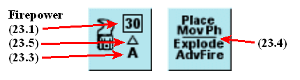
Etiquetas: - Firepower (23.1) → Potencia de Fuego (23.1) - (23.5) → (23.5) - (23.3) → (23.3) - Place / Mov Ph / Explode / AdvFire (23.4) → Colocar / Fase de movimiento / Explota / Fuego de avance (23.4)
23. CARGAS DE DEMOLICIÓN¶
23.1 Una carga de demolición se considera un Arma de Apoyo y explota en el hex objetivo con una fuerza equivalente a 30 factores en la Tabla de Fuego de Infantería.
23.2 Solo las Escuadras de Ingenieros de Asalto (8-3-8) o los líderes con un modificador de liderazgo de -2 o -3 pueden colocar una Carga de Demolición.
►23.3 Las Cargas de Demolición pueden colocarse en el hex objetivo desde cualquier hex adyacente alcanzado por el ingeniero o el líder que porta la carga. (EXCEPCIÓN: las cargas de demolición no pueden colocarse desde una elevación inferior a una superior a través de un lado de hex de acantilado (44.1).) La carga debe colocarse en el hex objetivo durante la Fase de Movimiento del jugador propietario. La unidad que coloca la carga no necesita permanecer adyacente al hex objetivo. Para que quede operativamente colocada, la Escuadra de Ingenieros o el líder que colocó la carga debe sobrevivir a todo el Fuego Defensivo enemigo contra el hex de colocación sin desmoralizarse. Si se desmoraliza en el hex de colocación, la Carga de Demolición permanece en el hex de colocación de la unidad desmoralizada y no explota.
23.4 Si está correctamente colocada, la carga explotará en cualquier momento durante la siguiente Fase de Fuego de Avance, a elección del propietario, y se retira del juego.
23.5 Se utilizan todos los modificadores a la tirada de dados por cobertura protectora, como el +3 por un edificio de piedra. Los modificadores de liderazgo no afectan a la tirada de dados de la carga al explotar. Las unidades ocultas (25.2) se atacan a media potencia (15 factores de potencia de fuego).
23.6 Una Escuadra de Ingenieros de Asalto puede utilizar su potencia de fuego inherente en la misma Fase de Avance durante la cual explota su Carga de Demolición, pero la escuadra debe disparar contra el hex objetivo que contiene la Carga de Demolición colocada.
23.7 Siempre que una Carga de Demolición obtenga un resultado KIA en la Tabla de Fuego de Infantería, todas las armas de apoyo del hex objetivo quedan eliminadas también.
23.8 Las cargas de demolición, como todas las armas de apoyo, fallan con una tirada de dados de efectos de 12.
24. HUMO¶
24.1 Los marcadores de humo no son armas de apoyo, sino que sirven para reducir la visibilidad en el hex en el que se colocan. Por ello, los marcadores de humo no se "transportan" por el tablero, sino que permanecen apilados fuera del tablero en la cantidad especificada por el escenario, para usarse a voluntad.
24.2 Solo las Escuadras de Ingenieros de Asalto pueden colocar marcadores de humo. Cada Escuadra puede colocar un marcador de humo por turno.
►24.3 El humo puede colocarse en cualquier hex ocupado por una Escuadra de Ingenieros o adyacente a ella, como primera acción realizada durante la Fase de Fuego Preparado del propietario. La unidad de Ingenieros que coloca el humo puede aún moverse y/o disparar normalmente.
24.4 Los marcadores de humo no cuentan para los límites de apilamiento.
24.5 Las unidades pueden moverse hacia o a través de un hex lleno de humo tras pagar una penalización adicional de 1 FM.
►24.6 Cualquier Grupo de Fuego que trace una LDV hacia dentro, hacia fuera o a través de un hex lleno de humo sufre un modificador de + a la tirada del Combate de Fuego (tirada PARA IMPACTAR de cañones pesados, 33.3). Este modificador es igual a la tirada de un dado. El humo no tiene efecto sobre la resolución de los ataques de Carga de Demolición, lanzallamas o Artillería (46.5).
24.7 La tirada del modificador de humo se realiza después de la tirada del Combate de Fuego de cada Grupo de Fuego y afecta únicamente al fuego de ese Grupo de Fuego.
24.8 Una vez jugado, un marcador de humo permanece en su sitio hasta el inicio de la siguiente Fase de Fuego Preparado del jugador que lo colocó, momento en el que se retira.
25. OCULTACIÓN¶
No existe el movimiento oculto como tal en el Set de Juego I de SQUAD LEADER. Todas las piezas permanecen a la vista sobre el tablero en todo momento. Sin embargo, colocando marcadores de Ocultación encima de una o varias unidades, se crea cierta dosis de incertidumbre y de "niebla de guerra".
25.1 Un marcador de Ocultación no se considera arma de apoyo y no cuenta para los límites de apilamiento.
25.2 Una unidad o pila de unidades situada bajo un marcador de ocultación no puede ser inspeccionada por el jugador contrario, y debe tratarse como si fuera una escuadra enemiga hasta que se demuestre lo contrario.
►25.3 Los marcadores de Ocultación pueden colocarse encima de cualquier escuadra o líder, incluso desmoralizados, al final del turno completo de jugador de esa unidad, siempre que durante el mismo no se haya movido, no haya disparado, no haya hecho humo, no haya sido objeto de fuego que resultara en un Chequeo de Moral, ni haya estado adyacente a una unidad enemiga (EXCEPCIÓN: unidades en búnkeres, 27.5 y 57.1). La colocación de marcadores de ocultación está limitada a hexes de bosque o de edificio (excepto durante escenarios nocturnos, 49.5).
►25.4 Los marcadores de Ocultación deben retirarse inmediatamente cuando cualquier unidad situada bajo el marcador de ocultación dispare, se mueva, haga humo, sea objeto de fuego que resulte en un Chequeo de Moral, intente atrincherarse (54.2) o quede adyacente a cualquier unidad de infantería enemiga tras la conclusión de cualquier Fase de Fuego Defensivo o Fase de Avance.
25.41 Los marcadores de Ocultación no afectan a los ataques contra unidades amigas no ocultas que se mueven hacia o a través del mismo hex donde hay unidades ocultas. Dichas unidades serían objeto de fuego a plena potencia; cualquier unidad oculta en el mismo hex sufriría la misma tirada de combate de fuego pero a media potencia de fuego.
25.42 Si una o más unidades ocultas desean moverse (o disparar) aunque otras unidades ocultas en el mismo hex mantengan su posición, todas las unidades del hex perderían su estado de ocultación.
25.5 Un marcador de ocultación no tendría que retirarse a causa de una unidad enemiga en un hex adyacente si dicha unidad fue eliminada o desmoralizada por Fuego Defensivo.
25.6 El único momento en que pueden colocarse marcadores de Ocultación de forma distinta a lo dispuesto en 25.3 es cuando un escenario asigna un número de marcadores de Ocultación que deben colocarse sobre el tablero durante el despliegue.
25.7 Los marcadores de Ocultación pueden actuar también como marcadores "señuelo" o "en blanco" en los escenarios en que se asignan, colocándolos debajo de otro marcador de Ocultación, dando así la impresión de una pila de marcadores reales bajo un marcador de Ocultación. Puede colocarse cualquier número de marcadores de Ocultación en una pila.
25.8 Cualquier Grupo de Fuego que dispare contra un hex objetivo que contenga un marcador de Ocultación lo hace con potencia de fuego reducida a la mitad, según lo dispuesto para el Fuego de Área (9.4). (EXCEPCIÓN: 25.41).
25.9 Todos los marcadores de Ocultación de un hex objetivo se retiran si un ataque sobre ese hex produce un resultado distinto de "Sin Efecto", independientemente del éxito o fracaso de cualquier Chequeo de Moral resultante.
26. FANATISMO¶
El Fanatismo es una regla especial usada solo en los escenarios 2 y 3, pero se incluye aquí como referencia para su uso al diseñar tus propios escenarios.
26.1 A veces, debido al terreno, la posición o circunstancias especiales, un grupo de unidades será clasificado como "fanático" y recibirá un modificador especial de -1 a la tirada para todos los Chequeos de Moral e Intentos de Reorganización. Esto equivale a aumentar en uno el valor de moral de las unidades afectadas. El Fanatismo se usa únicamente cuando lo exige el escenario en juego.
26.2 En los Escenarios 2 y 3, el beneficio del fanatismo se aplica solo a las unidades rusas dentro de la Fábrica de Tractores. El beneficio del fanatismo se gana y se pierde únicamente mediante la ocupación de la fábrica. Las unidades rusas que entren o empiecen el juego dentro del edificio son fanáticas; aquellas que estén fuera o que abandonen la fábrica no tienen el beneficio del fanatismo.
27. MOVIMIENTO POR ALCANTARILLAS¶
El Movimiento por Alcantarillas tiene lugar por debajo del nivel de la calle y crea así, en efecto, un segundo hex bajo cada hex del nivel del tablero. Esta dimensión adicional permite a las unidades que usan el Movimiento por Alcantarillas moverse temporalmente a través de hexes que contienen unidades enemigas, porque debido a la dimensión añadida que crea el Movimiento por Alcantarillas estos hexes equivalen en realidad a dos hexes separados. El Movimiento por Alcantarillas está restringido a aquellos escenarios que lo requieran específicamente.
27.1 Las unidades de infantería pueden usar el Movimiento por Alcantarillas solo si comienzan su Fase de Movimiento en un hex de entrada de alcantarilla (marcado con una O). Un ejemplo de hex de Entrada de Alcantarilla es el 1AA5. Deben anunciar su intención de usar el Movimiento por Alcantarillas antes de moverse, o el defensor podrá disparar contra ellas como si efectuaran un movimiento normal.
27.2 Las unidades que usan el Movimiento por Alcantarillas pueden moverse solo tres hexes por Fase de Movimiento, y deben terminar la Fase de Movimiento en un hex de Entrada de Alcantarilla. El Movimiento por Alcantarillas solo puede tener lugar durante la Fase de Movimiento, no en la Fase de Avance. Este es uno de los pocos casos en que las unidades de infantería pueden moverse a un hex ocupado por el enemigo durante la Fase de Movimiento.
27.21 Las escuadras deben ir acompañadas por un líder para usar el Movimiento por Alcantarillas.
27.22 Una vez anunciado el Movimiento por Alcantarillas, el jugador propietario puede mover sus unidades como una pila combinada a cualquier hex de Entrada de Alcantarilla que elija dentro de 3 hexes, siempre que saque un "4" o menos con un dado. Los líderes no modifican esta tirada. Una tirada de "5" o "6" hace que las unidades se pierdan y terminen su Fase de Movimiento fuera del tablero. En la siguiente Fase de Movimiento de la unidad, la pila se coloca en un hex de Entrada de Alcantarilla a elección del jugador contrario dentro de 6 hexes de su punto de partida.
27.3 Las unidades que usan el Movimiento por Alcantarillas no pagan coste de movimiento por terreno el turno en que ejecutan el Movimiento por Alcantarillas. Pueden transportarse por las alcantarillas todas las armas de apoyo, con la excepción de las HMG, morteros, 105 y cañones Antitanque.
27.4 Las unidades que usan el Movimiento por Alcantarillas son inmunes a todo el fuego dirigido contra ellas durante la Fase de Movimiento en hexes distintos del hex de entrada de alcantarilla en el que las unidades terminan su Fase de Movimiento.
27.5 Una unidad que termina su Movimiento por Alcantarillas sin estar adyacente a un enemigo en el mismo edificio queda automáticamente cubierta por un marcador de ocultación, lo que hace que todo el fuego contra ella se reduzca a la mitad como Fuego de Área. El marcador de ocultación se retira si la unidad dispara o se mueve en la Fase de Fuego de Avance o en la Fase de Avance.
27.6 Una entrada de alcantarilla puede quedar inutilizable durante el resto del escenario haciendo explotar una Carga de Demolición en ese hex.
27.7 Las unidades que usan el Movimiento por Alcantarillas y terminan su Fase de Movimiento en cualquier hex de Entrada de Alcantarilla ocupado por el enemigo están sujetas a lo siguiente:
A. El defensor en el hex de Entrada de Alcantarilla puede realizar Fuego Defensivo contra las unidades en la alcantarilla a alcance a quemarropa sin modificadores de terreno y con el modificador de -2 por moverse a campo abierto.
B. Si sobreviven, las unidades en la alcantarilla podrán realizar Fuego de Avance normal (a quemarropa, en movimiento), pero el defensor obtendría el modificador de +3 por edificio de piedra.
C. Las unidades de Movimiento por Alcantarillas desmoralizadas son eliminadas inmediatamente.
D. Los supervivientes del intercambio de Fuego Defensivo y Fuego de Avance quedan trabados en una situación normal de combate cuerpo a cuerpo (Melee) y se atacan mutuamente en la siguiente Fase de Combate Cuerpo a Cuerpo.
28. VEHÍCULOS BLINDADOS DE COMBATE (VBC)¶
A continuación se describen los tipos básicos de carros y Cañones Autopropulsados (en adelante denominados CAP) presentes en SQUAD LEADER. Los semiorugas y camiones, cuyas reglas varían considerablemente, se tratarán más adelante, antes de los escenarios en los que se introducen. Los carros, CAP y semiorugas se denominan colectivamente VBC (Vehículos Blindados de Combate). Los carros son vehículos con torreta y se reconocen por la banda blanca alrededor del VBC, símbolo de una torreta móvil. Los VBC impresos sobre fondo blanco son VBC "de techo abierto" y están sujetos al fuego de infantería desde arriba (46.54 y 47.8).
28.1 PUNTOS DE MOVIMIENTO: La capacidad de movimiento de los VBC varía enormemente de unos a otros y se expresa en Puntos de Movimiento (PM) impresos en la esquina superior derecha del marcador. Los VBC utilizan los Puntos de Movimiento exactamente de la misma manera que la infantería gasta los FM, pero lo hacen utilizando su propia Tabla de Costes de Movimiento de Vehículos (30.4).
28.2 TIPO DE CAÑÓN PRINCIPAL: El tamaño del armamento principal del VBC en milímetros, que determina la columna usada en las Tablas de Aniquilación de VBC y de Fuego de Infantería. Si hay una línea sobre este número, solo puede disparar munición HE. Todos los demás cañones pueden disparar munición AP o HE. Un asterisco (*) denota armamento principal menos eficaz para impactar objetivos a largo alcance. No hay limitación de alcance para el armamento principal de un carro o CAP.
28.3 TIPO DE VEHÍCULO: Se usa únicamente con fines de identificación.
28.4 ARMAMENTO MG: Algunos VBC tienen ametralladoras además de su armamento principal. Todas las MG de los VBC tienen un alcance normal de 8. El número de la izquierda se refiere a la potencia de fuego y los factores de penetración de la MG que solo puede disparar en el Arco Cubierto (29.4), y al mismo hex objetivo que el cañón principal. El número de la derecha se refiere a la potencia de fuego y los factores de penetración de la MG que puede disparar en cualquier dirección independientemente del Arco Cubierto.
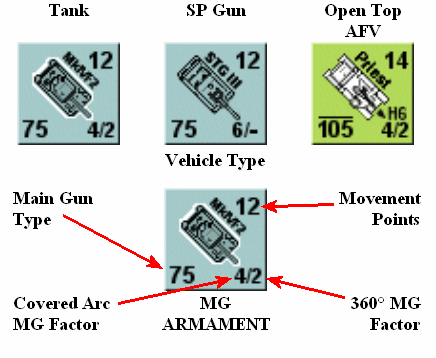
Tipos de vehículo (fila superior): - Tank → Carro/Tanque - SP Gun → Cañón autopropulsado (CAP) - Open Top AFV → VBC de techo abierto
Diagrama inferior (etiquetas de la ficha de vehículo): - Main Gun Type → Tipo de cañón principal - Movement Points → Puntos de Movimiento (PM) - Covered Arc MG Factor → Factor de ametralladora del arco cubierto - 360° MG Factor → Factor de ametralladora de 360° - Vehicle Type → Tipo de vehículo - MG ARMAMENT → Armamento de ametralladora
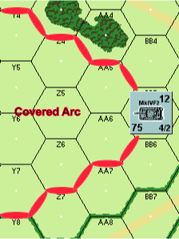
Mapa con la etiqueta Covered Arc → Arco cubierto.
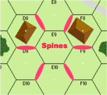
Mapa con la etiqueta Spines → Aristas/lomos (de los edificios).
30. Tabla de Coste de Movimiento de Vehículos¶
Verifica los valores con tus cartas/tablas originales.
* Requiere tirada de dados, ver 39.1 ** No se permiten semiorugas COT = Coste del Terreno en el que se mueve
| Terreno / Acción | Coste para VBC | Coste para Camión/Jeep |
|---|---|---|
| Desembarcar pasajeros | 2 PM | 2 PM |
| Por carretera (a través del lado de hex cruzado por la carretera) | ½ PM | ½ PM |
| Terreno abierto, trigal | 1 PM | 6 PM |
| A través de un hex que contiene restos/carcasa o un vehículo | 2 PM/vehículo + COT | 2 PM/vehículo + COT |
| A terreno más alto que el ocupado previamente | 4 PM + COT | 4 PM + COT |
| Bosque* | 6 PM ** | No permitido |
| Edificios de madera | 4 PM ** | No permitido |
| Sobre muros/setos | Sin coste adicional | No permitido |
| Hex lleno de humo | 1 PM + COT | 1 PM + COT |
| Cualquier hex fuera del Arco Cubierto (29.4) | 2 PM + COT | 2 PM + COT |
| Cráter de proyectil, atrincheramiento | Sin coste adicional | 4 PM + COT |
| Edificios de piedra, lados de hex de acantilado | No permitido | No permitido |
29. APILAMIENTO Y COLOCACIÓN DE VEHÍCULOS¶
29.1 Solo puede colocarse un vehículo de cualquier tipo en el mismo hex. Dos vehículos no pueden terminar su turno en el mismo hex, pero durante el turno cualquier número de vehículos puede pasar a través del mismo hex. Un vehículo que se mueve a través de un hex que contiene otro vehículo o carcasa paga una penalización de 2 PM por cada vehículo/carcasa en el hex, además del coste normal de entrar en ese hex.
►29.2 Solo tres unidades de infantería (de las cuales únicamente dos pueden ser escuadras) y hasta 5 puntos de porte de armas de apoyo pueden apilarse bajo un vehículo. Además, todos los vehículos pueden llevar pasajeros encima del vehículo (31.1, 51.1).
29.3 Las unidades de infantería amigas en el mismo hex que un vehículo deben estar o bien montadas en el vehículo como pasajeros (31.2) (apiladas encima del marcador del vehículo) o bien avanzando junto a él (apiladas debajo del marcador del vehículo).
29.4 Al colocar un vehículo es importante considerar la dirección en que está orientado, ya que esto define su Arco Cubierto, que se utiliza tanto en la resolución del movimiento como del fuego. El Arco Cubierto se forma alineando el cañón del CAP o del carro en línea directa con un saliente del lado de hex del hex que dispara. El Arco Cubierto consiste entonces en los lados de hex inmediatamente a derecha e izquierda del cañón. Estos lados de hex se extienden hasta el límite de la LDV desde el hex que dispara. Todos los hexes entre estas dos filas de hexes convergentes forman el Arco Cubierto. Si la colocación del VBC es ambigua, el oponente puede elegir cuál de los dos salientes equidistantes se usará para determinar el Arco Cubierto. En el caso de un vehículo cuyo cañón no sea claramente discernible o sea inexistente, se utiliza una flecha (>) impresa en el marcador para determinar el Arco Cubierto.
30. MOVIMIENTO DE VBC¶
30.1 Los marcadores de vehículos no pueden entrar en hexes de edificio de piedra bajo ninguna circunstancia.
30.2 Los vehículos pueden gastar hasta la totalidad de su asignación de Puntos de Movimiento cada turno, de acuerdo con el coste del terreno en el que se mueven, según se describe en la Tabla de Costes de Movimiento de Vehículos.
30.3 Los vehículos pueden moverse siempre un hex por turno, independientemente de los costes en PM de la Tabla de Costes de Movimiento de Vehículos.
30.4 Todo el movimiento de vehículos tiene lugar en la Fase de Movimiento. Ningún vehículo puede moverse en la Fase de Avance.
►30.5 Los vehículos pueden cambiar su orientación (y por tanto su Arco Cubierto) libremente tras moverse a un hex, pero deben moverse en la dirección de su Arco Cubierto, con el frente del vehículo orientado hacia el hex al que se mueven.
30.6 Los vehículos pueden moverse libremente a través de hexes que contengan unidades de infantería amigas.
►30.7 A diferencia de las unidades de infantería, los VBC pueden moverse a un hex ocupado por el enemigo durante su Fase de Movimiento (35.1). Sin embargo, deben pagar el doble del coste normal (4 PM/VBC + COT) para moverse a un hex ocupado por un VBC enemigo.
30.8 Un vehículo no puede terminar su movimiento en el mismo hex que otro vehículo, a menos que sea destruido o inmovilizado mientras se mueve a través del hex. Las combinaciones carcasa/vehículo no tienen más efecto sobre el bloqueo de LDV que un único vehículo. Un vehículo, mientras está en el mismo hex que una carcasa o vehículo, no recibe bloqueo de LDV de esa carcasa o vehículo.
Ejemplo: Los números negros en cada hex se refieren al número total de PM gastados por el semioruga para llegar allí. Los números rojos se refieren al número total de PM gastados por el camión.
31. TRANSPORTE DE INFANTERÍA / CARROS Y CAÑONES AUTOPROPULSADOS¶
►31.1 Todos los VBC pueden llevar una combinación máxima de dos unidades de infantería (de las cuales solo una puede ser una escuadra) más hasta 5 puntos de porte de Armas de Apoyo, sin reducción de los Puntos de Movimiento del VBC.
31.2 Las unidades transportadas se colocan encima del marcador del VBC. Las unidades colocadas debajo del marcador del VBC no están siendo transportadas, sino que van a pie.
31.3 El VBC no puede moverse durante el turno en que la infantería embarca en el vehículo, pero puede moverse tanto antes como después del desembarco en el turno en que la infantería desembarca. No obstante, el vehículo debe pagar una penalización de dos PM para permitir el desembarco de las unidades, a menos que las unidades que desembarcan estén desmoralizadas.
►31.4 La infantería puede embarcar en un vehículo sin penalizaciones de movimiento adicionales, pero solo puede moverse al mismo hex o a un hex adyacente no ocupado por el enemigo durante cualquier Fase de Movimiento en que desembarque. La infantería no puede embarcar ni desembarcar durante la Fase de Avance, ni viajar en ningún VBC que esté reduciendo a escombros un edificio de madera (58.4).
31.5 La infantería transportada en un carro o CAP no puede disparar mientras es transportada (aunque podría participar en combate cuerpo a cuerpo si es atacada por infantería contraria). Sin embargo, la infantería recién desembarcada podría disparar a media potencia en la Fase de Fuego de Avance.
31.6 La infantería transportada que se desmoraliza como resultado del fuego enemigo desmonta inmediatamente al mismo hex o a cualquier hex adyacente no ocupado por el enemigo (a elección del jugador propietario), donde se trata como cualquier otra unidad desmoralizada. Las unidades desmoralizadas no pueden embarcar en un vehículo.
►31.7 Si un carro o CAP dispara cualquier armamento, o es impactado por fuego de tipo distinto al de infantería pero no eliminado mientras transporta infantería, la infantería montada desmonta inmediatamente al mismo hex o a cualquier hex adyacente no ocupado por el enemigo. El vehículo sí tiene que pagar el coste de 2 PM por cualquier infantería que se vea forzada a desmontar.
31.8 Si un VBC es destruido, todos sus pasajeros son eliminados.
31.9 Los VBC pueden empezar o entrar en los escenarios con pasajeros ya montados, cuando corresponda.
32. LOS VBC COMO COBERTURA¶
32.1 [RE: véase GIA 144.96] Los ataques contra pasajeros sobre un carro o CAP reciben un modificador de +2 a la tirada si el fuego se dirigió contra ellos a través del Arco Cubierto (29.4) a la misma elevación o a una inferior. Si el fuego se dirige contra ellos desde el flanco, la retaguardia o una elevación superior, no hay tal modificación.
32.2 No hay modificador de -2 a la tirada por fuego defensivo contra pasajeros que se mueven a campo abierto. (EXCEPCIÓN: 46.54 FFE de Artillería).
32.3 [RE: véase GIA 144.2] La LDV de cualquier unidad que dispara y que cruza la silueta de un vehículo se ve afectada como si el vehículo fuera un muro de piedra en el segundo lado de hex del hex del vehículo a través del cual se traza el fuego (11.51). EXCEPCIÓN: Los vehículos nunca bloquean la LDV trazada desde un hex adyacente. Los vehículos que ocupen el hex situado detrás de una carcasa se considerarían "ocultos por desenfilada" (hull down) si la LDV del atacante cruza la silueta de la carcasa.
Ejemplo: El vehículo afecta a la LDV del atacante como si fuera un muro a lo largo del lado de hex rojo. Todo el fuego dirigido al hex S8 recibiría un modificador de +2 a la tirada (o se consideraría desenfilado/hull down, 41.1, en el caso de los VBC); todo el fuego dirigido al hex S9 quedaría bloqueado, salvo desde una elevación superior.
Ejemplo: Supón que el que dispara está al mismo nivel que el hex objetivo. El Fuego A obtiene un modificador de -2 a la tirada. El Fuego B queda igualado. El Fuego C queda bloqueado.
32.4 [RE: véase GIA 144.2] Los marcadores de vehículos deben colocarse en el centro exacto de cada hex, de modo que el Arco Cubierto quede definido y ninguna parte del marcador se extienda fuera del hex. El fuego que cruza el marcador del vehículo, pero no la silueta del vehículo en sí, no queda bloqueado.
Ejemplo: El Fuego A queda bloqueado; el Fuego B y el C no.
32.5 Las unidades situadas bajo el marcador de un VBC (es decir, a pie en el mismo hex) reciben un modificador de +1 a la tirada para todos los ataques realizados contra ellas. Si el VBC es eliminado, todas las unidades situadas bajo el marcador del VBC deben realizar un Chequeo de Moral normal. Por lo demás, la infantería situada bajo el marcador de un VBC no se ve afectada por los ataques antitanque. (EXCEPCIÓN: Lanzallamas y Cargas de Demolición).
32.51 Las unidades situadas bajo el marcador de un VBC pueden moverse con (19.4) el VBC hasta el límite de su asignación normal de movimiento, a fin de mantener durante toda la Fase de Fuego Defensivo el beneficio del modificador por efecto del terreno derivado de estar bajo el marcador del VBC, siempre que empiecen y terminen la Fase de Movimiento bajo el marcador del VBC.
32.52 El fuego defensivo contra infantería que se mueve a campo abierto bajo el marcador de un VBC estaría sujeto tanto al modificador de -2 por moverse a campo abierto como al modificador de +1 por estar bajo el marcador de un VBC, resultando así un modificador neto de -1.
►32.6 [RE: véase GIA 144.2] Los vehículos no presentan obstáculos a la LDV (32.3) durante la Fase de Fuego Defensivo si se han movido en la Fase de Movimiento precedente.
32.7 [RE: véase GIA 144.2] Las unidades que intentan moverse por detrás de una línea de vehículos contiguos, o de vehículos y obstrucciones de LDV, podrían aún ser objeto de fuego entre los vehículos durante la Fase de Fuego Defensivo, pero el vehículo constituiría cobertura suficiente para impedir que el que dispara obtenga el modificador de "-2" a la tirada por un objetivo que se mueve a campo abierto, si la LDV cruza el marcador del vehículo. Esto también se aplicaría a una secuencia edificio-carro-edificio. Véase el diagrama de abajo.
33. COMBATE DE VBC¶
33.1 [RE: ver GIA 144.411] Los VBC (carros y CAP), a diferencia de la infantería, solo pueden disparar su armamento principal hacia delante, en la dirección conocida como su Arco Cubierto (29.4).
33.2 Los VBC, como la infantería, solo pueden disparar su armamento principal una vez (EXCEPCIÓN: M-10) por turno de jugador, y si disparan cualquier arma en la Fase de Fuego Preparado no pueden moverse en la Fase de Movimiento. Cierto fuego puede ejecutarse en el mismo turno de jugador después del movimiento, con una penalización a la precisión del fuego (33.31).
►33.3 La resolución del combate de VBC es un proceso de dos pasos. Primero se debe consultar la TABLA PARA IMPACTAR para determinar si el armamento principal del carro o del CAP impactó en su objetivo. El "Tipo de Objetivo" y el "alcance al objetivo" se cruzan para determinar el Número de Impacto, que se debe igualar o sacar por debajo en la tirada para impactar en el objetivo. Las unidades rusas que disparan usan los Números de Impacto rojos; todas las demás unidades usan los Números de Impacto negros. Si no se consigue el Número de Impacto, se falla el objetivo y no hay segundo paso de resolución del combate.
►33.31 La tirada de dados de Determinación de Impacto puede modificarse por diversos tipos de arma y/o situaciones. Estos modificadores se aplican en cualquier fase relevante en la que dispare el VBC. Nótese que los CAP/Cañones Antitanque solo pueden disparar dentro de su Arco Cubierto en cualquier Fase de Fuego, pero pueden pivotar dentro del hex durante su Fase de Movimiento para disparar en la Fase de Fuego de Avance (Caso G), y de igual modo pueden cambiar de orientación durante la Fase de Fuego Defensivo (Caso I). Un CAP no puede disparar su armamento principal en el mismo turno de jugador en el que se mueve a un hex nuevo. Todos los VBC pueden disparar su armamento de MG a la mitad de potencia tras moverse a un hex nuevo.
33.32 Todos los Modificadores a la Tirada de Determinación de Impacto son acumulativos excepto los casos B y C tomados conjuntamente; y aquellas penalizaciones por pivotar y por movimiento a un hex nuevo, ya que moverse a un hex nuevo permite cambiar libremente el Arco Cubierto (30.5). Una tirada PARA IMPACTAR de '2' antes de la modificación da como resultado un posible impacto, incluso si el número final PARA IMPACTAR necesario es menor que 2. Tira un tercer dado, y suma +1 por cada número por debajo de 2 que originalmente se necesitaba para un impacto. Cualquier resultado menor que 6 es un impacto.
Ejemplo: Supongamos un número necesario PARA IMPACTAR de 0. Para conseguir un impacto, el tirador debe sacar una tirada de '2' y después sacar un '1', '2' o '3' en un tercer dado.
33.33 Los Líderes apilados con carros o CAP no modifican el fuego del carro o del CAP de ninguna manera.
33.34 Cuando un carro dispara fuera de su Arco Cubierto (Caso D), se cambia la orientación de la ficha que dispara de modo que el objetivo quede ahora dentro de su Arco Cubierto. Nota: no confundir este movimiento de la ficha con el Caso E, que se refiere a un carro que cambió de orientación dentro de su hex durante la Fase de Movimiento.
►33.4 Suponiendo que el VBC objetivo haya sido impactado, se debe consultar la tabla de DESTRUCCIÓN DE VBC para determinar si el proyectil penetró el blindaje del objetivo. Cruza el tipo de arma que dispara y la munición con la Orientación del Objetivo para determinar el Número de Destrucción del VBC. El Número de Destrucción es el número que debes igualar o sacar por debajo en la tirada para eliminar el vehículo.
33.41 Algunos VBC tienen mejor protección de blindaje que otros. Por tanto, es necesario aplicar Modificadores a la tirada de dados del atacante en la Tabla de Destrucción de VBC.
33.42 No hay modificador a la tirada de dados "Para Destruir" para camiones y jeeps.
33.5 La Orientación del Objetivo se determina como se muestra en el siguiente diagrama, dependiendo de qué lado de hex del objetivo cruce la LDV de la unidad que dispara. Si la LDV de la unidad que dispara recorre exactamente la línea central (espina) de un hex del objetivo que determina la orientación, la orientación del objetivo será la menos favorable para el atacante. En el ejemplo siguiente ambas orientaciones del objetivo serían "Lateral".
33.6 Las fichas de VBC cuyo Tipo de Cañón Principal aparece tachado solo pueden disparar munición HE. Todos los demás VBC pueden disparar HE o AP. Los 105 americanos también tienen la opción de disparar HEAT (63.3), lo cual se indica en la ficha con la abreviatura H6. El armamento principal de los VBC con un asterisco (*) es menos efectivo al impactar objetivos a largo alcance debido a baja velocidad de salida, o a un sistema rudimentario de puntería.
33.7 Un carro o CAP no puede usar sus factores de MG en un intento de destruir otro carro o CAP. Un semioruga podría usar su armamento de MG en la columna "MMG/HMG" de la Tabla de Destrucción de VBC contra cualquier VBC. El M16, con su armamento de cuádruple 50, podría tirar 4 veces en la columna del calibre 50 al disparar a un VBC, pero las 4 tiradas de dados deben hacerse contra el mismo objetivo, y cualquier tirada de dados de 12 inutilizaría las cuatro ametralladoras. Una MG que dispara a un vehículo no penetra más allá del vehículo.
33.8 Los VBC no pueden combinar su fuego con ningún otro VBC ni infantería, aunque estén adyacentes.
33.9 Siempre que un carro o CAP es destruido por acción hostil (EXCEPCIÓN: Combate Cuerpo a Cuerpo) existe la posibilidad de que la dotación escape viva y operativa. Por tanto, siempre que un carro o CAP sea eliminado, dale la vuelta y tira dos dados. Una tirada de dados igual o inferior al Número de Supervivencia impreso en la ficha de restos da como resultado la supervivencia de la dotación. Se coloca entonces inmediatamente una ficha de dotación encima de la ficha de restos. Se trata como "infantería moviéndose a campo abierto" y está sujeta al modificador a la tirada de dados de -2, sin importar la fase de fuego, durante el resto de esa fase de fuego. Si sobrevive al resto de la fase de fuego, se mueve inmediatamente debajo de los restos o a cualquier hex adyacente no ocupado por unidades enemigas.

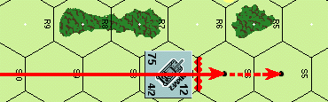


Diagrama de orientación de un VBC (vehículo blindado de combate): muestra los arcos de blindaje del carro respecto a los hexes circundantes. - Side = Flanco (lateral) - Front = Frontal - Rear = Retaguardia (trasera) Etiquetas de hex de referencia: EE8, DD8, FF8, DD9, FF9, EE10, DD10, FF10, C10. Valores del carro: 12 (arriba), 75 (izquierda), 4/2 (abajo derecha).
Tabla Para Impactar 33.3¶
Verifica los valores con tus cartas/tablas originales.
(Cada celda muestra dos valores por rango: el primero/negro y el segundo/rojo. Conserva ambos según tu tabla original.)
| Tipo de blanco / Alcance | 1-6 | 7-12 | 13-24 | 25+ |
|---|---|---|---|---|
| Infantería en edificio, cráteres de proyectil, atrincheramientos | 8 / 8 | 7 / 6 | 6 / 5 | 5 / 2 |
| Infantería en bosque | 8 / 8 | 6 / 6 | 5 / 4 | 4 / 2 |
| Infantería en terreno abierto | 9 / 9 | 8 / 7 | 7 / 6 | 6 / 3 |
| Vehículo en hull down | 7 / 6 | 5 / 4 | 4 / 3 | 3 / 2 |
| Vehículo en bosque/edificio | 9 / 9 | 8 / 7 | 7 / 6 | 6 / 3 |
| Vehículo | 10 / 10 | 9 / 8 | 8 / 7 | 7 / 4 |
| Cañón antitanque (AT) | 6 / 5 | 5 / 4 | 4 / 3 | 2 / - |
Modificadores a la Tirada de Determinación de Impacto 33.31¶
| Caso | Descripción | Modificador |
|---|---|---|
| A | Disparo durante la Fase de Fuego Defensivo contra un blanco en movimiento | +2 |
| B | * cañón disparando contra blanco a más de 6 hexes de distancia | +2 |
| C | * cañón disparando contra blanco a más de 12 hexes de distancia | +4 |
| D | Carro disparando fuera del Arco Cubierto | +2 |
| E | Carro disparando durante el Fuego de Avance tras pivotar dentro del hex durante la Fase de Movimiento | +1 |
| F | Carro disparando durante el Fuego de Avance tras moverse a un nuevo hex | +5 |
| G | Cañón CAP/AT/obús disparando durante el Fuego de Avance tras pivotar dentro del hex durante la Fase de Movimiento | +3 |
| H | El blanco está oculto | +2 |
| I | Cañón CAP/AT/obús disparando durante la Fase de Fuego Defensivo tras pivotar dentro del hex durante la misma Fase de Fuego Defensivo | +3 |
| J | El blanco está en un hex adyacente | -2 |
| K | El blanco está en el mismo hex | -2 |
*Solo se aplica al armamento principal de los VBC que disparan, marcado con un asterisco en el contador.
Modificadores al Número de Destrucción de VBC 33.41¶
| Vehículo | MTD |
|---|---|
| Semiorugas | -5 |
| Priest | -2 |
| M-10 | -1 |
| M4A4, T34, MkIV | 0 |
| M4M52, SU122, STG III | +1 |
| SU152, Brumbar | +2 |
Tabla de Destrucción de VBC 33.4¶
Verifica los valores con tus cartas/tablas originales.
(Bajo cada tipo de munición, los números son valores por calibre/tipo. Conserva las columnas EXACTAS de tu tabla original.)
| Blanco | AP MMG/HMG | AP 50cal/20mm | AP 37 | AP 50 | AP 75/76 | HE 37 | HE 50 | HE 75/76 | HE 105 | HE 120 | HE 150 | H6 | PF | BAZ | FT | DC |
|---|---|---|---|---|---|---|---|---|---|---|---|---|---|---|---|---|
| Frontal VBC | -3 | -3 | 2 | 3 | 6 | -1 | 0 | 2 | 4 | 6 | 8 | 8 | 7 | 3 | 3 | 9 |
| Lateral VBC | -3 | -2 | 3 | 6 | 9 | 2 | 4 | 6 | 7 | 8 | 10 | 10 | 8 | 4 | 5 | 10 |
| Trasera VBC | -2 | -1 | 8 | 8 | 10 | 2 | 3 | 8 | 4 | 8 | 9 | 12 | 11 | 4 | 6 | 11 |
| Camión/Jeep | NA | NA | NA | 8 | 10 | 11 | 12 | 12 | 12 | 12 | 12 | NA | NA | 10 | 10 | 12 |
NA - Ver 51.4 (Usar la TFI en su lugar)
Leyenda de códigos: - AP = perforante; HE = alto explosivo - MMG/HMG = ametralladora media/pesada; 50cal/20mm = calibre 50/20mm - H6 = obús (?); PF = Panzerfaust (?); BAZ = bazooka; FT = lanzallamas; DC = carga de demolición - MTD = Modificador a la Tirada de dados - CAP = cañón autopropulsado; AT = antitanque
34. VBC CONTRA INFANTERÍA¶
34.1 Los CAP y los carros pueden usar tanto sus MG como su armamento principal contra infantería.
34.2 El armamento principal debe primero conseguir un "impacto" contra la infantería en la TABLA PARA IMPACTAR utilizando cualquier modificador a la tirada de dados descrito en 33.31. Si se consigue un impacto, el calibre del arma (redondeado hacia abajo) del VBC que dispara se encuentra en pequeños números rojos junto a los factores de Potencia de Fuego en la Tabla de Fuego de Infantería. Esta cantidad de Potencia de Fuego de infantería es el equivalente del impacto producido por el armamento principal. Tira dos dados en la Tabla de Fuego de Infantería, añadiendo cualquier modificador de dados debido al terreno o la situación.
34.3 Tras resolver los efectos del fuego del armamento principal, el VBC puede tirar de nuevo en la Tabla de Fuego de Infantería utilizando su factor de ataque de MG. De este modo, es posible que un VBC desmoralice a una unidad de infantería con su armamento principal, y la desmoralice de nuevo con el fuego de MG, eliminándola así.
34.4 Incluso si el armamento principal falla, aún se puede llevar a cabo un ataque solo con los factores de Potencia de Fuego de MG del VBC.
Ejemplo: Supongamos que un T-34 con un cañón de 76 mm dispara a una escuadra en un edificio de piedra a un alcance de 8 hexes. Se necesita un "6" o menos para conseguir un impacto con el armamento principal, y se saca. Este impacto equivale a 8 factores de potencia de fuego en la Tabla de Fuego de Infantería. La tirada de dados es un "5", que se ajusta a un "8" debido a la protección del edificio de piedra, resultando en un Chequeo de Moral. Independientemente del efecto del Chequeo de Moral, el carro puede disparar de nuevo usando su factor de MG de 4 en la Tabla de Fuego de Infantería.
►34.5 [RE: véase GIA 145.6] Si el VBC dispara a un objetivo oculto, se considera fuego de ÁREA y debe reducirse a la mitad. En este caso, un impacto de un proyectil de "70 mm" normalmente equivalente a 8 factores de fuego de infantería equivaldría a 4 en su lugar. De igual modo, un carro que usa Fuego a Quemarropa tendría su equivalente de potencia de fuego de infantería duplicado. Un carro que haya conseguido un impacto en la Fase de Fuego de Avance tras moverse en la Fase de Movimiento no reduciría a la mitad el efecto de su armamento principal. Pagó su penalización por movimiento con la modificación de +5 en la TABLA PARA IMPACTAR (33.31, Caso F).
34.6 [RE: véase GIA 145.1] Nótese que un VBC que dispara su armamento principal contra infantería en movimiento a campo abierto durante la Fase de Fuego Defensivo debe sumar 2 a su tirada de dados PARA IMPACTAR debido al objetivo en movimiento (33.31, Caso A). Sin embargo, si impacta, podría restar 2 a la posterior tirada de dados de "efecto" en la Tabla de Fuego de Infantería. Las MG de los VBC siempre restan 2 al disparar a infantería en movimiento a campo abierto, del mismo modo que cualquier otro fuego de MG o de infantería.
34.7 El factor de potencia de fuego de la MG del Arco Cubierto (número de la izquierda) de un VBC se reduce a la mitad como Fuego en Movimiento si el VBC se ha movido a un hex nuevo o ha pivotado (cambiado su Arco Cubierto) dentro de un hex durante ese turno de jugador. El factor de potencia de fuego de la MG de 360° (número de la derecha) se reduce a la mitad solo si el VBC se ha movido a un hex nuevo durante ese turno de jugador. Los factores de potencia de fuego de la MG del Arco Cubierto y de la MG de 360° de un VBC pueden usarse para atacar al mismo o a diferente hex objetivo. Si atacan al mismo hex objetivo deben combinarse y resolverse con una sola tirada de dados. Sin embargo, si el armamento principal disparó, el factor de la MG del Arco Cubierto solo puede usarse contra el mismo hex objetivo sobre el que disparó el armamento principal.
►34.8 [RE: 64.44 COI] El factor de MG de 360° representa más que un campo de tiro de 360°. Es también un cálculo abstracto de la exposición que corren los miembros de la dotación del VBC al manejar armamento externo. Los VBC que usan su factor de MG de 360° son vulnerables al fuego enemigo en la fase de fuego enemiga inmediatamente posterior. Indica su vulnerabilidad colocando una ficha de CE (Crew Exposed / Dotación Expuesta) encima del VBC. El fuego de infantería puede dirigirse entonces contra el VBC con CE sin importar la fase de fuego, y no necesita estar adyacente para ser efectivo (36.1). Todo ese fuego recibe un modificador de +2 debido a la naturaleza similar a un muro del VBC. El modificador de -2 por moverse a campo abierto no se aplica. Los resultados de Chequeo de Moral se ignoran. Si resulta un KIA, obliga a la dotación del VBC a someterse a un Chequeo de Moral inmediato. El fallo del Chequeo de Moral resulta en el abandono y consiguiente destrucción del VBC. Retira la ficha de CE al final de la siguiente fase de fuego enemiga.
►34.9 [RE: 148.4 GIA] METRALLA (CANISTER): el alemán MKIVF1 puede disparar Metralla (C7) en lugar de munición HE. La Metralla es efectiva solo contra infantería, camiones y jeeps. La Metralla tiene un alcance de 3 hexes pero no tiene efecto a largo alcance más allá de esos 3 hexes ni ningún efecto de duplicación a Quemarropa. La Metralla tiene un factor de penetración de 3 y un equivalente de potencia de fuego de infantería de 20. El fuego de Metralla debe resolverse con tirada en la TABLA PARA IMPACTAR, pero por lo demás se trata como fuego de MG.
34.91 El jugador alemán debe especificar si va a disparar Metralla antes de tirar los dados "Para Impactar".
34.92 Una tirada de dados "PARA IMPACTAR" de Metralla de 7 o más resulta en que ese cañón no tiene proyectiles de Metralla durante el resto del escenario. Trata ese y todos los proyectiles subsiguientes como HE.
35. ARROLLAMIENTOS¶
►35.1 A diferencia de la infantería, los VBC pueden ejecutar una forma de ataque durante la Fase de Movimiento moviéndose encima o a través de unidades de infantería enemigas y/o camiones/jeeps en cualquier tipo de terreno. Este tipo de ataque se denomina ARROLLAMIENTO y se resuelve en la Tabla de Fuego de Infantería inmediatamente cuando el VBC entra en el hex. Los VBC no pueden Arrollar a otros VBC.
35.2 Cualquier número de VBC puede Arrollar un hex objetivo, pero cada ataque de Arrollamiento debe ejecutarse por separado.
35.3 Un carro o CAP que ejecuta un Arrollamiento ataca con el equivalente de 16 factores de potencia de fuego en la Tabla de Fuego de Infantería. Los Semiorugas Armados (47) pueden arrollar con 8 factores de potencia de fuego. Si un VBC pierde su armamento principal o su potencia de fuego de MG debido a una avería (38.1), su factor de potencia de fuego de arrollamiento se reduce a la mitad. Si pierde todo su armamento debido a avería, no puede atacar, pero aún puede moverse encima o a través de posiciones enemigas. Los Arrollamientos contra camiones o jeeps se modifican con -5 a la tirada de dados.
35.4 Todos los Modificadores a la Tirada de Dados por Efectos del Terreno (11.1) normalmente asociados con la Tabla de Fuego de Infantería se aplicarían, con la excepción del modificador de -2 por infantería moviéndose a campo abierto, que se usa solo durante la Fase de Fuego Defensivo.
35.5 Los carros y CAP que ejecutan Arrollamientos no pueden llevar pasajeros al hex objetivo.
35.6 El VBC que arrolla debe sobrevivir a todo el fuego defensivo de cualquier fuente antes de entrar en el hex objetivo para poder ejecutar el ataque de Arrollamiento. La(s) unidad(es) arrolladas serían inmunes al fuego defensivo Antitanque mientras estén en el mismo hex que el VBC que arrolla. Todos los VBC de techo abierto y aquellos sin factor de MG de Arco Cubierto que ejecutan un Arrollamiento y desean usar potencia de fuego de MG (35.3) en el Arrollamiento se consideran en estado de CE en el hex inmediatamente anterior al hex de Arrollamiento y durante toda esa Fase de Movimiento (y de Fuego Defensivo).
35.7 Si el hex objetivo es terreno abierto, la infantería en el Hex Objetivo no puede ejecutar fuego defensivo contra el vehículo que arrolla a menos que esté armada con armas Antitanque. Cualquier infantería adyacente en terreno que no sea abierto puede hacer fuego defensivo contra el vehículo que arrolla (36.1).
35.8 Los vehículos que ejecutan un ataque de Arrollamiento no sufren penalizaciones de movimiento adicionales, pero solo pueden ejecutar un ataque de Arrollamiento por turno. Un ataque de Arrollamiento debe ejecutarse contra el primer hex ocupado por el enemigo en el que se entra durante la Fase de Movimiento. Cualquier otra unidad enemiga sobre la que se pase durante el turno se considera que ha encontrado cobertura dentro de su hex y se ignora. Si el VBC termina su Fase de Movimiento en el mismo hex que una unidad de tipo infantería enemiga, esa(s) unidad(es) de infantería y sus armas de apoyo se mueven a un hex adyacente de su elección inmediatamente después de la Fase de Fuego Defensivo actual. Cualquier Cañón AT, mortero o 105 en el hex de Arrollamiento es eliminado. Otras armas de apoyo de infantería en el hex de Arrollamiento se eliminan solo si resulta un KIA [RE: véase GIA 143.7]. Si el movimiento a un hex adyacente no es posible debido a la presencia de unidades enemigas, límites de apilamiento, el borde del tablero o lados de hex con acantilado, la(s) unidad(es) es eliminada.
35.9 Los VBC que arrollan no pueden disparar ningún arma durante el turno de jugador en el que ejecutan un ataque de Arrollamiento.
36. INFANTERÍA CONTRA VBC¶
Suponiendo que la infantería solo tenga sus armas ligeras inherentes y ninguna arma de apoyo antitanque especial, puede atacar carros o CAP en la Fase de Fuego Defensivo o en la Fase de Combate Cuerpo a Cuerpo usando los procedimientos descritos a continuación.
►36.1 MÉTODO DE LA FASE DE FUEGO DEFENSIVO: los VBC pueden ser atacados durante la FASE DE FUEGO DEFENSIVO por escuadras de infantería que ocupen hexes de terreno no abierto a los que el vehículo estuvo adyacente durante la Fase de Movimiento.
►36.11 Todos los líderes y escuadras adyacentes al VBC que deseen atacarlo deben pasar primero un Chequeo de Moral "PRE-ATAQUE A VBC". A diferencia de otros Chequeos de Moral, no hay penalización por no superar el Chequeo de Moral Pre-Ataque a VBC. Las unidades que fallan este Chequeo de Moral aún pueden disparar a otros objetivos (incluyendo pasajeros sobre el carro) sin perjuicio adicional. Cualquier líder en el mismo hex que no falle el Chequeo de Moral Pre-Ataque a VBC puede aplicar su factor de liderazgo a otras unidades que realicen el Chequeo de Moral Pre-Ataque a VBC.
►36.12 Las unidades que pasan el Chequeo de Moral Pre-Ataque a VBC pueden intentar inmovilizar el VBC sacando una tirada igual o inferior al Número de Inmovilización del VBC en la Tabla de Números de Inmovilización de VBC de Fuego Defensivo. (Véase 39 para los efectos de la inmovilización.) Los Chequeos de Moral Pre-Ataque a VBC son siempre chequeos "M" normales.
36.13 [véase GIA 144.75] Incluso si el intento de inmovilizar el VBC falla, el atacante puede utilizar la misma tirada de dados en la Tabla de Fuego de Infantería para determinar el efecto sobre cualesquiera pasajeros vulnerables (no la infantería bajo la ficha de VBC) sobre el VBC atacado. Los ataques contra pasajeros están sujetos a las restricciones habituales del fuego de infantería.
36.2 MÉTODO DE LA FASE DE COMBATE CUERPO A CUERPO: los VBC también pueden ser atacados durante la FASE DE COMBATE CUERPO A CUERPO por infantería enemiga que se mueva sobre el VBC durante la Fase de Avance.
►36.21 Para avanzar al hex de Combate Cuerpo a Cuerpo, la infantería atacante debe pasar un "CHEQUEO DE MORAL PRE-ATAQUE A VBC" como se explica en 36.11.
►36.22 Si hay infantería enemiga en el mismo hex (incluso como pasajeros) con el VBC, la infantería atacante debe ignorar el VBC y entablar Combate Cuerpo a Cuerpo contra la infantería enemiga. El resultado de este Combate Cuerpo a Cuerpo no influye en la capacidad del VBC de moverse o disparar en su turno. Incluso si el VBC se aleja, la infantería de ambos bandos permanece en el hex de Combate Cuerpo a Cuerpo.
36.23 Las unidades que pasan el CHEQUEO DE MORAL PRE-ATAQUE A VBC y que se movieron sobre el VBC durante la Fase de Avance pueden atacar el VBC y eliminarlo con cualquier tirada de dados igual o inferior al factor de potencia de fuego de la escuadra. Si el intento lo realiza una ficha de líder en lugar de una escuadra, la tirada de dados necesaria para destruir el VBC es un 2 (tras la modificación por liderazgo).
►36.24 Si el ataque no tiene éxito, todas las unidades atacantes (a menos que estén entabladas en Combate Cuerpo a Cuerpo con infantería enemiga) regresan inmediatamente al hex desde el que avanzaron durante la Fase de Avance.
36.3 En ambos tipos de ataque (Fuego Defensivo o Combate Cuerpo a Cuerpo), cada escuadra atacante debe atacar por separado, incluso si está situada en el mismo hex con otras unidades atacantes.
36.4 Los líderes pueden aplicar sus modificadores a la tirada de dados de liderazgo en ambos tipos de ataque, pero cada líder puede dirigir solo un ataque (incluido el suyo propio si elige usarlo) sin importar el número de unidades atacantes en el mismo hex.
37. ARMAS ESPECIALES DE INFANTERÍA CONTRA VBC¶
37.1 La infantería armada con armas antitanque especiales no necesita realizar un Chequeo de Moral Previo al Ataque a VBC para atacar a un VBC.
37.2 LANZALLAMAS: Los lanzallamas pueden atacar a los VBC en cualquier fase de fuego e impactan automáticamente a cualquier vehículo dentro de su alcance. Tiran en la Tabla de Eliminación de VBC utilizando la columna de Lanzallamas (Flamethrowers). Independientemente de la tirada del ataque de lanzallamas contra el VBC, el jugador atacante puede usar la misma tirada una segunda vez en la columna de 20 factores de potencia de fuego de la Tabla de Fuego de Infantería para determinar el efecto del fuego sobre cualquier infantería que también esté en el hex objetivo.
37.3 PANZERFAUST: Cada ficha de panzerfaust representa un dispositivo antitanque que se retira tras su uso, independientemente del grado de éxito.
►37.31 Un panzerfaust tiene un alcance máximo de 3 hexes con Números para impactar variables según el alcance y según si la unidad disparadora se movió ese turno. Los modificadores a la tirada por terreno impuestos al disparar contra un VBC tras un lado de hex de muro (+2 hull down) se suman a la tirada para impactar, no a la tirada de la TABLA DE ELIMINACIÓN DE VBC. En el reverso de la ficha se reproduce una versión abreviada de la Tabla para impactar del PANZERFAUST.
37.32 Si se logra un impacto, consulta la columna de panzerfaust de la TABLA DE ELIMINACIÓN DE VBC para determinar el número que debe igualarse o sacarse por debajo para eliminar el vehículo.
37.33 Un líder puede disparar un panzerfaust a pleno efecto siempre que no opere ni dirija ninguna otra forma de fuego (EXCEPCIÓN: Combate Cuerpo a Cuerpo) durante ese turno de jugador.
37.34 Los modificadores de liderazgo se aplican a la TABLA PARA IMPACTAR del Panzerfaust, pero no a las Tablas de ELIMINACIÓN DE VBC en los ataques con panzerfaust.
37.35 Un panzerfaust cuenta como 1/2 LMG a efectos de apilamiento, movimiento y uso de la potencia de fuego de la escuadra. Por tanto, si los tuviera, una escuadra podría transportar hasta 6 panzerfaust sin coste y disparar hasta cuatro y aun así poder usar su propia potencia de fuego de infantería inherente. En ninguna circunstancia podría disparar más de cuatro panzerfaust en un turno de jugador.
37.36 Un panzerfaust es ineficaz contra la infantería, salvo que el objetivo de infantería esté en un edificio de madera. El panzerfaust, si impacta, tendría el efecto de anular el habitual modificador a la tirada de +2 por la protección del edificio de madera, para cualquier otro fuego contra ese hex durante esa fase de fuego específica, pero el panzerfaust en sí no tiene efecto directo sobre la infantería.
37.37 Un panzerfaust no puede dispararse desde el interior de un vehículo o búnker (56).
37.4 BAZOOKA: La bazooka puede usarse una y otra vez mientras tenga munición (37.45).
►37.41 Una bazooka tiene un alcance máximo de 4 hexes con Números para impactar variables según el alcance y según si la unidad disparadora se movió ese turno. Los modificadores a la tirada por terreno impuestos al disparar contra un VBC tras un lado de hex de muro (+2 hull down) se suman a la tirada para impactar, no a la tirada de las TABLAS DE ELIMINACIÓN DE VBC. En el reverso de la ficha se reproduce una versión abreviada de la Tabla para impactar de la Bazooka.
37.42 Si se logra un impacto, consulta la columna de Bazooka de la TABLA DE ELIMINACIÓN DE VBC para determinar el número que debe igualarse o sacarse por debajo para eliminar el vehículo.
37.43 Dos líderes cualesquiera pueden disparar una bazooka a pleno efecto siempre que ninguno opere ni dirija ninguna otra forma de fuego salvo Combate Cuerpo a Cuerpo durante ese turno de jugador. No obstante, solo puede afectar al disparo un modificador de liderazgo.
37.44 Los modificadores de liderazgo se aplican a la TABLA PARA IMPACTAR, pero no a las TABLAS DE ELIMINACIÓN DE VBC en los ataques con bazooka.
37.45 Si al disparar la bazooka se saca un "11" o "12" sin modificar en la tirada para impactar, la bazooka se queda sin munición o sufre una avería y se retira del juego tras resolver el ataque en curso.
37.46 Una bazooka equivale a una LMG a efectos de apilamiento, movimiento y uso de la potencia de fuego de la escuadra. Ninguna escuadra puede disparar más de 2 bazookas por turno de jugador. Una escuadra puede disparar dos bazookas y aun así poder disparar su propia potencia de fuego de infantería inherente.
37.47 Una bazooka también puede disparar munición HE para usar contra objetivos de infantería. Al disparar contra infantería, usa la TABLA PARA IMPACTAR de la Bazooka (37.41) y, si se logra un impacto, tira para determinar la eficacia en la columna de 6 de la Tabla de Fuego de Infantería, añadiendo todos los modificadores necesarios por terreno y situación. Los ataques con bazooka deben realizarse por separado; es decir, el factor de potencia de fuego de la bazooka no puede sumarse a otros factores de potencia de fuego para usarse en un único ataque combinado.
37.48♦ Una bazooka no puede dispararse desde el interior de un vehículo o búnker [♦EXC: contrapresión (backblast), véase GIA 146.1—.23].
36.12 Chequeo de Moral antes del ataque de VBC¶
Verifica los valores con tus cartas/tablas originales.
| Ubicación de las unidades que disparan | Tirada de dados requerida |
|---|---|
| Solo unidad de líder, en cualquier hex de terreno no despejado | 2 |
| Escuadra en trigal | 2 |
| Escuadra en edificio pequeño, cráter de proyectil, atrincheramiento | 3 |
| Escuadra en bosque o edificio grande (3 hexes) | 4 |

Detalle de una ficha de cañón/arma indicando dónde se leen sus valores. - Range = Alcance (recuadro con el valor «3») - R P,D A = encabezados de columnas de la tabla Para Impactar de la ficha (R = Alcance; P = ?; D = ?; A = ?) - Fire Phase = Fase de Fuego - To Hit # = Número Para Impactar Valores de la matriz por filas (1/2/3): | R | P | D | A | |---|---|---|---| | 1 | 8 | 6 | 7 | | 2 | 6 | 5 | 5 | | 3 | 3 | 5 | 2 | Verifica los valores con tus cartas/tablas originales.
37.31 Tabla para impactar del Panzerfaust¶
Verifica los valores con tus cartas/tablas originales.
| Alcance de disparo | Fuego preparado o defensivo | Fuego de avance tras movimiento |
|---|---|---|
| 1 hex | 8 | 7 |
| 2 hexes | 6 | 5 |
| 3 hexes | 3 | 2 |
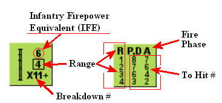
Detalle de una ficha de cañón mostrando sus valores y la matriz Para Impactar. - Infantry Firepower Equivalent (IFE) = Equivalente de Potencia de Fuego de Infantería (valor «6») - Range = Alcance (valor «4») - Breakdown # = Número de avería (valor «X11+») - R P,D A = encabezados de la tabla Para Impactar de la ficha (R = Alcance; P = ?; D = ?; A = ?) - Fire Phase = Fase de Fuego - To Hit # = Número Para Impactar Valores de la matriz por filas (1/2/3/4): | R | P | D | A | |---|---|---|---| | 1 | 8 | 7 | 6 | | 2 | 7 | 6 | 4 | | 3 | 6 | 3 | 2 | | 4 | — | — | — | Verifica los valores con tus cartas/tablas originales.
37.41 Tabla para impactar de la Bazooka¶
Verifica los valores con tus cartas/tablas originales.
| Alcance | Fuego preparado o defensivo | Fuego de avance tras movimiento |
|---|---|---|
| 1 hex | 8 | 7 |
| 2 hexes | 7 | 6 |
| 3 hexes | 6 | 4 |
| 4 hexes | 3 | 2 |
38. FORTUNA CONTRA BLINDADOS¶
38.1 Siempre que un VBC, sea cual sea su nacionalidad, dispara su armamento principal, existe la posibilidad de que sufra una avería o se quede sin munición. Cada vez que se saque un "12" (antes de los ajustes por modificadores) en una tirada para impactar, ese cañón ha sufrido una avería y se marca colocando una ficha de AVERÍA (MALFUNCTION) sobre el VBC. La tirada para impactar en la que se sacó el "12" se resuelve, pero no puede intentarse ningún disparo posterior con el armamento principal hasta que se "repare". Para "reparar" el cañón, tiras un dado al comienzo de cada Fase de Reorganización hasta que se repare o quede eliminado. Una tirada de "1" devuelve el cañón al estado operativo. Una tirada de 6 indica que la avería no puede corregirse durante el resto de la partida. Tras sacar un "6" en un intento de reparación, dale la vuelta a la ficha de avería para mostrar su estado de INUTILIZADO (DISABLED). El VBC puede seguir moviéndose y disparando su MG con normalidad.
38.2 Las MG de los VBC pueden sufrir averías de la misma manera que lo anterior, con una tirada de "12" en la Tabla de Fuego de Infantería. El estado de avería/inutilizado se aplica a todo el armamento de MG del VBC, tanto el de Arco Cubierto (Covered Arc) como el de 360˚.
38.3 Si, mientras ejecuta un ataque de Arrollamiento, un VBC saca un "12" (antes de los ajustes por modificadores), se asume que la infantería ha colocado con suerte un haz de granadas y le ha roto las cadenas al vehículo. El VBC queda entonces inmovilizado durante el resto del escenario. (Véase 39 para más efectos de la inmovilización.)
39. INMOVILIZACIÓN¶
39.1 Los VBC están sujetos a averías tras entrar en un hex de bosque o de edificio de madera. Cada VBC que entre en tal hex debe tirar un dado para una posible avería. Una tirada de "6" avería a un VBC americano o ruso, mientras que un "5" o un "6" avería a un VBC alemán. Un carro "averiado" (Broken) se considera inmovilizado y se le coloca una ficha de inmovilizado.
►39.2 Siempre que un VBC quede inmovilizado, su dotación debe someterse a un Chequeo de Moral. Si lo supera, puede permanecer en el VBC y servir sus armas. Si lo falla, la dotación no se desmoraliza, pero abandona el vehículo. El VBC se convierte entonces en una carcasa y se coloca inmediatamente una ficha de dotación sobre la carcasa. Se trata como "infantería en movimiento al descubierto" y queda sujeta al modificador a la tirada de -2 durante el resto de la fase de fuego. Si sobrevive al resto de la fase de fuego, se mueve inmediatamente bajo la carcasa o a cualquier hex adyacente no ocupado por unidades enemigas.
39.3 Siempre que un VBC ya inmovilizado sea impactado pero no destruido por un arma antitanque, su dotación también debe realizar el Chequeo de Moral descrito anteriormente.
39.4 Los VBC inmovilizados no pueden pivotar dentro de un hex, pero los VBC con torreta pueden disparar su armamento principal y su MG coaxial fuera de su Arco Cubierto (caso A). Incluso tras disparar en tal caso, el vehículo inmovilizado no cambia su "Arco Cubierto".
40. CARCASAS¶
40.1 Siempre que cualquier vehículo haya sido destruido, dale la vuelta para sustituirlo por una ficha de carcasa.
40.2 Las carcasas no impiden el movimiento de las fichas no vehiculares y no cuentan para los límites de apilamiento de vehículos.
40.3 Los vehículos operativos pueden terminar su Fase de Movimiento en el mismo hex que una carcasa, pero no reciben ninguna obstrucción de LDV ni protección de la carcasa. Los vehículos pueden moverse a hexes con carcasa con un coste de movimiento adicional de 2 PM por carcasa. Además, una carcasa o vehículo en un hex de carretera anula esa carretera para otros vehículos, obligándolos a pagar el coste en PM del otro terreno de ese hex (normalmente terreno abierto).
40.4 Una carcasa puede retirarse durante la siguiente Fase de Reorganización por un carro o CAP operativo que comience su turno en un hex adyacente y que ni se mueva ni dispare durante ese turno de jugador. El VBC que empuja debe entonces terminar su turno siguiente en el hex previamente ocupado por la(s) carcasa(s).
40.5 Una carcasa ofrece "cobertura" a la infantería de la misma manera que un VBC operativo (32). Cualquier contorno de "humo" en la ficha de carcasa tendría el mismo efecto que el propio contorno del vehículo.
40.6 Otros VBC también pueden cubrirse tras una carcasa. Siempre que un arma antitanque dispare a través de una carcasa contra un vehículo en un hex adyacente, el objetivo se considera "Hull Down" (41.1).
Ejemplo 1: El Fuego A, que cruza la carcasa, se modifica sumando +2 a la tirada. Los Fuegos B y C no cruzan la carcasa y, por tanto, no se modifican.
Ejemplo 2: El STGIII está Hull Down frente al Fuego A, que cruza la ficha de carcasa. El Fuego B no cruza la ficha de carcasa y, por tanto, el objetivo no se considera "Hull Down" frente a su ataque.
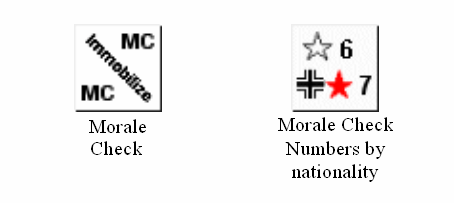
Fichas de Chequeo de Moral. - Morale Check = Chequeo de Moral (ficha con «MC» y la palabra «Immobilize» / Inmovilizar) - Morale Check Numbers by nationality = Números de Chequeo de Moral por nacionalidad (ejemplo: símbolo con «6» y emblema soviético con estrella roja con «7»)
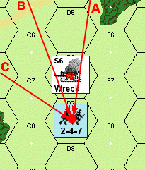
Diagrama de ejemplo de líneas de visión (LDV) marcadas A, B y C trazadas desde una unidad (2-4-7) en el hex D8 hacia los restos de un vehículo («Wreck») en el hex próximo, con una unidad «S6» adyacente. Etiquetas de hex de referencia: D5, C6, E6, C7, E7, C8, E8, D8.
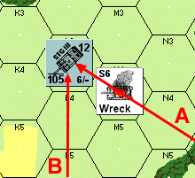
Diagrama de ejemplo con líneas de visión (LDV) marcadas A y B. Muestra un carro con marcador «STUN» (aturdido) y valores 12 / 105 / 6/– en el hex L4, y los restos de un vehículo («Wreck» con ficha «S6») en el hex M4/N4. Etiquetas de hex de referencia: K3, M3, N3, K4, N4, K5, M5, N5.
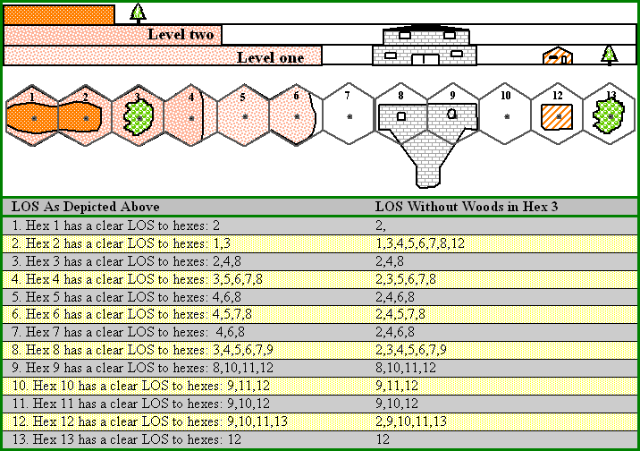
Ejemplo de LDV con elevaciones. En el dibujo, los hexes están a distintos niveles (colina de nivel 1 y 2) y el hex 3 contiene bosque. La tabla indica a qué hexes tiene LDV despejada cada hex, tal como se muestra y también si se quitara el bosque del hex 3.
| Hex | LDV despejada a los hexes (según el dibujo) | LDV despejada (sin bosque en el hex 3) |
|---|---|---|
| 1 | 2 | 2 |
| 2 | 1, 3 | 1, 3, 4, 5, 6, 7, 8, 12 |
| 3 | 2, 4, 8 | 2, 4, 8 |
| 4 | 3, 5, 6, 7, 8 | 2, 3, 5, 6, 7, 8 |
| 5 | 4, 6, 8 | 2, 4, 6, 8 |
| 6 | 4, 5, 7, 8 | 2, 4, 5, 7, 8 |
| 7 | 4, 6, 8 | 2, 4, 6, 8 |
| 8 | 3, 4, 5, 6, 7, 9 | 2, 3, 4, 5, 6, 7, 9 |
| 9 | 8, 10, 11, 12 | 8, 10, 11, 12 |
| 10 | 9, 11, 12 | 9, 11, 12 |
| 11 | 9, 10, 12 | 9, 10, 12 |
| 12 | 9, 10, 11, 13 | 2, 9, 10, 11, 13 |
| 13 | 12 | 12 |
Verifica los valores con tus cartas/tablas originales.
41. INFORMACIÓN DIVERSA SOBRE BLINDADOS¶
41.1 "Hull Down" se utiliza en el cálculo del número "para impactar" y se refiere a una situación en la que la mitad inferior de un VBC está bloqueada por el terreno o una obstrucción. Un VBC se considera "hull down" si está directamente tras un muro (no un seto) o una carcasa, incluso si se le dispara desde arriba.
41.2 Las dotaciones de VBC pueden combatir y operar como una escuadra de infantería normal (factor de potencia de fuego de 2). Tales dotaciones pueden servir cualquier cañón antitanque (incluso si está capturado) o una MG a plena eficacia. A diferencia de otras escuadras, las escuadras de dotación no pueden usar su propia valoración de potencia de fuego mientras sirven un arma de apoyo.
►41.3 Un carro o CAP puede disparar humo en lugar de su armamento principal solo al comienzo de la Fase de Fuego Preparado. El VBC cruza el alcance al hex objetivo con el Tipo de Objetivo "Infantería en Otros" (Infantry in Other's) en la Tabla "para impactar" para determinar la tirada necesaria para colocar eficazmente el humo en el hex objetivo. El hex objetivo no puede ser el suyo propio ni un hex adyacente. Los VBC que disparan humo no pueden disparar sus MG primero. Una vez colocado, el humo tiene los mismos efectos descritos anteriormente (véase 24) para los ingenieros.
►41.4 Todos los carros y CAP alemanes están equipados con lanzadores de humo que colocan humo en el mismo hex que el carro disparador durante cualquier Fase de Fuego amiga. Los lanzadores de humo de cada vehículo solo pueden utilizarse una vez por partida y cuentan como si el vehículo disparara su armamento principal, pero no impiden que el VBC dispare humo normalmente más adelante, ni que se mueva durante la siguiente Fase de Movimiento.
42. EMPLAZAMIENTO INICIAL OCULTO¶
Incluso el uso de fichas de ocultación da información parcial sobre dónde no está una unidad enemiga. Por tanto, en escenarios en los que los problemas de contabilidad no sean grandes, se permite el Emplazamiento Inicial Oculto como complemento de la regla de Ocultación (25). Salvo que el escenario en juego lo indique específicamente, el Emplazamiento Inicial Oculto solo se permite con el consentimiento de ambos jugadores.
►42.1 En algunos escenarios, un bando puede tener permitido el "Emplazamiento Inicial Oculto". Ese jugador no coloca sus unidades ocultas en el tablero a la vista de su oponente, sino que registra en secreto sus ubicaciones en un papel aparte. Tales unidades solo pueden registrarse como ocultas si están en hexes de bosque o de edificio. Las unidades que no comiencen el escenario ocultas se colocan en el tablero a plena vista.
42.2 Las unidades ocultas permanecen fuera del tablero hasta que se muevan, disparen, generen humo, intenten atrincherarse o sean adyacentes a una unidad enemiga al concluir cualquier Fase de Fuego Defensivo o de Avance.
42.3 Una vez que una unidad oculta es revelada por cualquiera de los métodos de 42.2, no puede recuperar el estado oculto. Puede adquirir una ficha de ocultación como en 25.3.
►42.4 Las unidades oponentes pueden disparar a ciegas contra una posición enemiga sospechada, pero tal fuego se reduce a la mitad como Fuego de Área. Cualquier unidad oculta en un hex objetivo es revelada si un ataque sobre ese hex resulta en algo distinto de "Sin Efecto", independientemente del éxito o fracaso de cualquier Chequeo de Moral resultante.
42.5 Si cualquier unidad no VBC se mueve al hex de una unidad enemiga oculta durante la Fase de Movimiento, esa unidad debe detener su movimiento inmediatamente y terminar su Fase de Movimiento en el último hex ocupado antes de entrar en el hex de la unidad oculta. Una unidad no VBC nunca puede moverse a un hex ocupado por el enemigo durante la Fase de Movimiento.
42.6 Si un VBC se mueve al hex de una unidad oculta enemiga durante la Fase de Movimiento, debe informarse de ello al jugador en movimiento, que ejecutará un Ataque de Arrollamiento contra la unidad oculta si es la primera unidad enemiga sobre la que ese VBC se mueve ese turno. Salvo inmovilización, el VBC puede continuar su movimiento. Independientemente del efecto del ataque, la unidad oculta pierde su estado de "oculta" inmediatamente después de que el VBC se mueva sobre ella.
►42.7 Los VBC pueden comenzar una partida ocultos en un hex de bosque o de edificio de madera solo si se usa el Emplazamiento Inicial Oculto. Los VBC solo pueden estar ocultos al comienzo de un escenario. Las unidades así colocadas al inicio de un escenario no tienen que tirar por inmovilización debido a esa colocación. El fuego contra VBC ocultos no se reduce a la mitad como FUEGO DE ÁREA. El Emplazamiento Inicial Oculto simplemente les permite desplegarse sin ser avistados.
43. LÍNEA DE VISIÓN (LDV) AVANZADA¶
Las reglas de LDV Avanzada tienen en cuenta en mayor medida la elevación para permitir que las unidades disparen por encima de obstáculos intermedios, de manera muy similar a como se permitía a las unidades en edificios de varias plantas disparar por encima de edificios de una planta y bosques (7.4).
43.1 El Game Set II introduce tres niveles de colinas que, sumados a los edificios de dos plantas ya descritos, comprenden todas las categorías de elevación de SQUAD LEADER.
43.11 Un hex de colina de Nivel Uno es marrón claro y equivale a la altura de un edificio pequeño o de un bosque a nivel del suelo. Un ejemplo de hex de colina de Nivel Uno es 2G3.
43.12 Un hex de colina de Nivel Dos es marrón medio y equivale a la altura de un edificio grande o un bosque, o de un edificio pequeño sobre un hex de colina de Nivel Uno. Un ejemplo de hex de colina de Nivel Dos es 2I4.
43.13 Un hex de colina de Nivel Tres es marrón oscuro y equivale a la altura de un bosque sobre un hex de colina de Nivel Dos. Un ejemplo de hex de colina de Nivel Tres es 2J4.
43.14 Cuando un hex contiene más de un nivel de elevación, las unidades situadas en él se consideran en el nivel de elevación que contiene el punto central del hex.
43.15 Salvo que contenga otros elementos de terreno, un hex de colina se considera terreno abierto en cuanto a sus efectos sobre el movimiento y el combate.
43.2 Se forma una línea de cresta (crest line) en cada hex donde se encuentran dos niveles de elevación distintos. La línea de cresta cumple dos funciones:
43.21 Las unidades que crucen una línea de cresta hacia un terreno más alto del previamente ocupado deben pagar un coste de movimiento incrementado por entrar en ese hex.
43.22 Una línea de cresta señala con precisión la pendiente de una colina para aclarar cuándo una unidad es elegible para una ventaja de LDV por elevación (43.5).
43.3 Las colinas bloquean la LDV de la misma manera que los edificios o bosques. Una unidad a "nivel del suelo" solo podría disparar al lado de hex de la línea de cresta inicial de una colina de Nivel Uno en su LDV. Su fuego no podría penetrar más allá en el terreno de Nivel Uno, igual que no podría penetrar a través de dos lados de hex de bosque.
43.4 Una unidad no puede ver por encima de obstáculos intermedios salvo que tenga una ventaja de altura sobre la altura equivalente del obstáculo. Por tanto, una unidad en un hex de colina de Nivel Uno no es lo bastante alta para ver por encima de ningún símbolo de bosque o edificio a nivel del suelo. Sin embargo, sí es lo bastante alta para ver por encima de muros, setos y vehículos a nivel del suelo.
43.5 Una unidad observadora en una colina puede ver unidades a una elevación inferior solo si traza su LDV a través de una línea de cresta antes de cruzar un lado de hex.
43.6 Suponiendo que una unidad tenga suficiente ventaja de altura para disparar por encima de un obstáculo, el hex inmediatamente detrás del obstáculo se considera un hex "ciego" y no puede verse, salvo que el hex ciego esté a una elevación equivalente o superior a la altura del obstáculo. Hay dos excepciones:
43.61 Las líneas de cresta no crean un hex ciego si el hex disparador es parte de la misma colina que la línea de cresta en cuestión. EXCEPCIÓN: un lado de hex de acantilado que resulte en una caída de 2 o más niveles al hex adyacente crearía un hex ciego.
43.62 Los edificios grandes (3 hexes o más) tienen una "zona ciega" de dos hexes directamente detrás de ellos, en lugar de la zona ciega de un hex de los edificios pequeños y bosques (7.4).
43.7 Una unidad en cualquier nivel de elevación puede ver cualquier cosa en el mismo nivel (salvo obstáculos intermedios, incluidas líneas de cresta más altas), independientemente de la posición de las líneas de cresta iguales o inferiores respecto a su posición. Ejemplo: una unidad en 2Y4 podría ver una unidad en 2Z6.
43.8 Como los procedimientos de LDV de alto a bajo son la inversa de los de bajo a alto, sería inútil enumerar la otra mitad de los principios de elevación. Basta con señalar que siempre que la unidad "A" tiene una LDV clara hacia la unidad "B", la unidad "B" también tiene una LDV clara hacia la unidad "A".
43.9 La relación de "perfil" entre los distintos tipos de terreno y la elevación se representa gráficamente en el diagrama de la Página 15. Si te confundes, el estudio del perfil y los ejemplos que lo acompañan resolverá rápidamente cualquier duda que puedas tener.
44. TIPOS DE TERRENO RURAL¶
►44.1 [véase 142.211] ACANTILADOS: Los lados de hex de colina teñidos de negro son acantilados infranqueables. Ninguna unidad puede moverse a través de tal lado de hex. El procedimiento de fuego a través de un lado de hex de acantilado es idéntico al de cualquier línea de cresta, salvo que las unidades disparadora y objetivo sean hexes adyacentes, en cuyo caso el Fuego a Quemarropa (Point Blank) de la(s) unidad(es) superior(es) se triplica. El fuego de la(s) unidad(es) inferior(es) seguiría duplicado como Fuego a Quemarropa normal. Un ejemplo de lado de hex de acantilado es 3D3–3C4.
►44.2 TRIGALES (WHEATFIELDS): Los hexes de color amarillento o beige son trigales. El movimiento a través de un trigal es idéntico al movimiento en terreno abierto. Un ejemplo de trigal es el hex 3AA10.
►44.21 Los trigales son un obstáculo a la vista pero no al fuego. Las unidades pueden ver hacia un hex de trigal pero no a través de él, salvo que tengan una ventaja de altura, en cuyo caso los trigales no obstruyen la LDV de ningún modo. Por tanto, las unidades en el mismo nivel que el trigal podrían disparar normalmente a un hex de trigal, pero el fuego penetrante a través de más de un lado de hex de trigal se calcula a mitad de potencia como Fuego de Área.
44.22 Salvo otros obstáculos de LDV, los vehículos en un trigal o detrás de él son siempre visibles, independientemente de la elevación del observador.
►44.23 Las unidades que se mueven a través de un trigal no están sujetas al modificador a la tirada de -2 al fuego defensivo, independientemente de la elevación del disparador.
44.24 Los trigales están sujetos a variación estacional y existen solo en aquellos escenarios que transcurren durante el periodo de junio a octubre. Los hexes de trigal "fuera de temporada" se tratan como terreno abierto.
44.3 CRÁTERES (SHELLHOLES): Las manchas marrones con un núcleo marrón oscuro son fácilmente identificables como cráteres. Los cráteres no tienen efecto especial sobre el movimiento de infantería ni la LDV, pero sí afectan al combate y al movimiento de vehículos. Un ejemplo de cráter es 3Y3. No pueden crearse cráteres adicionales durante el transcurso de una partida. Los representados en el mapa son resultado de un bombardeo prolongado.
44.31 Si la unidad objetivo de infantería está en un cráter, suma 1 a la tirada del atacante.
44.32 Si se dispara contra el objetivo de infantería mientras se mueve (Fase de Fuego Defensivo) a través de un hex de cráter, se aplicaría el modificador a la tirada normal de -2, pero se ajusta a una modificación total de -1 debido a la cobertura que ofrece el cráter.
45. ARTILLERÍA FUERA DEL MAPA¶
La presencia o ausencia de artillería fuera del mapa pretende ser el «gran igualador» en SQUAD LEADER, igual que a menudo lo fue en el campo de batalla. Todos los escenarios incluyen la variante «Opcional, previo acuerdo de ambos jugadores». Si alguno de los jugadores considera que los escenarios provistos están desequilibrados, es libre de elegir el tipo y el número de Fuegos de Eficacia (Fire Missions) de artillería que añadir al bando más débil. Resuelta así la cuestión del equilibrio de la partida, su oponente puede entonces elegir bando. Otras compensaciones, como el Movimiento por Alcantarillas (27) o el Fanatismo (26), pueden negociarse entre los jugadores, pero los distintos grados de apoyo de artillería serán con toda probabilidad la moneda de cambio habitual.
45.1 La artillería fuera del mapa suele introducirse aleatoriamente en un escenario para reflejar mejor la incertidumbre del jefe de pelotón, que rara vez estaba «al tanto» de cuánta artillería —o de qué tipo— podía destinarse a su sector del frente. El proceso de selección aleatoria de artillería se denomina módulo de artillería. Se concede un módulo de artillería a cada bando por cada ficha de radio que figure en su orden de batalla, salvo que se especifique otra cosa.
45.2 El jugador (o jugadores) que recibe el módulo de artillería tira un dado por cada ficha de radio en la siguiente tabla para determinar el tipo de artillería disponible.
45.21 [RE: COD 107.42 ACCESO A LA BATERÍA:] Una vez seleccionado el calibre de su apoyo de artillería, complete el módulo determinando el número de Fuegos de Eficacia (Fire Missions) que puede recibir de ese apoyo. Invierta y mezcle las fichas de "chit" numeradas del 1 al 4 y robe en secreto una ficha. El número obtenido es el número máximo de fichas FFE (46.4) que puede colocar. Aparte esa ficha por separado para poder verificar el uso de sus Fuegos de Eficacia cuando termine el escenario. Cada vez que se resuelve un ataque FFE se considera un Fuego de Eficacia (Fire Mission).
45.3 Siempre que se añadan capacidades de artillería a un escenario por acuerdo de ambos jugadores, debe añadirse una ficha de radio al orden de batalla de ese bando por cada módulo puesto a disposición.
45.4 Si ambos bandos disponen de capacidad de artillería fuera del mapa, uno o ambos pueden querer entablar "Fuego de Contrabatería" para silenciar la artillería fuera del mapa contraria. Para entablar Fuego de Contrabatería, su artillería debe ser de calibre igual o superior al de la artillería fuera del mapa contraria (todos los calibres de artillería se redondean a la baja al múltiplo de 10 más próximo: Ejemplo: los obuses estadounidenses de 105 mm se redondearían a 100). El Fuego de Contrabatería cuenta como un Fuego de Eficacia (Fire Mission) y puede ejecutarse en cualquier Fase de Fuego Preparado, siempre que se haya mantenido el contacto por radio (46.1) en la Fase de Reorganización precedente y que la artillería contraria ya haya disparado al menos una vez durante el escenario.
45.41 El propietario de la artillería desorganizada (disrupted) debe tirar inmediatamente un dado. El resultado de esa tirada es el número de turnos de juego que deben transcurrir antes de que la artillería pueda intentar disparar de nuevo. La artillería desorganizada pierde el contacto por radio y no puede intentar restablecerlo hasta el turno en que vuelva a quedar libre para disparar.
45.42 Un jugador que entable Fuego de Contrabatería puede restar 1 a la tirada de dados por cada turno consecutivo de Fuego de Contrabatería solicitado por el mismo líder. Por tanto, si el mismo líder solicitara su tercer Fuego de Contrabatería consecutivo, podría restar 2 a la tirada. Cada turno de Fuego de Contrabatería constituye un Fuego de Eficacia (Fire Mission).
46. MECÁNICA DEL FUEGO DE ARTILLERÍA¶
►46.1 La artillería no puede usarse a menos que el jugador propietario haya establecido y mantenido comunicación por radio con las baterías de apoyo. Solo los líderes no desmoralizados que estén en el mismo hex con una ficha de radio operativa pueden intentar establecer o mantener el contacto por radio. Cada líder con uso exclusivo de una radio puede solicitar solo un Fuego de Eficacia (Fire Mission) por turno de jugador, independientemente del número de Fuegos de Eficacia o de Módulos de Artillería que posea su bando. El manejo de una radio y el consiguiente reglaje de artillería no alteran la capacidad de dirección de fuego ni de movimiento del líder.
46.11 Cualquiera de los jugadores solo puede intentar el Contacto por Radio durante la Fase de Reorganización. Para establecer contacto por radio, los líderes deben sacar un valor igual o inferior al valor de contacto por radio correspondiente a su nacionalidad y época.
46.12 Una vez establecido, el contacto por radio debe mantenerse en las sucesivas Fases de Reorganización. Para mantener el contacto por radio, vuelva a tirar en la Tabla de Valores de Contacto por Radio, pero reste 2 a la tirada de dados. Si no logra mantener el contacto, el siguiente intento de radio será para establecer contacto y, como tal, no estará sujeto a la modificación favorable de la tirada.
46.13 Una vez establecido con éxito el contacto por radio, finalice la Fase de Reorganización colocando una ficha de "Solicitud de Artillería" (Artillery Request) en un hex situado en la LDV de su líder que desee que sea el centro de la descarga. Esto pone fin a la preparación de artillería hasta la siguiente Fase de Combate Cuerpo a Cuerpo.
46.2 Durante la Fase de Combate Cuerpo a Cuerpo inicial posterior al contacto por radio, cualquiera de los jugadores puede sustituir su ficha de Solicitud de Artillería (dándole la vuelta) por una ficha azul de "Disparo de Reglaje" (Spotting Round, SR) y tirar los dados para determinar la ubicación del disparo de reglaje inicial de la siguiente manera:
46.21 Tire un dado para determinar la precisión del disparo inicial. Si la tirada es un "1" o un "2" para artillería alemana o estadounidense, el SR cae sobre el objetivo. La artillería rusa debe sacar un "1" para caer sobre el objetivo. Si el Disparo de Reglaje no cae sobre el objetivo, proceda a 46.22 para determinar el hex en el que cae el SR.
46.22 Tire un dado y consulte el diagrama "Dirección del Error" (Direction of Error). La tirada de dados equivale a la dirección, respecto al hex previsto, en la que caerá el disparo de reglaje.
46.23 Hallada así la dirección del error, vuelva a tirar un dado para determinar la magnitud del error. El resultado es el número de hexes de distancia respecto al hex previsto, en la dirección errónea, en el que cae el Disparo de Reglaje inicial. Si cae dentro de la LDV del líder solicitante, recoja la ficha azul de Disparo de Reglaje y sustitúyala por un Disparo de Reglaje rojo en el hex correspondiente. Esto pone fin a la preparación de artillería hasta la siguiente Fase de Reorganización.
Ejemplo: Una batería de morteros alemana acaba de hacer caer un disparo de reglaje inicial tras sacar un "4" de precisión, un "2" de dirección y un "3" de distancia.
46.24 Si un error de reglaje hace que el disparo de reglaje inicial salga del tablero de juego, o el disparo cae en un hex fuera de la LDV del líder solicitante, el disparo se pierde y el jugador propietario debe esperar hasta la siguiente Fase de Combate Cuerpo a Cuerpo para situar un Disparo de Reglaje inicial. Dé la vuelta a la ficha azul de Disparo de Reglaje, dejándola en su cara de Solicitud de Artillería.
46.25 Un disparo de reglaje no tiene absolutamente ningún efecto dañino sobre ninguna unidad del hex en el que cae.
46.3 En la primera Fase de Reorganización y en todas las sucesivas tras la colocación del disparo de reglaje inicial, cualquiera de los jugadores (siempre que mantenga su contacto por radio) puede realizar 1 de 4 operaciones:
46.31 Puede corregir abiertamente su artillería hasta 3 hexes en la dirección o direcciones que elija, moviendo su disparo de reglaje rojo 3 hexes de cualquier forma; O
46.32 Puede dejar su disparo de reglaje rojo donde está o moverlo hasta 3 hexes; y sustituirlo (dándole la vuelta) por una ficha de "Fuego de Eficacia" (FFE); O
46.33 Puede mover una ficha FFE ya colocada hasta 3 hexes en la dirección o direcciones que elija, o sustituirla por un disparo de reglaje rojo y moverlo hasta 3 hexes; O
46.34 Puede retirar su disparo de reglaje o FFE y colocar otra ficha de Solicitud de Artillería en cualquier hex de su LDV.
46.4 Una ficha FFE, una vez colocada, debe dar como resultado que la artillería representada caiga con pleno efecto en:
- La Fase de Fuego Preparado (si es su turno de jugador), O
- La Fase de Fuego Defensivo (si es el turno de jugador de su oponente).
►46.5 En la fase correspondiente designada en 46.4, la artillería cae con igual efecto en el hex de FFE y en sus seis hexes adyacentes. Esta "Zona de Estallido" (Blast Area) de 7 hexes es golpeada con el equivalente HE en la Tabla de Fuego de Infantería. Así pues, si se tratara de una descarga de un obús de 105 mm, se consultaría la columna 16/100 de la Tabla de Fuego de Infantería y se tiraría individualmente por cada hex de la zona de estallido como si estuvieran siendo sometidos a fuego de infantería. Se aplican todas las modificaciones a la tirada de dados por Efectos del Terreno, incluidas las de muros y setos si el lado de hex de muro o seto se encuentra entre la unidad y cualquier hex de la zona de estallido.
46.51 El fuego de artillería durante la Fase de Fuego Defensivo afecta no solo a las unidades que se encuentran en la Zona de Estallido en el momento del fuego, sino también a todas las unidades que se movieron a través de la Zona de Estallido durante la Fase de Movimiento inmediatamente anterior. Tales unidades se "retrotraen" al primer hex de la Zona de Estallido en el que entraron en la Fase de Movimiento precedente (véase 16; Fuego Defensivo). Si la unidad en movimiento sobrevive, puede volver a recorrer su movimiento anterior hasta el hex que ocupaba antes del Fuego Defensivo. No obstante, si ese movimiento la lleva a través de otro hex de la Zona de Estallido, sufriría fuego de artillería de nuevo en ese hex.
46.52 El fuego de artillería sobre unidades que se mueven a través de un hex de terreno abierto dentro de la Zona de Estallido estaría sujeto al habitual modificador de -2 a la tirada de dados por moverse al descubierto.
46.53 Cualquier arma de apoyo en el hex objetivo también queda eliminada por un resultado "KIA" de cualquier fuego de artillería sobre el hex de esa unidad. Las armas de apoyo solas en un hex de la Zona de Estallido también deben tirarse en la Tabla de Fuego de Infantería.
►46.54 Los vehículos en la Zona de Estallido solo se ven afectados por resultados "KIA" en la Tabla de Fuego de Infantería. Utilice los modificadores a la tirada de dados de Descarga de Artillería contra Vehículos (Artillery Barrage vs. Vehicles) al calcular los ataques de artillería contra un vehículo. Los vehículos no están sujetos al modificador de -2 a la tirada de dados por moverse al descubierto frente a una descarga de artillería, pero los pasajeros sí reciben el perjuicio de -2, salvo que vayan en un semioruga. Aunque los resultados de Chequeo de Moral en la Tabla de Fuego de Infantería no afectan a los vehículos, sí afectan a todos los pasajeros excepto a los que van en semiorugas. Los pasajeros de semiorugas solo se ven afectados por la destrucción del vehículo. Los ataques contra pasajeros que no van en semiorugas utilizan la misma tirada de dados aplicada contra su vehículo, pero modificada únicamente por el modificador de -2 de "moverse al descubierto" mencionado anteriormente.
46.6 No tienen lugar acciones de artillería distintas de las citadas en 46.2 durante las demás fases de Combate Cuerpo a Cuerpo. Tirar para determinar la ubicación del disparo de reglaje inicial es la única operación de artillería en la Fase de Combate Cuerpo a Cuerpo.
►46.7 Los disparos de reglaje (o fichas FFE) solo pueden solicitarse y corregirse si la unidad de líder con contacto por radio tiene una LDV despejada tanto al hex en el que se pretende que caiga el disparo de reglaje como al hex que ocupa actualmente (si ya está en el tablero). Los muros, setos, trigales o vehículos nunca bloquean la observación (LDV) de un disparo de reglaje o FFE por parte de un líder. El humo sí bloquea los intentos de observación dentro del hex de humo y a través de él.
46.71 Si se pierde el contacto por radio mientras hay una ficha FFE o un disparo de reglaje sobre el tablero, dichas fichas se retiran y todo el proceso se repite una vez restablecido el contacto por radio.
46.72 Si se han usado todos los Fuegos de Eficacia (fire missions) asignados, no pueden solicitarse más disparos de reglaje.
►46.8 Las radios se consideran un arma de apoyo a todos los efectos y pueden ser transportadas por cualquier escuadra con un coste de 1 punto de porte, o por un líder con un coste de 2 puntos de porte.
46.81 Las radios están sujetas a avería y reparación de la misma manera que las demás Armas de Apoyo. Una tirada de dados sin ajustar de "12" avería cualquier ficha de radio.
►46.82 Si se eliminan una o más radios, cualquier otra radio amiga del escenario puede usar el resto del módulo de artillería de la radio eliminada. No obstante, solo puede ejecutarse un Fuego de Eficacia (Fire Mission) por módulo de artillería y por radio en el mismo turno de jugador.
►46.9 La artillería puede usarse para colocar humo en lugar del fuego estándar de Alto Explosivo (HE) de un FFE. Basta con colocar una ficha de humo en cada hex de la Zona de Estallido. Como ocurre con toda colocación de humo, debe hacerse al comienzo mismo de la fase de fuego, antes de que disparen otras unidades. El humo tiene el mismo efecto que el descrito anteriormente en la sección 24, y se retira al comienzo de la siguiente Fase de Fuego Preparado de su propietario. Colocar humo cuenta como un Fuego de Eficacia (fire mission).
45.2 Tabla de selección de artillería del módulo¶
Verifica los valores con tus cartas/tablas originales.
| Tirada de dados | Alemán | Ruso | Estadounidense |
|---|---|---|---|
| 1 | 80+mm | 70+mm | 80+mm |
| 2 | 80+mm | 80+mm | 80+mm |
| 3 | 80+mm | 80+mm | 100+mm |
| 4 | 100+mm | 120+mm | 100+mm |
| 5 | 120+mm | 120+mm | 150+mm |
| 6 | 150+mm | 150+mm | 150+mm |
Nota (texto original): para facilitar la consulta hemos listado los «tamaños» tal como se refieren en la Tabla de Fuego de Infantería. Para ser más precisos, las cifras «redondeadas» se refieren al mortero alemán de 81 mm, el obús ruso de 152 mm, los 105 estadounidenses, etc.
45.4 Tabla de fuego de contrabatería¶
Verifica los valores con tus cartas/tablas originales.
| Tirada de dados | Resultado |
|---|---|
| 2 | Artillería enemiga destruida |
| 3-5 | Artillería enemiga interrumpida |
| 6-12 | Sin efecto |

Detalle de una ficha de radio indicando dónde se leen sus valores. - Radio contact value = Valor de contacto por radio (valor «7») - No leadership modifier = Sin modificador de liderazgo (símbolo △) - Breakdown = Avería (valor «B12») - Radio contact values by year (Russian only) = Valores de contacto por radio por año (solo soviéticos): ficha «R1 X6» con valores 41:7 / 42:6 / 43+:5 (?)
46.11 Tabla de valores de contacto por radio¶
Verifica los valores con tus cartas/tablas originales.
| Nacionalidad | Periodo | Número requerido |
|---|---|---|
| Alemán | Todos los escenarios | 7 |
| Estadounidense | Todos los escenarios | 9 |
| Ruso | Escenarios de 1941 | 5 |
| Ruso | Escenarios de 1942 | 6 |
| Ruso | Escenarios de 1943-45 | 7 |
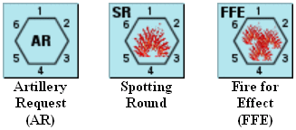
Fichas de artillería (secuencia de fuego de artillería sobre el mapa): - Artillery Request (AR) = Solicitud de Artillería (ficha «AR») - Spotting Round = Disparo de reglaje (SR) - Fire for Effect (FFE) = Fuego de Eficacia (FFE) Cada hexágono muestra los números de orientación 1–6 en sus lados.
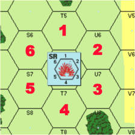
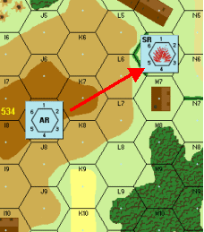
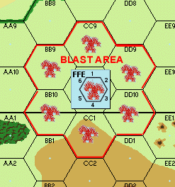
ZONA DE EXPLOSIÓN

46.54 Modificadores de VBC frente a ataques de Fuego de Eficacia (FFE)¶
Verifica los valores con tus cartas/tablas originales.
| Vehículo | Modificador |
|---|---|
| Vehículos no blindados | −3 |
| VBC de techo abierto | −1 |
| Carro/tanque | +1 |
| Cañón autopropulsado (CAP) | +2 |
47. SEMIORUGAS¶
47.1 Las disposiciones de 31.1-31.4 relativas al transporte de infantería con carros y cañones autopropulsados (CAP) también se aplican a los semiorugas, al igual que las disposiciones de 32.3-32.7 relativas al uso de vehículos blindados de combate (VBC) como cobertura.
47.2 En el juego se incluyen fichas de semioruga tanto con armamento de ametralladora (MG) como sin él. Los jugadores deben prestar especial atención a los escenarios para ver si el escenario especifica armamento de MG para alguno de los semiorugas listados. Siempre que se destruya un semioruga armado, existe la posibilidad de que la dotación escape. Invierte la ficha y tira dos dados. Una tirada igual o inferior al Número de Supervivencia impreso en la carcasa (Wreck) resulta en la supervivencia de la dotación (ver 33.9).
47.3 Los semiorugas desarmados tienen una dotación inseparable e inherente de conductor y conductor auxiliar que comparten el destino del semioruga. Si es eliminado, todos los conductores inherentes, los pasajeros y las armas de apoyo no montadas que se encuentren en el vehículo también son eliminados.
47.4 La infantería transportada también puede disparar su potencia de fuego (PF) inherente y las LMG transportadas desde el semioruga sin penalización, pero no se puede disparar ninguna otra arma de apoyo desde un semioruga. Los líderes transportados pueden dirigir el fuego de la MG del semioruga así como cualquier fuego de la infantería que vaya en el semioruga, pero solo pueden dirigir un ataque de fuego por turno de jugador.
47.5 Si el semioruga se mueve, todo el fuego procedente del semioruga durante el turno de jugador de su propietario se reduce a la mitad según las disposiciones del Fuego en Movimiento. Si el semioruga o cualquiera de sus pasajeros dispara durante la Fase de Fuego Preparado, no podrá moverse durante la Fase de Movimiento siguiente.
47.6 Los pasajeros de un semioruga son inmunes al fuego normal de infantería y de LMG. Las MMG y HMG dentro de su alcance normal impactan automáticamente a los semiorugas, pero no dañan a los pasajeros a menos que se obtenga una destrucción contra el semioruga en la Tabla de Destrucción de VBC (AFV Kill Table).
►47.7 La infantería que dispara sus propias armas desde un semioruga pierde la inmunidad al fuego de infantería descrita en 47.6 durante la fase de fuego enemigo opuesto siguiente, pero aún recibiría un modificador a la tirada (MTD) de +2 a todo el fuego de infantería y de MG dirigido contra ella debido a la naturaleza de muro del blindaje del semioruga. Cualquier MMG o HMG que dispare a un semioruga que transporte infantería expuesta debe declarar primero si está disparando a la infantería con la Tabla de Fuego de Infantería (TFI) o al propio semioruga con la Tabla de Destrucción de VBC.
►47.8 Si el fuego se dirige contra los pasajeros del semioruga desde un hex adyacente de mayor altura, el semioruga no protege a la infantería que viaja en él según lo descrito anteriormente en 47.6 y 47.7.
47.9 La infantería que se desmoraliza mientras es transportada puede optar por permanecer en el semioruga durante la Fase de Huida, ya que estar en un semioruga se considera cobertura. Sin embargo, el semioruga no podría avanzar hacia el enemigo hasta que la infantería desmoralizada se reorganice o abandone el vehículo. La infantería desmoralizada dentro de un semioruga tendría que tirar Moral de Desesperación para reorganizarse si se ha disparado al semioruga de cualquier manera desde la Fase de Reorganización anterior, incluso si dicho fuego es ineficaz contra un semioruga (47.6).
48. CAÑONES ANTITANQUE¶
Los cañones antitanque (en adelante denominados cañones AT) se tratan como cañones autopropulsados (CAP) semiinmóviles.
La Cadencia de Fuego (Rate of Fire) indica el número de veces que el cañón puede disparar (atacar) en una fase de fuego. Independientemente de la cadencia de fuego, solo puede disparar en una fase de fuego por turno de jugador.
El Tipo de Cañón (Gun Type) indica el calibre del cañón para su uso tanto en la Tabla de Destrucción de VBC como en la Tabla de Fuego de Infantería (TFI). El Factor de Protección de la Dotación (Crew Protection Factor) representa la protección de la dotación del cañón ofrecida por el escudo del cañón contra el fuego de alto explosivo y de tipo infantería. El Factor de Protección de la Dotación se añade a la tirada de cualquier ataque contra la dotación del cañón que cruce el Arco Cubierto (Covered Arc) del cañón.
►48.1 Los cañones antitanque se destruyen automáticamente si reciben el impacto de un proyectil de 37 mm o mayor. Un impacto de menos de 37 mm no afectaría al cañón, pero podría afectar a la dotación. Las armas especiales (bazuca, lanzallamas) afectan al cañón AT como si fuera un semioruga en la Tabla de Destrucción de VBC. El fuego normal de infantería no tiene ningún efecto sobre un cañón AT.
48.2 La dotación del cañón solo se ve afectada por el fuego resuelto en la Tabla de Fuego de Infantería (TFI). La misma tirada utilizada para obtener el impacto sobre el cañón en la TABLA DE IMPACTO (TO HIT TABLE) se modifica con +2 (suponiendo que el disparo cruzó el Arco Cubierto) en la Tabla de Fuego de Infantería para determinar el efecto sobre la dotación. Los impactos de munición perforante (AP) sobre el cañón no afectan a la dotación de ninguna manera. Todas las unidades que disparen a cañones AT en la TABLA DE IMPACTO (33.3) deben usar la fila "AT Gun" de dicha tabla.
No hay modificador de terreno a la tirada de IMPACTO ("TO HIT") contra un cañón AT, independientemente del terreno. Se asume que todos los cañones AT/obuses tienen un emplazamiento protector estándar, indicado por la fila "AT Gun" en la tabla de IMPACTO. Si hay otras unidades en el mismo hex que el cañón AT, la misma tirada utilizada para atacar al cañón AT se modifica según cualquier efecto que pudiera tener sobre las otras unidades del hex.
Ejemplo: Supongamos que un cañón AT, su dotación y una escuadra ocupan un edificio de piedra. Un carro MKIVF2 dispara a un alcance de 6 hexes y obtiene un "7". El carro falló contra el cañón AT (necesitaba un 6), pero impactó a la infantería (necesitaba un 8). El carro vuelve a tirar en la columna del 8 (75 mm) de la Tabla de Fuego de Infantería y obtiene un "4". Esta tirada se ajusta a un "7" para la escuadra de infantería (+3 edificio de piedra) y a un "9" para la dotación (+3 edificio, +2 escudo del cañón AT). La escuadra de infantería debe pasar un Chequeo de Moral de "1"; la dotación no se ve afectada.
48.3 Un cañón AT puede encasquillarse y repararse del mismo modo que una MG, salvo que debe estar presente una ficha de dotación no desmoralizada para completar la reparación.
►48.4 Un cañón AT puede ser empujado durante la Fase de Movimiento un hex en cualquier dirección por una ficha de escuadra o de dotación, siempre que no disparen durante ese turno de jugador ni realicen ningún otro movimiento (aparte de desembarcar del vehículo que remolca el cañón AT) durante la Fase de Movimiento. El cañón no puede ser empujado hacia un hex de colina de mayor altura que la que ocupa actualmente, pero puede ser arrastrado manualmente sobre muros, setos y hacia el interior de edificios y bosques. Un cañón AT puede colocarse en cualquier hex excepto en la planta superior (57.6) de un edificio de varias plantas.
48.5 Una ficha de dotación puede "girar" (pivotar) un cañón AT hasta 3 lados de hex dentro del mismo hex durante la Fase de Movimiento, pero si disparó durante ese turno de jugador (Fase de Fuego de Avance) se trataría como un CAP que pivota y sufriría la modificación de +3 a su tirada en la Tabla de IMPACTO. La dotación también podría pivotar el cañón dentro del mismo hex durante la Fase de Fuego Defensivo, pero cualquier fuego durante esa fase sufriría la modificación de +4 a su tirada en la TABLA DE IMPACTO (33.31, Caso I).
►48.6 Un cañón AT puede ser remolcado por cualquier camión, jeep o semioruga. Ni el cañón ni el vehículo pueden disparar durante el turno de jugador en el que se está enganchando, moviendo o desenganchando. Todos los vehículos que remolcan un cañón AT deben pagar el doble de los costes de movimiento normales. Ningún vehículo puede remolcar un cañón sobre un muro o seto.
►48.61 Un vehículo puede cargar un cañón AT durante cualquier Fase de Movimiento moviéndose a un hex que contenga un cañón AT con al menos la mitad de sus puntos de movimiento (MP) restantes. La ficha del cañón AT se coloca entonces encima del vehículo para indicar que está siendo remolcado. No se permite más movimiento durante ese turno.
►48.62 Un vehículo puede descargar un cañón AT al comienzo de cualquier Fase de Movimiento, siempre que tenga todos sus MP de la fase disponibles. A continuación, debe salir del hex que contiene el cañón AT (a menos que el propio cañón AT sea empujado a un hex adyacente por la escuadra o dotación acompañante; 48.4) y puede continuar moviéndose hasta haber gastado la mitad de sus MP de ese turno.
►48.63 Un cañón AT solo puede engancharse o desengancharse si hay presente una ficha de dotación o de escuadra no desmoralizada en el hex en el que tiene lugar la acción. La ficha de dotación o escuadra necesaria debe haber comenzado la Fase de Movimiento en el hex.
48.64 Un vehículo nunca puede ocupar el mismo hex que un cañón AT al final de una Fase de Movimiento, a menos que el cañón AT esté siendo remolcado por ese vehículo o haya sido arrollado (Overrun), en cuyo caso el cañón AT es eliminado. Un VBC que se mueve a través del hex del cañón AT (pero sin arrollarlo) no le causa ningún daño. Pero si el VBC termina su turno en el mismo hex, el cañón AT es abandonado por su dotación y queda sujeto a captura o eliminación.
48.7 Un cañón AT solo puede disparar dentro de su Arco Cubierto, pero puede atacar a tantos objetivos diferentes dentro de su Arco Cubierto como permita su cadencia de fuego. Los cañones AT, al igual que los VBC, no pueden moverse durante la Fase de Avance y, si disparan durante la Fase de Fuego Preparado, no pueden moverse durante el resto de ese turno de jugador (incluso si solo utilizaron parte de su cadencia de fuego).
48.8 Solo una ficha de dotación puede manejar un cañón AT.
48.81 Los cañones AT pueden ser capturados y utilizados únicamente por dotaciones enemigas.
48.82 Los modificadores de liderazgo no afectan al disparo de un cañón AT.
48.83 Los cañones AT pueden disparar alto explosivo (HE) contra objetivos de infantería.
►48.9 Un cañón AT cuenta como un arma de apoyo a efectos de apilamiento. Un cañón AT remolcado no cuenta contra los límites de apilamiento de un vehículo.
¡ALTO! Has leído todo lo necesario para jugar el Escenario 5. Te aconsejamos que lo juegues al menos una vez antes de avanzar a los escenarios más complicados y realistas que siguen.

PUNTOS DE MOVIMIENTO CAPACIDAD DE TRANSPORTE FACTOR DE AMETRALLADORA 360° NÚMERO DE SUPERVIVENCIA
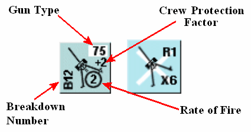
TIPO DE CAÑÓN FACTOR DE PROTECCIÓN DE LA DOTACIÓN NÚMERO DE AVERÍA CADENCIA DE FUEGO
49. REGLAS NOCTURNAS¶
Las acciones nocturnas fueron comunes durante toda la Segunda Guerra Mundial. Saber aprovechar una luna brillante y la cobertura de nubes disponible se convirtió en un arma importante en la batalla por sobrevivir de cada LÍDER DE ESCUADRA (SQUAD LEADER).
►49.1 Durante los escenarios nocturnos, las unidades solo pueden disparar si el objetivo está tanto en la Línea de Visión (LDV) de la unidad que dispara como dentro del Alcance de Visibilidad Nocturna (Night Visibility Range) del tirador para ese turno de jugador (EXCEPCIONES: 49.2, 49.7).
49.11 El Alcance de Visibilidad Nocturna para todo el turno de juego se determina al final de la primera Fase de Reorganización de cada Turno de Juego tirando dos dados. El número resultante es el número inclusivo de hexes de distancia desde un observador a los que pueden verse las unidades en movimiento (salvo obstáculos a la LDV) durante el resto de ese turno de juego.
49.12 El Alcance de Visibilidad Nocturna obtenido en la tirada siempre se incrementa en 3 al intentar observar vehículos en movimiento.
Ejemplo: Si se saca un 7, entonces cualquier unidad de infantería en movimiento a 7 hexes o menos (cualquier vehículo en movimiento a 10 hexes o menos) de distancia de un observador sería vista, siempre que la LDV no estuviera bloqueada.
49.2 Las unidades que hayan disparado durante el mismo turno de jugador o el inmediatamente anterior pueden delatar su posición a las unidades enemigas con una LDV despejada mediante los fogonazos de sus armas. Dichas unidades quedan sujetas a fuego incluso si están más allá del Alcance de Visibilidad Nocturna de la unidad que dispara. Sin embargo, el fuego más allá del Alcance de Visibilidad Nocturna se reduce a la mitad como Fuego de Área (Area Fire).
►49.3 Las fichas de ocultación en los escenarios nocturnos no se retiran debido a la presencia de unidades enemigas adyacentes. Las fichas de ocultación permanecen en su sitio y en efecto incluso durante el primer turno de jugador de las situaciones de combate cuerpo a cuerpo (CCC) nocturno.
49.4 Durante los escenarios nocturnos, las fichas de "?" se retiran si una unidad bajo el "?" dispara o se mueve a un hex iluminado dentro de la LDV de una unidad enemiga no desmoralizada. El mero Movimiento durante los escenarios nocturnos no retira la ficha de ocultación. Incluso una pila entera de fichas de ocultación puede moverse, pero si recibe fuego efectivo de una unidad enemiga, o si se mueve a un hex iluminado dentro de la LDV de una unidad enemiga, todas las fichas de "?" implicadas se retiran permanentemente.
49.5 Las unidades "reales" siempre pueden "generar" otra ficha de ocultación al final de su turno de jugador, siempre que no se hayan movido, disparado, recibido fuego que provoque un Chequeo de Moral, ni hayan estado en combate cuerpo a cuerpo durante el turno de jugador que acaba de completarse. Dicha colocación no está limitada a hexes de bosque o de edificio, ni por la presencia de unidades enemigas adyacentes, como sí lo está durante los escenarios diurnos (25.3).
49.6 Al final de la Fase de Reorganización, si hay unidades enemigas dentro de la LDV y del Alcance de Visibilidad Nocturna de un líder no desmoralizado, ese líder puede colocar una bengala (starshell) a 5 hexes o menos de su propia posición. La ficha de bengala se retira tras la Fase de combate cuerpo a cuerpo siguiente. Disparar una bengala no tiene ningún efecto perjudicial sobre el fuego ni las capacidades de liderazgo del líder.
49.7 Una bengala ilumina toda el área del tablero de mapa dentro de 3 hexes de la ficha de bengala como si fuera un escenario diurno. Las unidades situadas fuera del área iluminada que tengan una LDV no bloqueada aún pueden disparar al interior del área iluminada sin penalización adicional.
49.8 A diferencia de los escenarios diurnos, las unidades en huida pueden cruzar terreno de campo abierto dentro de la LDV de unidades enemigas, a menos que el hex en cuestión esté iluminado por una bengala.
¡ALTO! Has leído todo lo necesario para jugar el Escenario 6. Te aconsejamos que lo juegues al menos una vez antes de avanzar a los escenarios más complicados y realistas que siguen.
CONJUNTO DE JUEGO III¶
Los Escenarios 7-12 tratan sobre el combate en el Frente Occidental. Se introducen muchas nuevas capacidades de escuadra, armas y fortificaciones en el orden de su aparición en los escenarios, lo que hace imprescindible que el lector proceda de forma ordenada y no pase directamente a los nuevos escenarios sin leer el texto pertinente.
50. LOS AMERICANOS¶
El combatiente americano era distinto, tanto táctica como psicológicamente, de su homólogo alemán o ruso. Se desmoralizaba bajo el fuego más rápido que cualquiera de los otros dos; pero también se reorganizaba más rápido. Además, su falta de sentido táctico a menudo le llevaba a intentar ataques extraños y con frecuencia imprudentes contra el enemigo. Le encantaban los artilugios mecánicos de cualquier tipo y sentía un cariño increíble por el equipo capturado. Las siguientes reglas se emplean para reflejar estos rasgos del GI.
50.1 Las escuadras americanas (no los líderes) no están sujetas a la Moral de Desesperación. Las escuadras americanas siempre se reorganizan con una tirada igual a su moral normal más cualquier modificador de liderazgo en efecto.
50.2 Solo las unidades de élite americanas (8-4-7) y los líderes con un modificador de liderazgo de -2 o -3 pueden manejar lanzallamas y colocar cargas de demolición (Demo Charges). Las unidades de élite americanas (8-4-7) pueden colocar humo de la misma manera que los Ingenieros de Asalto alemanes (24), solo si el escenario en juego les otorga esa capacidad.
50.3 Solo las unidades de dotación (Crew) pueden manejar cañones antitanque, morteros u obuses.
50.4 Las unidades americanas del tipo correcto pueden operar todas las armas de apoyo capturadas excepto las radios. Por el contrario, rusos y alemanes pueden operar MG capturadas (EXCEPCIÓN: 41.2) y cañones AT (suponiendo que tengan dotaciones).
50.5 Las armas de apoyo americanas eran funcionalmente más fiables e iban acompañadas de mayores cantidades de munición. Para reflejar esto, los americanos pueden reparar el equipo americano averiado con una tirada de 1 o 2, en contraste con la tirada de 1 requerida para otras nacionalidades.
51. CAMIONES¶
51.1 Un camión puede transportar una escuadra, un líder y hasta 7 puntos de porte de armas de apoyo (sin contar los cañones remolcados). Por lo demás, el transporte de infantería con camiones es idéntico al procedimiento utilizado por los VBC (31.2-.6, 31.8-.9, 32.3-.4).
51.2 Los camiones nunca pueden entrar en un hex ocupado por el enemigo.
51.21 Los camiones, a diferencia de los VBC, pueden ser capturados y utilizados de la misma manera que una MG capturada, salvo que no se puede entrar en un hex ocupado por un camión enemigo durante la Fase de Movimiento.
51.22 Las unidades de infantería que se muevan a un hex que contenga un camión enemigo durante la Fase de Avance capturan automáticamente ese camión. Tras anotar la identidad del camión capturado en un papel, el captor puede usar el vehículo capturado como si fuera suyo, pero el vehículo opera con dos MP menos mientras esté bajo su control. Si hay infantería enemiga no pasajera en el mismo hex, primero habría que derrotarla en combate cuerpo a cuerpo (CCC).
51.3 [ RE: ver GIA 144.2 ] A diferencia de los VBC, las unidades no reciben un modificador de efectos del terreno por estar debajo de una ficha de camión. Las siluetas de los camiones sí sirven para bloquear la LDV al mismo nivel (32.3, 32.7) como si el camión fuera un muro de piedra en el segundo lado de hex del hex del vehículo a través del cual se traza el fuego.
►51.4 [ RE: ver GIA 144.32 ] Los camiones pueden ser eliminados mediante fuego de armas pesadas en la TABLA DE DESTRUCCIÓN DE VBC (AFV KILL TABLE) o mediante fuego de infantería en la Tabla de Fuego de Infantería (TFI). Cualquier fuego de infantería o de MG que resulte en un KIA destruye el camión. El fuego contra objetivos vehiculares ligeros (soft) en la TFI también puede resultar en la inmovilización o destrucción del vehículo si falla un Chequeo de Moral exigido por la TFI. Un vehículo que falla un Chequeo de Moral exigido por la TFI debe pasar otro Chequeo de Moral normal. Si el vehículo supera el segundo Chequeo de Moral, se considera inmovilizado. Si el vehículo falla el segundo Chequeo de Moral, se considera una carcasa (wreck). Todos los vehículos ligeros tienen una calificación de "moral" normal de "8". Cualquier pasajero a bordo del vehículo tendría que pasar un Chequeo de Moral aparte, según exija la TFI. Un vehículo inmovilizado puede repararse según 66.3, salvo que la tirada de reparación necesaria es de 4 o menos en lugar de 2. Para intentar una tirada de reparación, el vehículo debe colocarse debajo de una dotación, un pasajero u otra unidad amiga que intente la reparación, y queda sujeto a fuego según 66.31. Los vehículos ligeros sin una ficha de dotación inherente (desarmados), pasajeros u otras unidades amigas no pueden intentar la reparación.
51.41 Un camión eliminado se voltea para convertirse en una Carcasa de Camión (Truck Wreck).
51.42 [ RE: ver GIA 144.32 ] Todos los pasajeros de un camión eliminado son eliminados. Toda la infantería que se encuentre debajo (a pie) de la ficha de camión tendría que pasar un Chequeo de Moral normal, a menos que el fuego procediera de una MG, en cuyo caso toda la infantería del hex objetivo es eliminada.
51.5 Los pasajeros de un camión están sujetos a fuego de cualquier tipo y desde cualquier dirección. No hay modificador a la tirada (MTD) de -2 para las armas de infantería que disparan a un camión en movimiento durante la Fase de Fuego Defensivo.
51.6 Las carcasas de camión se eliminan y se retiran del tablero si la CARCASA del camión es destruida en la TABLA DE DESTRUCCIÓN DE VBC. El fuego de infantería (o de MG) que resulte en un KIA no elimina una carcasa de camión.
51.7 Se considera que los camiones están dotados inherentemente de un conductor y no necesitan estar ocupados para moverse. El conductor forma parte del vehículo y comparte su destino.
52. JEEPS¶
52.1 Un jeep puede transportar a dos oficiales cualesquiera y un arma de apoyo; o a una escuadra de dotación. Además, un jeep siempre puede remolcar un cañón.
52.2 Una escuadra de dotación o una MG dotada puede disparar desde un jeep. Sin embargo, como ocurre con todos los vehículos, si dispara en la Fase de Fuego Preparado no puede moverse en la Fase de Movimiento, y si se mueve en la Fase de Movimiento su potencia de fuego se reduce a la mitad en la Fase de Fuego de Avance.
52.3 Si un jeep es destruido, se retira del tablero. Las carcasas de jeep no existen.
52.4 Los jeeps no presentan ningún obstáculo a la LDV, ni modificadores a la tirada para el fuego dirigido a través de ellos.
52.5 Salvo lo modificado anteriormente, los jeeps se tratan exactamente igual que los camiones en todos los aspectos.
¡ALTO! Has leído todo lo necesario para jugar el Escenario 7. Te aconsejamos que lo juegues al menos una vez antes de avanzar a los escenarios más complicados y realistas que siguen.
53. ALAMBRADA¶
53.1 La alambrada de espino no es un arma de apoyo, sino que pertenece a la categoría denominada fichas de fortificación. Las fichas de fortificación se colocan antes del inicio de un escenario, en las cantidades especificadas por el escenario, no pueden moverse y no cuentan contra los límites de apilamiento.
53.2 La alambrada puede colocarse en cualquier hex que no sea de edificio.
53.3 La infantería no puede entrar en un hex de alambrada durante la Fase de Movimiento Normal. La infantería solo puede avanzar a un hex de alambrada durante la Fase de Avance (Excepción: 53.4).
►53.4 Las unidades de infantería solo pueden salir de un hex de alambrada durante la Fase de Movimiento. Cada unidad que abandone la alambrada debe tirar un dado, y el número resultante es la cantidad de Factor de Movimiento (FM) que pierde al salir de la alambrada. La unidad que sale también debe pagar el coste normal del terreno al que se mueve. Sin embargo, las unidades que salen siempre pueden moverse un hex, incluso si es directamente a otro hex de alambrada. No obstante, todas las unidades deben tener suficiente FM para transportar cualquier arma de apoyo que exceda su capacidad de porte normal, o de lo contrario deben dejar atrás esas armas. Cualquier unidad cuya tirada de pérdida de FM iguale o supere su capacidad de movimiento no puede sacar ninguna arma de apoyo del hex de alambrada.
53.5 Cada escuadra en un hex de alambrada puede optar por intentar despejar la alambrada tirando con dos dados un resultado igual o inferior a su factor de potencia de fuego durante la Fase de Fuego Preparado. Cada escuadra debe tirar por separado, pero si tiene éxito, la alambrada de ese hex se retira inmediatamente.
53.51 Un líder en el hex de alambrada puede añadir su modificador de liderazgo a la tirada de despeje de una escuadra.
53.52 Todas las unidades que participen en intentos de despeje de alambrada no pueden moverse ni disparar durante ese turno de jugador, independientemente del éxito o fracaso del intento de despeje.
53.53 Una carga de demolición (Demolition Charge) puede hacer las veces de torpedo bangalore y, por tanto, usarse para despejar un hex de alambrada. Se aplican todos los procedimientos de colocación de carga de demolición (23) y un resultado de KIA retira con éxito la alambrada durante la Fase de Fuego de Avance.
53.54 El bombardeo de artillería es generalmente ineficaz contra los enredos de alambrada, pero en ocasiones un fuerte cañoneo despejaba tales obstáculos. Las fichas de alambrada pueden retirarse del hex objetivo con un resultado de KIA durante bombardeos de artillería de 80 mm o más.
53.6 La alambrada de espino ni bloquea la LDV ni modifica el fuego dirigido a ella o a través de ella.
53.7 Los camiones y los jeeps no pueden entrar en hexes de alambrada.
53.8 Los carros y los cañones autopropulsados (CAP) pueden moverse sobre hexes de alambrada o a través de ellos sin penalización y, al hacerlo, retiran inmediatamente las fichas de alambrada.
53.9 Un semioruga puede moverse a un hex de alambrada, pero debe detenerse en el hex y no puede continuar hasta su siguiente Fase de Movimiento. La ficha de alambrada se retira igualmente de inmediato.

54. ATRINCHERAMIENTOS¶
►54.1 Los atrincheramientos (pozos de tirador) pertenecen a la categoría de fortificaciones (53.1). Los atrincheramientos especificados por el escenario se colocan en cualquier hex que no sea de edificio/búnker antes del inicio de la partida. Una vez colocados, los atrincheramientos no pueden moverse nunca.
►54.2 Los atrincheramientos adicionales a los especificados por un escenario pueden colocarse durante la partida de la siguiente manera. Cada escuadra no desmoralizada que comience su turno de jugador en un hex que no sea de edificio ni de búnker puede tirar dos dados durante la Fase de Fuego Preparado. Si la tirada resultante es igual o menor que "5", se coloca un marcador de atrincheramiento sobre todas las unidades del hex de la escuadra al final de la Fase de Fuego Preparado. Las tiradas de atrincheramiento deben hacerse por separado.
54.21 Un líder en el mismo hex puede añadir su modificador de liderazgo a la tirada de atrincheramiento de una escuadra, pero al hacerlo renuncia a su derecho a moverse o dirigir otras actividades durante ese turno de jugador.
54.22 Las unidades de infantería que intentan atrincherarse no pueden moverse ni disparar durante ese turno de jugador, independientemente del éxito o fracaso del intento de atrincheramiento.
54.3 Los hexes con atrincheramiento tienen la misma capacidad de apilamiento que un hex normal. Las unidades en atrincheramientos se colocan debajo del marcador de atrincheramiento, mientras que las unidades que están en el hex pero no en el atrincheramiento se colocan encima del marcador de atrincheramiento. Los vehículos y los cañones/obuses antitanque no pueden colocarse nunca debajo de un marcador de atrincheramiento.
►54.4 No cuesta FM adicional moverse a un hex con atrincheramiento previamente construido, pero sí cuesta 1 FM adicional entrar (debajo) en el atrincheramiento y 1 FM moverse desde debajo de un marcador de atrincheramiento a colocarse encima del mismo marcador de atrincheramiento.
Ejemplo: El líder se movió a través del hex de atrincheramiento sin entrar en el atrincheramiento en sí. La escuadra, por otro lado, gastó 2 FM en E7 para entrar en el atrincheramiento. Si el enemigo hiciera Fuego defensivo sobre E7, su tirada se modificaría en -2 contra el líder y +2 contra la escuadra.
54.5 Los atrincheramientos no suponen ningún estorbo al movimiento para los VBC, pero los camiones y jeeps deben gastar 4 FM más el coste del otro terreno del hex al moverse a un hex con atrincheramiento.
54.6 Las unidades de infantería pueden disparar cualquier arma de apoyo excepto lanzallamas y cañones/obuses antitanque desde dentro de un atrincheramiento. La potencia de fuego de estas armas no se ve afectada de ninguna manera.
54.7 Los atrincheramientos ofrecen distintos grados de protección frente al fuego para las unidades que están dentro (debajo) de ellos, dependiendo del tipo de armas que se usen contra ellas. Esta protección toma la forma de modificaciones a la tirada del atacante de la siguiente manera:
54.8 Cualquier muro o seto interpuesto que forme un lado de un hex de atrincheramiento bloquea la LDV de las unidades dentro del atrincheramiento hacia todos los hexes no adyacentes al mismo nivel o a un nivel inferior.
54.9 Las unidades desmoralizadas pueden huir hacia un hex con atrincheramiento dentro de la LDV de una unidad enemiga sin ser eliminadas. Las unidades desmoralizadas pueden incluso permanecer en un hex con atrincheramiento hasta que exista una ruta hacia un hex de bosque o edificio.
¡ALTO! Has leído todo lo necesario para jugar el Escenario 8. Te aconsejamos jugarlo al menos una vez antes de avanzar a los escenarios más complicados y realistas que siguen.
55. CAMPOS DE MINAS¶
55.1 Las minas pertenecen a la categoría de fortificaciones (53.1). No hay marcadores de minas. En su lugar, la ubicación y la potencia de las minas disponibles se anotan en un trozo de papel al comienzo del escenario. El escenario proporciona a un jugador un cierto número de factores de campo de minas. El jugador anota en secreto el hex (o hexes) y el número de factores de campo de minas asignados a cada hex. Las minas pueden colocarse en cualquier hex que no sea de agua, independientemente del terreno. Puede colocar tantos factores en cada hex como desee, siempre que el total de factores de campo de minas asignados a todos los hexes no exceda la cantidad concedida por el escenario. La disposición real de los campos de minas no se revela hasta que una unidad se mueve a un hex con campo de minas.
55.2 Siempre que una unidad de infantería (enemiga o amiga) entra en un hex con campo de minas, el jugador propietario debe anunciar cuántos factores de campo de minas ocupan el hex y atacar inmediatamente a la unidad en movimiento con esa cantidad de factores en la Tabla de Fuego de Infantería. No hay modificaciones de ningún tipo a la tirada del ataque del campo de minas.
55.21 Si el primer "asalto de campo de minas" no desmoraliza ni elimina a la unidad, esta tiene la opción de permanecer en el hex objetivo o intentar continuar su movimiento normal.
55.22 Las unidades también son atacadas por el campo de minas siempre que abandonan un hex con campo de minas. Así pues, una unidad puede ser atacada tanto al entrar como al salir de un campo de minas. Las unidades desmoralizadas por ataques de campo de minas al intentar salir de un hex con campo de minas se consideran todavía en el hex con campo de minas después del ataque.
55.23 Una unidad que falla un Chequeo de Moral debido a un asalto de campo de minas se considera que está en el hex objetivo del campo de minas que efectuó ese ataque.
Ejemplo: Supongamos que una unidad se mueve de un hex con campo de minas directamente a otro. Sufriría dos ataques de campo de minas para moverse 1 hex. Si sobrevive al primer ataque, se considera automáticamente en el hex al que se movió, pero todavía debe sufrir un ataque de campo de minas de entrada en el hex con campo de minas al que se movió.
►55.24 Los Chequeos de Moral debidos a asaltos de campo de minas están sujetos a los modificadores de liderazgo si hay un líder presente en el hex objetivo en el momento del ataque. De forma similar, si un líder se desmoraliza debido a un asalto de campo de minas, todas las unidades en el mismo hex objetivo en ese instante deben hacer un Chequeo de Moral normal.
55.3 Los asaltos de campo de minas afectan solo a las unidades en movimiento (EXCEPCIÓN: 55.24).
Ejemplo: Supongamos 3 escuadras en un hex con campo de minas. Una se va. Solo la unidad que se va sufriría el asalto de campo de minas, aunque otras dos unidades ocupen el mismo hex objetivo. Las otras dos unidades serían inmunes al asalto de campo de minas mientras no se muevan.
55.4 Las unidades desmoralizadas en un campo de minas deben huir a cubierto solo si el campo de minas está en terreno abierto o adyacente a una unidad enemiga. Las unidades que huyen de un hex con campo de minas estarían sujetas de nuevo (55.22) al ataque del campo de minas.
55.41 Las unidades desmoralizadas fuera de un campo de minas no tienen que huir hacia o a través de un hex con campo de minas en su camino hacia la "cubierta más cercana" si la presencia del campo de minas es conocida por el propietario de la unidad en huida.
55.42 Las unidades no desmoralizadas en un campo de minas pueden disparar y entablar combate cuerpo a cuerpo con normalidad.
►55.5 Cualquier escuadra en o adyacente a un hex con campo de minas puede intentar limpiar el campo de minas sacando un resultado menor o igual a su factor de potencia de fuego con dos dados durante la Fase de Fuego Preparado. Las tiradas de limpieza de minas deben hacerse por separado. Dos o más escuadras no pueden combinar sus factores de potencia de fuego para un único intento de limpieza de minas.
55.51 Un líder en o adyacente al hex con campo de minas puede añadir su modificador de liderazgo al intento de limpieza de minas de una escuadra, pero al hacerlo renuncia a su derecho a moverse o dirigir otras actividades durante ese turno de jugador.
55.52 Las unidades que intentan limpiar minas no pueden moverse ni disparar durante ese turno de jugador, independientemente del éxito o fracaso del intento de limpieza de minas.
55.6 Los vehículos que entran o salen de un hex con campo de minas sufren ataques en la Tabla de Fuego de Infantería de la misma manera, excepto que solo un resultado KIA afecta al vehículo. La tirada del asalto de campo de minas se modifica por los Modificadores de Campo de Minas contra Vehículos.
55.61 Los camiones y jeeps que reciben un resultado KIA son eliminados.
55.62 Los VBC que reciben un resultado KIA quedan inmovilizados y deben tirar los dados una segunda vez para determinar si el VBC explota. Repite el asalto de campo de minas que inmovilizó al vehículo. Si resulta un segundo "KIA", el vehículo es eliminado y reemplazado por una carcasa. Ten en cuenta que, incluso si un VBC inmovilizado no explota, su dotación todavía debe hacer un Chequeo de Moral (39.2).
55.63 Los pasajeros son inmunes a los ataques de campo de minas a menos que el vehículo que los transporta sea eliminado. Los pasajeros que desembarcan en un hex con campo de minas deben sufrir el asalto de campo de minas como si estuvieran entrando en el hex con campo de minas.
55.7 Los campos de minas pueden limpiarse por detonación mediante cualquier barrido de artillería FFE que resulte en un resultado KIA en ese hex.

54.7 Modificadores de Atrincheramiento¶
| TIPO DE ATAQUE | MOD |
|---|---|
| Lanzallamas | +0 |
| Fuego de infantería, fuego HE, Carga de demolición (Demo Charge) | +2 |
| Arrollamientos (Overruns), Artillería fuera del mapa (Offboard Artillery), Fuego indirecto | +4 |
En el reverso del contador de Atrincheramiento (Entrenchment) se encuentra una versión abreviada de esta tabla.
Verifica los valores con tus cartas/tablas originales.
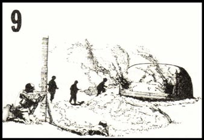
55.6 Modificadores de Campo de Minas contra Vehículos¶
| Vehículo | Modificador |
|---|---|
| Camión/Jeep (Truck/Jeep) | -3 |
| Semioruga (Halftrack) | -1 |
| Otros | 0 |
Verifica los valores con tus cartas/tablas originales.

CAPACIDAD DE APILAMIENTO MODIFICACIÓN DE DEFENSA EN ARCO CUBIERTO MODIFICACIÓN DE DEFENSA EN ARCO NO CUBIERTO
56. BÚNKERES¶
56.1 Los búnkeres pertenecen a la categoría de fortificaciones (53.1) y pueden colocarse solo al comienzo de un escenario, según se indique en ese escenario, en cualquier hex que no sea de edificio ni de bosque. Solo puede colocarse un búnker por hex. Los factores del búnker (leídos de izquierda a derecha) son los siguientes:
Capacidad de Apilamiento: El número de escuadras, líderes y armas de apoyo que pueden colocarse dentro de un búnker. Ignora los límites de apilamiento normales.
Ejemplo: Un búnker con una capacidad de apilamiento de 3 podría contener 3 escuadras, 3 líderes y 3 armas de apoyo simultáneamente.
Modificación de Defensa del Arco Cubierto: El número que se suma a las tiradas de los ataques contra el búnker que se trazan a través del Arco Cubierto del búnker.
Modificación de Defensa fuera del Arco Cubierto: El número que se suma a las tiradas de los ataques contra el búnker que no se trazan a través del Arco Cubierto del búnker.
56.2 Las unidades dentro del búnker se colocan debajo del marcador de búnker. Las unidades encima del búnker se consideran fuera de él y no reciben ningún beneficio protector del búnker. El búnker en sí no presenta ningún obstáculo a la LDV.
56.21 Las unidades fuera de un búnker deben obedecer las restricciones de apilamiento normales, pero el búnker y sus ocupantes no cuentan para estos límites.
56.22 Cuesta 1 FM entrar (o salir) de un búnker durante la Fase de Movimiento una vez en el hex. Si no se entra en el búnker, el coste de entrar en el hex del búnker es el del otro terreno del hex. Cualquiera de los dos bandos puede entrar o salir de un búnker durante su Fase de Avance.
56.3 El fuego desde un búnker solo puede trazarse a través del Arco Cubierto. Un búnker nunca puede moverse ni pivotarse de manera alguna que cambie el Arco Cubierto.
56.4 Ningún vehículo, mortero u obús puede estar en un búnker. Se puede colocar un cañón antitanque en un búnker, pero no puede moverse. Las tiradas de TO HIT contra el cañón antitanque se hacen sobre la clasificación del cañón antitanque.
Ejemplo: Alcance de 6; Tirada de TO HIT: 7; el búnker es impactado; el cañón antitanque no. Vuelve a tirar en la TFI para determinar el efecto sobre los ocupantes del búnker.
56.5 ATAQUES ESPECIALES: El FFE de la artillería fuera del tablero se modifica por la Modificación de Defensa fuera del Arco Cubierto.
56.51 La munición AP no tiene efecto sobre los búnkeres. La munición HE debe tirar primero en la Tabla de TO HIT bajo la clasificación "Infantería en Edificios". Si se obtiene un impacto, vuelve a tirar en la Tabla de Fuego de Infantería y aplica la modificación de defensa apropiada según el disparo haya cruzado o no el Arco Cubierto del búnker. Solo el contenido de un búnker puede ser destruido, nunca el búnker en sí.
56.52 Los lanzallamas deben añadir la Modificación de Defensa fuera del Arco Cubierto a sus ataques si su LDV no cruza el Arco Cubierto del búnker. Si la LDV sí cruza el Arco Cubierto, no hay modificación a la tirada del lanzallamas.
56.53 El Modificador de Defensa de los ataques de Carga de Demolición se determina por el hex ocupado por el ingeniero al colocar la carga. Si el ingeniero ocupa uno de los dos hexes adyacentes en el Arco Cubierto del búnker, el ataque se modifica por la Modificación de Defensa del Arco Cubierto. Si se coloca desde cualquiera de los otros hexes adyacentes restantes, se modifica por la Modificación de Defensa fuera del Arco Cubierto.
56.54 Los ataques de arrollamiento de VBC contra búnkeres se modifican por la Modificación de Defensa fuera del Arco Cubierto.
56.6 Las unidades desmoralizadas pueden huir hacia un hex con búnker y reorganizarse en él como si fuera un edificio. Las unidades desmoralizadas dentro de un búnker no necesitan huir aunque haya unidades enemigas adyacentes o encima del búnker.
56.7 Los ataques contra un hex con búnker afectan tanto a las unidades dentro como encima del búnker, pero solo las que están debajo del búnker reciben modificaciones a la tirada debidas al búnker.
56.8 Las unidades enemigas pueden ocupar ambas un hex con búnker sin combate siempre que un bando esté dentro (debajo) del búnker y el otro bando esté fuera (encima) del búnker. De forma similar, las unidades pueden moverse encima de un búnker enemigo durante la Fase de Movimiento siempre que no haya también una unidad enemiga encima del búnker.
56.81 Las unidades encima del marcador de búnker tienen la opción de entablar combate cuerpo a cuerpo con las unidades dentro del búnker moviéndose hacia dentro durante la Fase de Avance. Las unidades dentro del búnker no pueden nunca forzar el combate cuerpo a cuerpo sobre las unidades encima del búnker. Sin embargo, una vez iniciado, el combate cuerpo a cuerpo debe librarse hasta su conclusión.
56.82 Las unidades dentro de un búnker no pueden abandonar el búnker mientras una unidad enemiga no desmoralizada esté encima del búnker; ni siquiera para reforzar un combate cuerpo a cuerpo ya existente encima del búnker.
►56.83 Las unidades dentro de un búnker no pueden disparar sobre las unidades encima del búnker, aunque pueden seguir disparando a través del Arco Cubierto.
56.9 Los marcadores de ocultación dentro de un búnker no reducen a la mitad los ataques sobre los ocupantes; su única función es ocultar el número total de marcadores reales en la pila. Los ocupantes de un búnker no pueden ser examinados por un oponente, excepto para verificar la fuente del fuego que proviene del interior del búnker.
¡ALTO! Has leído todo lo necesario para jugar el Escenario 9.
57. NIVELES SUPERIORES DE EDIFICIOS¶
►57.1 Los edificios de 3 o más hexes ya han sido definidos como obstrucciones de Nivel Dos de varios pisos, pero hasta ahora las unidades ocupantes estaban sujetas a, y podían administrar, fuego ya fuera desde el nivel del suelo o desde la elevación del piso superior simultáneamente. De aquí en adelante, cada hex de edificio de varios pisos constará tanto de una planta superior como de una planta baja. Por simplicidad, limitaremos las designaciones de pisos al nivel del suelo y al 2º nivel. Ninguna unidad puede ocupar ambos niveles simultáneamente. Debido a la dimensión vertical añadida formada por el 2º nivel, cada hex de edificio de varios pisos contiene ahora, en efecto, dos hexes. Cada uno de estos dos hexes puede contener hasta los límites de apilamiento normales.
57.2 Las unidades en un hex de edificio de varios pisos se consideran en el nivel del suelo a menos que estén colocadas encima de un marcador de 2º nivel. El marcador de 2º Nivel forma en efecto el "suelo" entre el hex del nivel del suelo y el hex del nivel superior situado encima de él. Los marcadores de 2º Nivel no se colocan en el tablero excepto cuando están ocupados por otra unidad. El suelo permanece inherentemente presente a pesar de la ausencia del marcador de 2º Nivel. El marcador se usa solo para mostrar unidades en el nivel superior. Los costes de Movimiento y Ataque son los mismos para el 2º Nivel que para el nivel del suelo.
Unidad de 2º Nivel
Suelo de 2º Nivel
Tablero de juego
Unidad de Nivel del Suelo
57.3 El movimiento entre el nivel del suelo y el 2º Nivel del mismo hex se hace mediante una escalera. Cada edificio de varios pisos tiene 1 o más hexes con escalera. Un hex con escalera es cualquier hex que contiene un cuadrado blanco en el centro donde debería estar el punto central. Subir o bajar por una escalera cuesta 2 FM. Así pues, colocar o retirar un marcador de 2º Nivel cuesta 2 FM, incluso si un marcador nunca se mueve de su hex original del tablero.
Ejemplo: Le costaría 4 FM a una unidad moverse al nivel superior de un hex con escalera durante la Fase de Movimiento si comenzó el turno adyacente a la escalera en el nivel del suelo.
57.4 Las unidades en hexes sin escalera no pueden disparar ni entrar en combate cuerpo a cuerpo con unidades enemigas situadas por encima o por debajo de ellas en un nivel diferente. Las unidades que comienzan su Fase de Avance ya en, o adyacentes a, un hex con escalera pueden avanzar durante la Fase de Avance escaleras arriba o abajo y entablar combate cuerpo a cuerpo con unidades enemigas.
57.5 Las unidades desmoralizadas en el 2º Nivel no tienen que huir a menos que estén adyacentes a unidades enemigas también en el 2º Nivel, o si están en un hex con escalera con unidades enemigas en el nivel del suelo, y viceversa.
57.6 Ni los vehículos ni los cañones antitanque pueden ocupar el 2º Nivel de un edificio.
57.7 La diferenciación del 2º Nivel deja obsoletas las reglas originales de LDV (7.4) para edificios de varios pisos. Los jugadores deben visualizar que las unidades sobre marcadores de 2º Nivel ahora pueden ver y disparar por encima de obstáculos a nivel del suelo (teniendo en cuenta la zona ciega de un hex) y, a la inversa, reciben tal fuego de vuelta, pero las unidades a nivel del suelo del mismo edificio no podrían. Estar sobre un marcador de 2º Nivel es equivalente a estar en un hex de colina de Nivel Dos a efectos de LDV. Por lo tanto, no habría modificador a la tirada de combate de fuego por disparar a través de un lado de hex con muro o seto a un hex de 2º Nivel adyacente.
Ejemplo: El fuego se traza a través del lado de hex con muro hacia el edificio de piedra a nivel del suelo. Los modificadores totales para el ataque son +5 (+2 por muro, +3 por edificio de piedra). Si se dispara al nivel superior o desde M4, el mismo ataque se modificaría en +3 solo por el edificio.
57.8 Los ataques contra hexes de edificios de varios pisos deben especificarse ahora como hex objetivo "superior" o "inferior".
►57.81 Los ataques de FFE afectan a ambos niveles, superior e inferior, pero con tiradas de efectos separadas, excepto que un resultado KIA reduce a escombros todos los niveles. Los ataques de lanzallamas afectan al piso no objetivo como Fuego de Área. Los ataques de Carga de Demolición afectan al piso no objetivo como Fuego de Área, a menos que ocurra un resultado KIA contra el piso objetivo, en cuyo caso ambos niveles quedan reducidos a escombros.
57.82 Si un lanzallamas dispara desde dentro de un edificio escaleras arriba o abajo, los efectos del fuego no se aplican al hex que dispara.
►57.9 El movimiento entre el 2º Nivel y el nivel del suelo del mismo hex de edificio sin escalera es posible de la siguiente manera:
57.91 Cambiar de nivel sin una escalera se permite solo durante la Fase de Movimiento por unidades de infantería que transporten no más de 2 puntos de porte cada una de armas de apoyo.
57.92 Las unidades que cambian de nivel de esta manera no pueden realizar ningún otro movimiento ni fuego, incluido el combate cuerpo a cuerpo, durante el resto de su turno de jugador.
57.93 Las unidades que cambian de nivel de esta manera pierden todos los modificadores a la tirada por terreno protector a los que normalmente tendrían derecho durante la Fase de Fuego Defensivo y están también sujetas al modificador de -2 a la tirada por moverse en campo abierto.

58. ESCOMBROS¶
58.1 Cualquier ataque de FFE de artillería, HE, campo de minas o Carga de Demolición contra un edificio que resulte en un KIA (tras la modificación) causa un daño estructural suficiente para derrumbar el edificio en ese hex. Todos los ocupantes de ambos niveles (incluidas las armas de apoyo) son eliminados y cualquier capacidad de 2º Nivel de ese hex deja de existir. Da la vuelta al marcador de 2º Nivel para colocar un marcador de Escombros en el hex.
58.2 El movimiento a través de un marcador de escombros cuesta 2 FM, y el modificador a la tirada por efectos del terreno sigue siendo +3, el mismo que el de un edificio de piedra. Los vehículos no pueden entrar en un marcador de escombros.
58.3 Los escombros son una obstrucción de LDV de Nivel Uno, equivalente a la de un edificio de un piso o un bosque a nivel del suelo.
►58.4 Un carro o cañón autopropulsado (CAP) que se mueve a un edificio de madera crea un marcador de escombros en ese hex. Si no quedan inmovilizados, otros VBC de orugas pueden moverse a través del marcador de escombros sin tirar por inmovilización. Los VBC no pueden moverse a través de un hex con escombros que contenga un vehículo que quedó inmovilizado al intentar moverse a ese hex. No obstante, el marcador de escombros sigue generando los mismos costes de movimiento y modificadores de terreno que un edificio de madera. Un VBC inmovilizado en un hex con escombros no puede cambiar su Arco Cubierto.

Ejemplo de LDV: la Escuadra 4-6-7 dispara contra la Escuadra 6-2-8 a través de los hexes intermedios (M3, M4). La línea roja muestra la Línea de Visión (LDV) trazada entre ambas unidades.
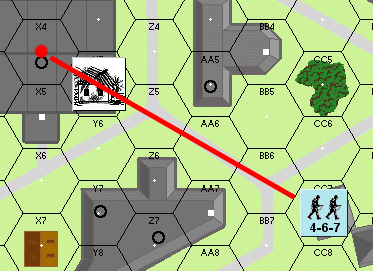
Ejemplo de LDV bloqueada: la Escuadra 4-6-7 (hex CC8) intenta trazar una Línea de Visión hacia el hex X4, pero el edificio situado en el camino bloquea la LDV (línea roja).

Propagación del incendio (resumen por tipo de hex)¶
Verifica los valores con tus cartas/tablas originales.
| Hex | Dados |
|---|---|
| Wdn (madera) | 8+ |
| Stn (piedra) | 9+ |
| Dif (distinto) | 10+ |
Leyenda: Wdn = Wooden (madera); Stn = Stone (piedra); Dif = Different (edificio distinto). «Dados» = tirada necesaria (igual o mayor).
59.4 Tabla de Propagación del Incendio¶
Verifica los valores con tus cartas/tablas originales.
| El hex adyacente es: | Tirada necesaria |
|---|---|
| Mismo edificio de madera | 8–12 |
| Mismo edificio de piedra | 9–12 |
| Edificio distinto | 10–12 |
| Hex de bosque/madera | 7–12 |
| Grano (cereal) | 6–12 |
59. FUEGO¶
59.1 Los incendios pueden iniciarse y seguir existiendo en cualquier hex de edificio. Se asume que un incendio en un hex afecta a todos los niveles de ese edificio en el hex.
Los incendios pueden iniciarse en hexes de bosque y de trigal de la misma manera que se inician en edificios, excepto que tales incendios están limitados a escenarios que tengan lugar de junio a octubre. Los incendios de bosque se propagan a hexes de bosque adyacentes con una tirada de 7 o más; los incendios de grano se propagan a hexes de trigal adyacentes con una tirada de 6 o más. Los incendios pueden propagarse a hexes adyacentes de distintos tipos de terreno con una tirada igual o mayor que el número de propagación requerido por el tipo de terreno al que el incendio puede propagarse.
59.2 Un lanzallamas inicia un incendio en un hex objetivo de edificio cada vez que obtiene un resultado KIA sobre ese hex objetivo.
59.3 La artillería fuera del tablero y los ataques HE pueden posiblemente causar un incendio tras sacar un resultado KIA (tras la modificación). Para determinar si efectivamente resulta un incendio, repite el ataque en el que se sacó el KIA inicial. Si se saca KIA por segunda vez, se desata un incendio.
►59.4 El fuego puede propagarse a cualquier hex de edificio adyacente en el primer turno de jugador y en todos los sucesivos después de que aparezca. Tira dos dados al final de la Fase de Fuego de Avance por cada hex de edificio adyacente a un marcador de incendio y consulta la Tabla de Propagación de Incendios.
Una versión abreviada de la Tabla de Propagación de Incendios está impresa en el reverso de los marcadores de incendio.
►59.5 Los marcadores de incendio permanecen en efecto durante el resto del escenario.
►59.6 Las unidades en un hex con incendio deben abandonarlo en la Fase de Huida inmediatamente siguiente o ser eliminadas. Las unidades no desmoralizadas tendrían la opción de "desmoralizarse" voluntariamente o de moverse un hex durante la Fase de Huida. Ninguna unidad puede moverse a un hex con incendio.
59.7 El fuego, debido al humo que lo acompaña, bloquea toda la LDV a través del hex con incendio, independientemente de la elevación.
59.8 Las unidades no pueden "prender" incendios a menos que lo permita específicamente el escenario en juego.
¡ALTO! Has leído todo lo necesario para jugar el Escenario 10. Te aconsejamos jugarlo al menos una vez antes de avanzar a los escenarios más complicados y realistas que siguen.
60. CRUCES DE RÍO¶
Las siguientes reglas fueron diseñadas específicamente para el Escenario 11, pero con los ajustes adecuados pueden usarse para diseñar tus propios escenarios anfibios.
60.1 El borde de tablero más al sur y todos los medios hexes del borde sur se consideran parte del río. No se permite ningún movimiento en estos hexes parciales.
►60.2 Las unidades americanas que entran en la partida deben cruzar el río (borde del tablero) durante la Fase de Movimiento americana. El primer hex completo al que se muevan finaliza la Fase de Movimiento de esa unidad.
60.3 Debido a la escasez de Lanchas de Asalto, los americanos deben tirar dos dados antes de cada Fase de Movimiento. El número resultante es la cantidad máxima de escuadras que pueden desembarcar ese turno en el borde del río. Cualquier número de líderes puede desembarcar en un turno dado. Cada escuadra puede desembarcar con un arma de apoyo.
60.4 Las dos primeras filas de hexes completos a lo largo del río Rin están oscurecidas por la niebla como si estuvieran bajo un marcador de humo, hasta que la niebla se disipe (60.5). La niebla tiene el mismo efecto que el humo.
60.5 El americano debe tirar un dado al comienzo de cada Turno de Juego, empezando por el turno 2. Una tirada de "1" hace que la niebla se disipe y deje de existir.
¡ALTO! Has leído todo lo necesario para jugar el Escenario 11. Te aconsejamos jugarlo al menos una vez antes de avanzar al escenario más complicado y realista que sigue.
61. NIEVE¶
61.1 La nieve duplica los costes de terreno de la Fase de Movimiento para infantería, camiones y jeeps. El movimiento de los VBC no se ve afectado por la nieve.
61.2 El movimiento a través de lados de hex con carretera no se ve afectado por la nieve.
61.3 Todas las tiradas de intento de atrincheramiento se modifican en +2.
61.4 Todas las tiradas de asalto de campo de minas se modifican en +1.

Ficha de cañón (anverso y reverso). Detalle de los valores de la ficha: - Cadencia de fuego (Rate of Fire): número en círculo (2) en la esquina superior izquierda. - Tamaño del cañón (Gun Size): valor superior (105 en el anverso; 81 en el reverso). - Munición de carga hueca / HEAT (HEAT Ammunition): indicador inferior izquierdo (H6). - Factor de protección de la dotación (Crew Protection Factor): valor inferior (+2). - Número de avería/reducción (Breakdown Number): valor inferior derecho (B12). El reverso (caras azules) muestra el cañón inutilizado (X6) tras la avería/reducción.
62. BARRICADAS¶
62.1 Las barricadas pertenecen a la categoría de fortificaciones (53.1) y pueden colocarse solo al inicio de un escenario, en el número requerido por el escenario, a menos que se indique lo contrario.
62.2 Un marcador de barricada se trata como un muro de piedra a través del lado de hex al que apunta. Sin embargo, ningún vehículo puede cruzar tal lado de hex.
62.3 Las barricadas pueden eliminarse mediante un carro, cañón autopropulsado (CAP) o escuadra (a pie) que pase un turno de jugador entero adyacente al lado de hex de la barricada sin moverse ni disparar. Retira la barricada durante la Fase de Reorganización siguiente.
►62.4 Las barricadas pueden retirarse mediante un ataque de Carga de Demolición con resultado KIA.
63. ARTILLERÍA SOBRE EL MAPA¶
63.1 El uso de la Artillería sobre el mapa no resta ni afecta en modo alguno a la cantidad de apoyo de artillería fuera del mapa (45.2) asignada por un escenario.
63.2 FUEGO DIRECTO: Los morteros individuales y los obuses estadounidenses de 105 pueden disparar en fuego directo siempre que tengan una LDV despejada al hex objetivo.
63.21 Los morteros tienen un alcance mínimo de 10 hexes y un alcance máximo de 60 hexes en todo momento. No están limitados por el Arco Cubierto. Los obuses pueden disparar en fuego directo a cualquier alcance y están limitados por el Arco Cubierto.
63.22 El fuego directo de mortero y de artillería contra objetivos de infantería se resuelve de la misma manera que el combate de VBC (33.3). Debe consultarse la TABLA PARA IMPACTAR (TO HIT TABLE) y, si se consigue un impacto, el efecto se halla en la Tabla de Fuego de Infantería.
63.23 El Fuego Directo de Mortero contra vehículos se resuelve (una vez determinado el impacto) en la Tabla de Fuego de Infantería utilizando los Modificadores de Bombardeo de Artillería contra Vehículos (46.54).
63.24 El fuego directo de Obús contra vehículos se resuelve de la misma manera que los ataques de Cañón AT, salvo que el obús debe disparar HE de 105, no AP.
63.3 HEAT (carga hueca): El jugador estadounidense puede disparar munición HEAT (H6) desde su Priest y su M4M52. La HEAT no tiene efecto contra la infantería pero es muy eficaz contra los vehículos.
63.31 El jugador estadounidense debe especificar si está disparando HEAT antes de tirar los dados de "TO HIT" (para impactar).
63.32 Una tirada de "TO HIT" con HEAT de 6 o más resulta en que ese cañón se queda sin proyectiles HEAT durante el resto del escenario. Trata ese proyectil y todos los subsiguientes como HE. Debe llevarse un registro escrito de qué armas se han quedado sin munición HEAT.
63.4 FUEGO INDIRECTO: La artillería sobre el mapa también puede efectuar fuego indirecto (es decir, fuego sobre unidades a las que no tiene una LDV directa). El procedimiento es el mismo que el del apoyo de artillería fuera del mapa (46), salvo que el área de explosión se limita al hex ocupado por el disparo de reglaje (Spotting Round), en lugar del grupo de 7 hexes de una batería completa, y no hay límite al número de misiones de fuego que pueden solicitarse. Dos obuses o morteros que disparen desde el mismo hex pueden dirigirse contra el mismo hex objetivo y, por tanto, tiran dos veces para resolver cada FFE (Fuego de Eficacia).
63.41 El alcance mínimo para el fuego indirecto de obús es de 20 hexes, incluido el hex objetivo.
63.42 Los obuses que efectúan fuego indirecto atacan solo una vez por turno, independientemente de su cadencia de tiro.
63.43 El fuego indirecto de la artillería sobre el mapa sigue requiriendo contacto por radio con un líder no desmoralizado que tenga una LDV despejada al hex objetivo. El hex de la artillería no necesita un marcador de radio para recibir el contacto por radio. Dicho fuego no constituye una misión de fuego que cuente contra la asignación de artillería fuera del mapa.
63.44 El Priest y el M4M52 pueden disparar en fuego indirecto de la misma manera que un Obús de 105 mm.
63.45 El M4A4 y el M10 pueden disparar HE de 75 mm en fuego indirecto a un alcance mínimo de 25 hexes, incluido el hex objetivo. No obstante, el Fuego Indirecto de estos dos vehículos se reduce a la mitad por tratarse de fuego de ÁREA.
63.5 Un líder no puede estar en contacto por radio con más de un hex de artillería por turno de jugador. Si el líder ha establecido contacto por radio con un hex de artillería fuera del mapa, no podrá intentar dirigir ningún fuego indirecto de artillería sobre el mapa hasta que haya roto el contacto por radio original. Cada emplazamiento de artillería sobre el mapa puede estar compuesto por no más de dos morteros u obuses.
63.6 Los morteros y los obuses de 105 mm están sujetos a las mismas reglas de apilamiento y movimiento que los Cañones AT, salvo que los morteros no se remolcan, sino que se transportan a bordo de vehículos con un coste de transporte de 5 factores de transporte. Transportar un mortero no duplica los costes de movimiento de un vehículo, como sí ocurre al remolcar un Cañón AT u obús.
63.7 Al disparar el armamento principal contra morteros u obuses, el número de "TO HIT" (para impactar) no se halla en la fila de Cañón AT. Más bien, se halla en la fila de infantería correcta, y su efecto se mide contra la dotación en la Tabla de Fuego de Infantería. Cualquier resultado KIA contra la dotación elimina también el arma.
Las reglas presentadas aquí para la artillería sobre el mapa son solo provisionales y se revisarán y ampliarán por completo para quienes continúen con las gamettes avanzadas de SQUAD LEADER (véase pág. 30).
REGLAS OPCIONALES¶
7.1¶
7.1 SUGERENCIA: Mover unidades para apartarlas y comprobar la LDV con una regla puede ser un fastidio. Para este propósito, así como para proporcionar terreno adicional para escenarios de tu propio diseño, hay tableros duplicados disponibles por separado por correo. Envía un sobre franqueado con tu dirección a The Avalon Hill Game Company, 4517 Harford Rd., Baltimore, MD 21214 y pide una lista de piezas actualizada.
8.7¶
8.7 Es mucho más realista, aunque más engorroso, que los jugadores predesignen todos los ataques. Los jugadores deben ponerse de acuerdo sobre cuál versión de 8.7 utilizarán antes de empezar a jugar.
16. MOVIMIENTO Y FUEGO DEFENSIVO SEMISIMULTÁNEOS¶
En las reglas básicas, el atacante movía todas sus unidades de infantería y luego, tras el movimiento, el defensor "movía hacia atrás" todas las unidades en movimiento y disparaba contra ellas donde quería. Este método da al defensor demasiada coordinación y puede ser engorroso si hay muchas unidades en movimiento. Como método alternativo, todo el procedimiento puede hacerse "semisimultáneamente" de la siguiente manera:
16.1 El atacante debe mover todas sus unidades, ya sea como unidades individuales o como pilas, una a una. A medida que mueve sus unidades, el jugador defensor debe, como antes, observar muy de cerca, ya que ahora hace fuego defensivo en cuanto el jugador en movimiento ha entrado en un hex que está dentro de la LDV de una o más de las unidades defensoras. El jugador defensor no está obligado a disparar; es su opción hacerlo.
16.2 Si la unidad defensora desea disparar, tanto el fuego como su efecto correspondiente se resuelven inmediatamente. Si la unidad o pila en movimiento sobrevive al fuego, y a cualquier posible chequeo de moral, se le permitiría entonces completar su movimiento.
16.3 Inmediatamente después de resolver el fuego defensivo, el hex hacia el que se dirigió se marca con un marcador de rastro. Esto significa que ese hex en particular está ahora bajo fuego y se considera un hex rastreado.
16.4 Si cualesquiera otras unidades o pilas se mueven a ese hex rastreado en particular, serían susceptibles de recibir la misma potencia de fuego defensivo de esa misma unidad defensora que originalmente disparó sobre ese hex. Por lo tanto, se permitiría a la unidad defensora disparar a cada unidad que se mueva a través de ese hex rastreado en particular sobre el que disparó, usando tiradas separadas para cada pila sobre la que dispare.
16.5 Dado que las MG penetran en más de un hex, tienen, en efecto, una LÍNEA DE FUEGO (LOF), en lugar de solo un hex rastreado. Esta LOF puede definirse fácilmente colocando una regla desde el centro del hex del que dispara hasta el centro del hex rastreado inicial. Cualquier unidad en movimiento que cruce la LOF puede recibir el fuego de esa ametralladora en particular, a opción del que dispara, hasta el límite de la penetración de esa MG.
16.6 Una vez que una MG dispara a un hex rastreado, estableciendo una LOF específica, no puede disparar fuera de esa LOF en esa FASE DE FUEGO en particular. Esa unidad, o Grupo de Fuego, ha quedado comprometida para esa Fase. Si otras unidades enemigas se mueven entre una MG y su hex objetivo inicial, solo se les puede disparar si a la MG le quedan factores de penetración. Una vez que ha disparado, una MG no puede cambiar su hex objetivo inicial para disparar a un objetivo más cercano.
16.7 Esta resolución conjunta y semisimultánea de la FASE DE MOVIMIENTO y de la fase de FUEGO DEFENSIVO continúa hasta que el atacante haya movido todas sus unidades o pilas que desee mover, y el defensor haya hecho cualquier fuego defensivo que desee hacer, contra las unidades del jugador atacante, se hayan movido o no.
16.8 Después de que todo el movimiento haya terminado, el defensor todavía puede hacer fuego defensivo con cualquiera de sus unidades que no dispararon durante el movimiento hex por hex propiamente dicho contra cualquier unidad enemiga que todavía esté dentro de su LDV. El fuego sobre tales objetivos todavía recibiría un modificador de -2 a la tirada si actualmente se encuentran en un hex de terreno abierto al que se movieron durante la Fase de Movimiento pasada.
16.9 Todas las demás reglas de Fuego defensivo se aplican, junto con cualesquiera reglas opcionales seleccionadas que ambos jugadores hayan acordado. La ventaja de este modo de resolución de movimiento/fuego es que permite al atacante hacer fintas en un intento de desviar el fuego del verdadero punto del ataque principal. Sin embargo, este método de resolución puede ralentizar la partida en muchos casos. Los jugadores deben probar ambos sistemas para determinar cuál les gusta más.
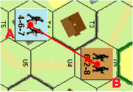
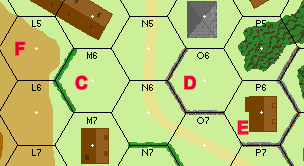
Preguntas y respuestas (aclaraciones oficiales)¶
Regla 8.6 — P: ¿Pueden los pasajeros de semiorugas adyacentes formar grupos de fuego multi-hex? R: Sí.
Regla 11 — P: ¿Son acumulativos los modificadores por efectos del terreno? Ejemplo: ¿obtendrían los pasajeros de un VBC el +1 MTD por estar en un hex de bosque, además de las protecciones que aporta el blindaje? R: Sí. Observa, no obstante, que el +2 MTD por estar tras un muro de piedra no se aplicaría a la infantería montada en un semioruga, ya que esta ya dispone de ese MTD por estar en el semioruga. El propio semioruga, en cambio, sí podría usar el +2 MTD del muro de piedra contra cualquier fuego de MG dirigido contra el propio semioruga (no contra los pasajeros).
Regla 11.1 — P: ¿Se aplica el modificador "en edificio" a las unidades que disparan contra unidades adyacentes situadas en el mismo edificio? R: Sí.
Regla 11.6 — P: En el ejemplo de un grupo de fuego, si la unidad del centro dispara por separado, ¿pueden las dos 8-3-8 seguir combinándose para formar un grupo de fuego? R: No.
Regla 12.22 — P: Si dos líderes que están en un hex junto a una escuadra de infantería se desmoralizan, ¿cuántos chequeos de moral debe realizar cada unidad? R: El primer líder chequeado solo realiza el chequeo de moral exigido por la IFT; el segundo líder tendría que realizar el chequeo de moral de la IFT más un chequeo de moral normal, si el primer líder se desmoralizó. Suponiendo que el 2.º líder también se desmoralice, la escuadra tendría que realizar el chequeo de moral de la IFT y dos chequeos de moral normales.
Regla 13.41 — P: ¿Puede una unidad en huida huir hacia una posición enemiga que está fuera de su LDV al comienzo de la fase de huida, pero que sí está en la LDV de otras unidades amigas? R: Sí.
Regla 13.41 — P: ¿Es correcta la siguiente reformulación alternativa de 13.41? "Una unidad desmoralizada que esté en la LDV de una unidad enemiga no puede acercarse más a ella, ni siquiera aunque se desplace fuera de la LDV del enemigo." R: No.
Regla 13.41 — P: ¿Se consideran las unidades ocultas posiciones enemigas conocidas a efectos de esta regla? R: No; mientras la(s) unidad(es) enemiga(s) opte(n) por permanecer ocultas, la unidad desmoralizada es libre de huir en su dirección. La unidad oculta podría renunciar a su ocultación para negar a la unidad en huida esa ruta concreta, y al hacerlo eliminaría a la unidad en huida.
Regla 13.42 — P: ¿Se puede huir a través de un hex lleno de humo como si se estuviera tras un seto o muro? R: Sí; además, los VBC, restos/carcasas, atrincheramientos, búnkeres y barricadas pueden servir para alterar el terreno despejado a efectos de determinar la ruta de huida permitida y el fuego defensivo contra VBC adyacentes.
Regla 13.44 — P: Si el hex de edificio o bosque más cercano ya contiene unidades amigas, ¿pueden las unidades en huida huir hacia ese hex y superar los límites de apilamiento? R: No, pueden huir a través del hex pero no hacia él; todas las unidades en huida que excedan los límites de apilamiento son eliminadas. NOTA: las unidades desmoralizadas que estén en un hex objetivo excediendo los límites de apilamiento como resultado del fuego defensivo no se eliminan, salvo que el exceso de apilamiento siga existiendo al concluir la fase de huida siguiente.
Regla 14.6 — P: ¿Se aplica la moral de desesperación al fuego que provocó la desmoralización de la unidad? R: Sí, si ocurrió desde la fase de reorganización anterior. La moral de desesperación solo se aplica a aquellas unidades desmoralizadas que han recibido fuego durante el turno de jugador anterior.
Regla 15.1 — P: ¿Puede un jugador optar por no añadir el valor de liderazgo de un líder a un grupo de fuego situado en su hex? R: Sí. No se puede obligar a un jugador a usar el valor de liderazgo +1 de un mal líder, salvo en los chequeos de moral e intentos de reorganización, donde influye en todas las unidades del mismo hex.
Regla 15.2 — P: Si pilas de infantería amigas adyacentes tienen líderes en cada hex, ¿pueden las unidades de esos hexes combinar su fuego en un grupo de fuego multi-hex y seguir usando el modificador de liderazgo? R: Sí; siempre que cada hex de la cadena contenga un líder, y que el modificador de liderazgo total no supere el del líder menos eficaz de los implicados.
Regla 16.4 (y 31.4) — P: Si la infantería desembarca a un hex adyacente, ¿se le puede disparar en el hex desde el que desembarcó? R: Sí; pero recibiría un +1 MTD por estar debajo de un VBC. Si ese hex resultara estar en terreno despejado, también se aplicaría el -2 MTD por movimiento al descubierto, para un MTD neto de -1. Si el pasajero desembarcara directamente a un hex adyacente de terreno despejado, en ese hex adyacente solo se aplicaría el -2 MTD por fuego defensivo.
Regla 17.5 — P: ¿Puede usarse la penetración de MG contra la misma unidad objetivo si esta sobrevive al primer ataque, pero sigue moviéndose a lo largo de la LDV de la MG? R: No. Una unidad solo puede ser atacada una vez por fase por la misma MG.
Regla 17.5 — P: ¿Detienen la penetración los cráteres de proyectil, los trigales, los muros y los setos? R: Los muros sí, pero solo cuando están en el mismo nivel que el objetivo y el que dispara.
Regla 17.7 — P: Si una LDV se traza exactamente a lo largo del borde de un único hex lleno de humo, ¿se ve afectado el fuego? R: No, salvo en el caso del fuego penetrante de MG, donde el humo afectaría a todos los hexes objetivo potenciales situados a ese lado del borde de hex con humo. Por supuesto, el que dispara podría optar por trazar su fuego a través del hex contiguo sin humo y así evitar el humo por completo.
Regla 18.1 — P: Supón que una LMG y una MMG rusas están en el mismo grupo de fuego y se saca un '10' en el combate de fuego. ¿Quedan ambas MG fuera de servicio? R: No; aunque solo se usa una tirada de dados para resolver las averías de todas las armas de apoyo participantes, resulta evidente que solo la LMG con número de avería 10 se vería afectada.
Regla 18.42 — P: ¿Pueden las unidades rusas en estado berserk transportar armas de apoyo? R: Solo aquellas que no mermen su capacidad máxima de movimiento; p. ej., una escuadra puede transportar hasta tres puntos de porte, y un líder solo un punto de porte.
Regla 22.1 — P: Si un lanzallamas dispara contra un enemigo a 1 hex de distancia, ¿impactaría también a una unidad amiga que esté en la LDV a 2 hexes de distancia? R: Sí, y usando la misma tirada de dados.
Regla 22.7 — P: Si hay dos lanzallamas en un hex objetivo, ¿se ajusta la tirada del combate de fuego en -1 o en -2? R: -2.
Regla 23 — P: ¿Pueden las unidades regulares transportar lanzallamas y cargas de demolición mientras no los usen? R: Sí.
Regla 25.41 — P: ¿Aportan los líderes ocultos sus beneficios a las unidades amigas no ocultas que reciben fuego en su hex? R: No, salvo que el líder renuncie a su estado de ocultación, en cuyo caso todas las unidades ocultas del hex perderían su estado de ocultación.
Regla 27.3 — P: ¿Debe una escuadra tener capacidad de moverse 3 hexes —tras añadir cualquier bonificación por acompañamiento de líder y restar cualquier exceso de costes de porte— para poder usar el movimiento por alcantarillas? R: Sí.
Regla 30.4 — P: ¿Cuánto cuesta que un VBC pivote en el hex desde el que inicia su movimiento? R: 2 PM más el coste del terreno de cualquier hex al que se mueva.
Regla 31.7 — P: Si un VBC dispara cualquier armamento o es impactado por fuego defensivo mientras se mueve, ¿debe pagar el coste de 2 PM por cualquier infantería que se vea obligada a desmontar? R: Sí.
Regla 34.8 — P: ¿Puede una dotación expuesta sujeta a un chequeo de moral beneficiarse de un líder situado en el mismo hex? R: Sí.
Regla 35.1 — P: Si un VBC se avería al entrar en un hex de bosque o de edificio de madera, ¿puede aun así realizar un ataque de arrollamiento en ese hex? R: Sí, incluso si la dotación falla su chequeo de moral y abandona el VBC. Observa que, en ese caso, la dotación quedaría trabada en combate cuerpo a cuerpo con cualquier superviviente del ataque de arrollamiento.
Regla 35.1 — P: ¿Se puede arrollar a una unidad situada sobre una ficha de humo? R: Sí; pero el atacante sufre el modificador por humo a la tirada del combate de fuego, igual a la tirada de un dado.
Regla 36.22 — P: Si un pasajero de un VBC es atacado en combate cuerpo a cuerpo, ¿debe el pasajero desmontar independientemente del resultado? R: Sí.
Regla 36.24 — P: ¿Puede una unidad de infantería que logra destruir un carro en combate cuerpo a cuerpo regresar al hex desde el que avanzó en el mismo turno de jugador? R: No. Sin embargo, sí obtiene protección de los restos/carcasa (40.5).
Regla 36.4 — P: ¿Puede un líder realizar su propio ataque contra un VBC sin aplicar su valor de liderazgo, para aplicar ese valor en cambio al ataque de una escuadra con la que está apilado? R: No.
Regla 37.31 (y 37.41) — P: ¿Hay algún modificador por disparar armas de carga hueca con cohete contra VBC en movimiento? R: Sí, +2; se aplica el caso A de los modificadores a la tirada de determinación de impacto.
Regla 37.34 — P: ¿Puede un líder aplicar su modificador de liderazgo tanto a la tirada PARA IMPACTAR del bazooka o panzerfaust como a la tirada de potencia de fuego inherente de la escuadra que dispara el arma? R: No.
Regla 40.2 — P: ¿Son los límites de apilamiento para la infantería en un hex de restos/carcasa los mismos que para un vehículo en funcionamiento? R: Sí, salvo que ninguna unidad puede apilarse encima de unos restos/carcasa como pasajero, y que los cañones AT sí pueden emplazarse en un hex de restos/carcasa.
Regla 40.4 — P: ¿Se retiran del juego los restos/carcasa o se empujan a un hex adyacente? R: Se retiran del juego.
Regla 40.5 — P: El punto 40.5 dice que los restos/carcasa ofrecen cobertura a la infantería igual que los VBC, pero el ejemplo 1 de la pág. 13 muestra el fuego B sin modificar porque no pasa a través del contorno del VBC, mientras que 32.7 indica que las fichas de VBC anulan el -2 MTD por movimiento al descubierto. ¿Cuál es correcto? R: Ambos lo son... 32.7 se refiere al movimiento por detrás de una línea de vehículos contiguos, o de vehículos y obstrucciones de LDV, una situación que no se da en el ejemplo 1 de la página 13.
Regla 41.2 — P: ¿Pueden las dotaciones añadir los factores de la LMG a la potencia de fuego atacante en combate cuerpo a cuerpo? R: No.
Regla 45.2 — P: Si una ficha de FFE no se retira, sino que se vuelve a usar el turno siguiente, ¿cuenta este uso continuado a lo largo de varios turnos como una sola misión de fuego? R: No... cada turno de jugador en que se resuelve una FFE se trata como una nueva misión de fuego.
Regla 46.7 — P: Si la LDV del líder hacia un hex de FFE está bloqueada, ¿qué le ocurre al fuego de artillería? R: El ataque se produce con normalidad: el líder tiene que avistar el hex objetivo para la colocación o corrección de la FFE, no para su resolución.
Regla 47.2 — P: Si un semioruga armado es eliminado, ¿se tira por la supervivencia de los pasajeros del mismo modo que se hace con la dotación? R: Sí, cada unidad, incluida la dotación, tira por su supervivencia por separado. Todas las armas de apoyo se eliminan. Los pasajeros a bordo de un semioruga desarmado tienen la misma probabilidad de supervivencia, aunque no haya un número de supervivencia de dotación inherente impreso en la ficha.
Regla 47.4 — P: ¿Benefician los líderes pasajeros a la infantería situada debajo del vehículo? R: Sí, pero en el caso de un semioruga, el líder se consideraría expuesto como si disparara, según se describe en 47.7.
Regla 47.8 — P: ¿Está la dotación de un M10, Priest u otro VBC de techo abierto sujeta al fuego de infantería procedente de un hex adyacente de mayor elevación del mismo modo que los pasajeros de un semioruga? R: Sí, la dotación sufriría cualquier chequeo de moral o KIA exigido en la IFT y, si se desmoraliza o es eliminada, el VBC quedaría destruido.
Regla 48.5 — P: ¿Puede un cañón AT rotar 3 bordes de hex antes de cada disparo durante la fase de fuego defensivo, o solo puede rotar un total de 3 bordes de hex durante toda la fase de fuego defensivo? R: Lo segundo.
Regla 48.61 — P: ¿Puede un vehículo cargar un cañón AT y su dotación en la misma fase de movimiento? R: No. El vehículo debe entrar en el hex del cañón AT con la mitad de sus PM restantes y, como se indica en 31.7, la infantería solo puede embarcar en un vehículo si dicho vehículo permanece inmóvil durante todo el turno de ese jugador.
Regla 54.4 — P: Al usar la regla opcional 16, ¿se puede disparar contra una unidad que se mueve bajo una ficha de atrincheramiento en el hex de atrincheramiento antes de que "se meta debajo" del atrincheramiento? R: No, al jugador que se mueve se le concede automáticamente el beneficio del atrincheramiento en cuanto entra en el hex y manifiesta su uso del atrincheramiento declarando el número de FM que está utilizando en el hex.
Regla 56.1 — P: ¿Qué modificación de defensa se usa si un grupo de fuego multi-hex se dirige contra un búnker de tal modo que el fuego de un hex se traza a través del arco cubierto y el del otro hex se traza a través del arco no cubierto? R: En contra de 11.6, en tal situación el grupo de fuego debe dividirse en fuegos separados. Si insisten en disparar como un único grupo de fuego combinado, la modificación de defensa que se usa es la del arco no cubierto.
Regla 56.3 — P: ¿Es el arco cubierto de los búnkeres el mismo que el de los VBC? R: Sí; esto significa que las fichas de búnker nunca pueden colocarse centradas en un hex, como se hace con los vehículos.
Regla 57.2 — P: ¿Cómo se ve afectada la regla 8.6 (formar grupos de fuego desde hexes adyacentes) por la diferenciación de nivel superior? R: Las unidades situadas en niveles distintos se consideran adyacentes a efectos de formar grupos de fuego solo si la cadena de hexes adyacentes está conectada por un hex de escalera ocupado en ambos niveles.

Diseña tu propio escenario (construcción aleatoria de escenarios)¶
Quizá el atractivo definitivo de SQUAD LEADER sea que no se trata de un mero juego con un conjunto finito de circunstancias. Más bien, SQUAD LEADER se ha estructurado como un sistema de juego con el que los jugadores pueden reconstruir cualquier enfrentamiento táctico de la Segunda Guerra Mundial en Europa. Por ello, los 12 escenarios incluidos no son más que las herramientas, o los peldaños si lo prefieres, que te ayudan a dominar las reglas del sistema de manera ordenada, usando como guía la técnica de la instrucción programada. Debería resultar relativamente fácil, por tanto, que cualquier aficionado al periodo diseñe su propio escenario basándose en sus lecturas habituales del momento. Incluso un mínimo de investigación por parte del jugador debería aportar ideas para un número prácticamente infinito de posibilidades de simulación. No obstante, para aquellos a quienes lo que importa es el "juego" y la base histórica les resulta indiferente, ofrecemos el siguiente método de construcción de escenarios mediante fuerzas improvisadas (ad hoc) seleccionadas al azar.
1. Selecciona tres tableros cualesquiera y únelos formando una sola superficie de juego combinada.
2. Hazte con una baraja normal de 52 cartas y roba una carta para determinar la nacionalidad del defensor. La segunda carta robada determinará si el jugador aliado es ruso o estadounidense.
Primera carta robada - Negro: Eje - Rojo: Aliado
7. En este punto, ambos jugadores deben estar de acuerdo en que el escenario, tal como queda constituido, dará lugar a una partida satisfactoria. Si cualquiera de los jugadores considera que el escenario es una victoria inevitable para uno de los bandos, deberá repetirse el proceso de selección aleatoria hasta que se alcance un acuerdo.
Segunda carta robada - Negro: Estadounidense - Rojo: Ruso
8. Los jugadores acuerdan qué secciones numeradas de las reglas utilizarán o no en el escenario.
3. La tercera carta robada determinará el tablero en el que el defensor desplegará inicialmente sus fuerzas. Si el tablero que sale no está en juego, el defensor podrá elegir su tablero de inicio después del proceso de selección de la fuerza atacante.
Tercera carta robada - Tréboles: Tablero n.º 1 - Diamantes: Tablero n.º 2 - Corazones: Tablero n.º 3 - Picas: Tablero n.º 4
9. A continuación, ambos jugadores componen en secreto sobre papel la fuerza atacante que consideren necesaria para cumplir sus condiciones de victoria y suman en privado el valor en puntos (obtenido de la Tabla de Valor en Puntos) de todas las unidades de su fuerza, para llegar a un coste total en puntos de la misma.
10. Los jugadores revelan simultáneamente la composición y el coste en puntos de su fuerza de ataque. El jugador cuya fuerza de ataque tenga el menor coste total en puntos se convierte en el atacante, recibe la fuerza que ha seleccionado y despliega en cualquier tablero(s) de su elección, salvo el(los) ocupado(s) por el defensor. El otro jugador se convierte en el defensor y despliega las fuerzas defensoras prescritas anteriormente a partir de la Tabla de Selección Aleatoria en el(los) tablero(s) designado(s). Si ambos jugadores seleccionan fuerzas de ataque con igual coste en puntos, resuelve la cuestión del mando del bando con una tirada de dado.
4. La cuarta carta robada determinará la duración de la partida en turnos.
Cuarta carta robada - Tréboles: 4 turnos - Diamantes: 6 turnos - Corazones: 8 turnos - Picas: 10 turnos
11. El jugador defensor siempre despliega primero. El jugador atacante siempre mueve primero.
12. Ningún arma de artillería (ordnance) puede desplegarse a menos de 12 hex de la posición de un defensor, esté o no dentro de su LOS, y ningún atacante puede desplegarse en hex o medios hex adyacentes al tablero del defensor.
5. La quinta carta robada determinará la composición de las fuerzas defensoras. Compara la carta robada con la línea correspondiente de la Tabla de Selección Aleatoria.
TABLA DE SELECCIÓN ALEATORIA
(Tabla de selección de fuerzas/condiciones de victoria: consúltala en tus cartas originales.)
6. La sexta carta robada determina las condiciones de victoria, tal como se enumeran en la Tabla Aleatoria de Condiciones de Victoria.
Si la nacionalidad defensora no dispone de un número suficiente de un tipo de ficha indicado (ejemplo: carga de demolición rusa, Panzerfausts, lanzallamas) en su conjunto de fichas, el defensor podrá sustituir las fichas por otras de su elección, sin superar el valor total en puntos de la(s) unidad(es) no disponible(s). La sustitución se realiza después de seleccionar las fuerzas atacantes y de decidir quién es el jugador defensor.
CONDICIONES DE VICTORIA
| Carta | Condiciones de victoria |
|---|---|
| 2 | El atacante debe ser el único ocupante, al final de la partida, de cualquier edificio designado por el defensor inmediatamente después de la asignación de la fuerza de ataque. |
| 3 | El atacante debe establecer un camino continuo de hex de carretera libre de fuego enemigo a lo largo de toda la anchura del tablero del defensor antes del final de la partida. |
| 4 | El atacante debe tener más escuadras que el defensor en el tablero del defensor al final de la partida. |
| 5 | La fuerza defensora debe ser eliminada por completo. |
| 6 | El atacante debe ocupar en exclusiva cualquier edificio del tablero del defensor al final de la partida y haber perdido menos escuadras que el defensor. |
| 7 | El atacante debe eliminar u obligar a rendirse a todas las unidades defensoras antes del final de la partida. Usa la regla especial 3 del Escenario 9 y añade un líder 10-3. |
Aunque la tabla muestra fuerzas alemanas, los tipos de unidad se intercambian de manera equivalente, ignorando los valores individuales de cada unidad; es decir, una escuadra alemana 4-6-7 de la tabla es el equivalente de selección de una rusa 4-4-7 y una estadounidense 6-6-6, aun cuando los respectivos valores en puntos de estas unidades difieran. Por ejemplo, a un defensor ruso no se le añadirían fuerzas adicionales por el hecho de que sus LMG sean 2-6 en lugar de la LMG alemana 2-8 que se usa en la tabla.
La selección de carros debe limitarse a T34, MKIVF2 o M4A4. La selección de cañones autopropulsados (CAP) debe limitarse a SU122, STG III/75 o Priest. Otros vehículos blindados (VBC) solo podrán seleccionarse por sustitución de unidades no disponibles.
Cada radio equivale a un módulo de apoyo de artillería aleatorio.
Tabla de selección aleatoria de fuerzas¶
Roba una carta: el palo indica la columna (♣ tréboles o ♦ diamantes) y el número/figura (2…A) la celda concreta; el valor de esa celda es cuántas unidades de ese tipo (fila) recibe el defensor.
| Tipo de unidad | ♣2 | ♣3 | ♣4 | ♣5 | ♣6 | ♣7 | ♣8 | ♣9 | ♣10 | ♣J | ♣Q | ♣K | ♣A | ♦2 | ♦3 | ♦4 | ♦5 | ♦6 | ♦7 | ♦8 | ♦9 | ♦10 | ♦J | ♦Q | ♦K | ♦A |
|---|---|---|---|---|---|---|---|---|---|---|---|---|---|---|---|---|---|---|---|---|---|---|---|---|---|---|
| Escuadra 4-6-7 | 3 | 5 | 6 | 12 | 15 | 24 | 32 | 8 | 14 | 16 | 10 | 22 | 5 | 13 | 18 | 14 | 19 | 30 | 14 | 11 | 14 | 25 | 7 | 8 | ||
| Escuadra 8-3-8 | 7 | 6 | 3 | 1 | ||||||||||||||||||||||
| Escuadra 2-4-7 | ||||||||||||||||||||||||||
| Líder 10-3 | 1 | 1 | 1 | 1 | ||||||||||||||||||||||
| Líder 10-2 | 1 | 1 | 1 | 1 | 1 | 1 | 1 | 1 | ||||||||||||||||||
| Líder 9-2 | 2 | 1 | 1 | 1 | 1 | 1 | 1 | 1 | 1 | 1 | 1 | 1 | ||||||||||||||
| Líder 9-1 | 1 | 1 | 1 | 1 | 1 | 1 | 1 | 1 | 2 | 1 | 1 | 1 | 1 | 1 | 1 | 2 | 1 | 2 | 1 | 1 | ||||||
| Líder 8-1 | 1 | 1 | 1 | 1 | 1 | 1 | 1 | 1 | 2 | 3 | 2 | 2 | 1 | 1 | 1 | 1 | ||||||||||
| Líder 8-0 | 1 | 1 | 1 | 1 | 2 | 2 | 1 | 2 | 3 | 1 | 2 | 3 | 2 | |||||||||||||
| HMG 6-16 (B12) | 1 | 1 | 1 | 2 | 1 | 1 | 1 | 2 | 1 | 2 | 1 | 2 | 1 | 2 | 1 | 1 | 3 | 1 | 4 | 1 | ||||||
| MMG 4-12 (B12) | 2 | 2 | 2 | 1 | 2 | 3 | 4 | 3 | 2 | 2 | 3 | 2 | 4 | 2 | 2 | 3 | 3 | 3 | 2 | 3 | 4 | 2 | 3 | 1 | 3 | |
| LMG 2-8 (B12) | 2 | 2 | 2 | 6 | 8 | 10 | 6 | 6 | 3 | 6 | 4 | 7 | 2 | 4 | 6 | 5 | 5 | 8 | 3 | 2 | ||||||
| Mortero ligero 20 / -1 (depleción 2) | ||||||||||||||||||||||||||
| Lanzagranadas 30 (depleción A) | ||||||||||||||||||||||||||
| Arma AT 3 | 2 | 2 | 2 | 4 | 6 | 2 | 3 | 4 | 2 | 3 | 2 | 2 | 3 | 3 | 6 | 2 | 4 | 5 | 3 | 4 | 6 | 2 | ||||
| Mortero 50 mm / +2 (B12) | ||||||||||||||||||||||||||
| Mortero 75 mm / +2 (B12) | ||||||||||||||||||||||||||
| Mortero 81 mm (B12) | ||||||||||||||||||||||||||
| Obús 7 (depleción B12) | 1 | 1 | 1 | 2 | 1 | 1 | 1 | 2 | ||||||||||||||||||
| Cañón MkIX 75, 12, 4/2 | ||||||||||||||||||||||||||
| StuG III 105, 12, 6/- | ||||||||||||||||||||||||||
| SdKfz 251 16, -/4 (P5) | 2 | 3 | 4 | 1 | 1 | |||||||||||||||||||||
| SdKfz 251 16 (P5) | 1 | 1 | 1 | 1 | 1 | |||||||||||||||||||||
| Camión 24 (P7) | 2 | 2 | 1 | 2 | 4 | 4 | 2 | 1 | 2 | |||||||||||||||||
| Atrincheramiento | 4 | 4 | 3 | 6 | 10 | 8 | 9 | 12 | ||||||||||||||||||
| Alambrada | 6 | 8 | 8 | |||||||||||||||||||||||
| Barricada | 2 | 3 | ||||||||||||||||||||||||
| Carga de demolición (#) | 40 | 55 | ||||||||||||||||||||||||
| Fortificación 1+3+5 | 2 | |||||||||||||||||||||||||
| Fortificación 1+5+7 | 1 | 1 | ||||||||||||||||||||||||
| Fortificación 3+5+7 | 1 | 1 |
Verifica los valores con tus cartas/tablas originales.
Notas de selección de fuerzas (escenarios aleatorios)¶
Aunque el cuadro ilustra fuerzas alemanas, los tipos de unidad se intercambian a partes iguales, ignorando los valores individuales de cada unidad; es decir, una escuadra alemana 4-6-7 del cuadro es el equivalente, a efectos de selección, de una rusa 4-4-7 y una estadounidense 6-6-6, aun cuando los respectivos valores en puntos de estas unidades difieran. Por ejemplo, un defensor ruso no recibiría fuerzas adicionales por que su LMG sea de 2-6 en lugar de la LMG alemana de 2-8 que se usa en el cuadro.
La selección de carros debe limitarse a T34, MKIVF2 o M4A4. La selección de cañones autopropulsados (CAP) debe limitarse a SU122, STG III/75 o Priest. Otros vehículos blindados de combate (VBC) solo podrían seleccionarse por sustitución de unidades no disponibles.
Cada radio equivale a un módulo de artillería aleatoria.
Valores en puntos (introducción)¶
Hay muchos métodos alternativos para diseñar tus propios escenarios. Uno de los más sencillos es un encuentro (meeting engagement) entre dos fuerzas aproximadamente equilibradas. Predetermina la configuración del tablero y fija la posesión de un rasgo del terreno como criterio de victoria. Acordad las reglas que se van a usar, montad los tableros, la duración de la partida y cualquier ventaja en valor de puntos que deba concederse por un terreno menos favorable, por mover en segundo lugar o por la inexperiencia del jugador. Cada jugador selecciona entonces en secreto una fuerza de combate que no exceda un total de valor en puntos predeterminado (1.000 puntos por bando dan lugar a una buena partida a nivel de compañía) y la despliega en su respectivo tablero.
Los valores en puntos de cada unidad se muestran en el cuadro siguiente. Ten en cuenta que los valores en puntos pueden variar de una nacionalidad a otra para una misma ficha o para fichas similares. Esto refleja tanto la disponibilidad relativa como el valor de esa ficha para la nacionalidad respectiva. Los valores en puntos no se calibran necesariamente en términos estrictamente de juego.
La tabla numérica de valores en puntos por unidad y nacionalidad se entrega como imagen de página (ver más abajo), por reproducir mejor las columnas.
Tabla de Valores en Puntos¶
Valores en puntos de cada unidad para diseñar tus propios escenarios (combate de encuentro entre fuerzas equilibradas; ~1.000 puntos por bando da una partida a nivel compañía). Los valores pueden variar de una nacionalidad a otra para fichas iguales o similares, reflejando la disponibilidad y el valor relativo de esa ficha para cada nacionalidad. No están medidos en términos estrictos de juego.
Leyenda de factores de ficha: para vehículos blindados, el número junto al dibujo es el calibre del cañón (mm) y los valores inferiores son potencia de fuego / blindaje o defensa. Para escuadras de infantería: PF-Alcance-Moral (p. ej. 4-6-7). Para líderes: el modificador (p. ej. 7-0, 8-1, 9-2). Para armas de apoyo: PF-Alcance-código de avería (p. ej. HMG 6-16 B12). PF = Potencia de Fuego; B## = número de avería; «-» = sin valor.
Alemania (★ cruz negra)¶
| Ficha | Factores | Puntos |
|---|---|---|
| Carro MKIVF2 (cañón 75 mm) | 75 / 4-2 (PzKpfw IV F2) | 160 |
| Carro MKIVF1 / C7 (cañón 75 mm) | 75 / 4-2 | 130 |
| Cañón de asalto StG III (75 mm) | 75 / 6-/- (StuG III) | 140 |
| Cañón de asalto StG III/105 (105 mm) | 105 / 6-/- | 150 |
| Brummbär (cañón 150 mm) | 150 / 4-/- | 200 |
| Semioruga SdKfz 251 (P5) | P5 / -/4 | 90 |
| Semioruga SdKfz 251 (P5) | P5 / -/4 | 70 |
| Camión (P7) | P7 | 30 |
| Escuadra 4-6-7 | 4-6-7 | 25 |
| Líder 8-3-8 | 8-3-8 | 80 |
| Tripulación/dotación 2-4-7 | 2-4-7 | 20 |
| Líder 7-0 | 7-0 | 20 |
| Líder 8-0 | 8-0 | 30 |
| Líder 8-1 | 8-1 | 50 |
| Líder 9-1 | 9-1 | 65 |
| Líder 9-2 | 9-2 | 80 |
| Líder 10-2 | 10-2 | 100 |
| Líder 10-3 | 10-3 | 120 |
| Ametralladora pesada HMG | 6-16 B12 | 30 |
| Ametralladora media MMG | 4-12 B12 | 20 |
| Ametralladora ligera LMG | 2-8 B12 | 15 |
| Radio (artillería) | 30 / -1 / A | 50 |
| Lanzallamas (FT) | 20△ / -1 / 2 | 100 |
| Carga de demolición (DC) | 3 | 15 |
| Bazooka / Panzerschreck | 7 B12 | 200 |
| Cañón AA (75 mm) | 75 / +2 / B12 (2 dotación) | 80 |
| Cañón AA (50 mm) | 50 / +2 / B12 (2 dotación) | 160 |
| Mortero (81 mm) | 81 B12 | 35 |
Estados Unidos (★ estrella blanca)¶
| Ficha | Factores | Puntos |
|---|---|---|
| Carro M4A4 Sherman (cañón 75 mm) | 75 / 4-6 | 150 |
| Carro M4A4/105 (cañón 105 mm, H6) | 105 / 4-6 | 160 |
| Cazacarros M10 (cañón 75 mm) | 75 / -/6 (2) | 145 |
| Priest M7 (105 mm, H6) | 105 / 4-2 | 135 |
| Cañón autopropulsado M-16 | -/24 | 190 |
| Semioruga M-3 (P5) | P5 / -/4 | 65 |
| Semioruga M-3 (P5) | P5 / -/4 | 50 |
| Camión (P7) | P7 | 20 |
| Jeep (P7?) | — | 15 |
| Escuadra 6-6-6 | 6-6-6 | 35 |
| Líder 8-4-7 | 8-4-7 | 70 |
| Tripulación/dotación 2-4-6 | 2-4-6 | 20 |
| Líder 7-0 | 7-0 | 30 |
| Líder 8-0 | 8-0 | 45 |
| Líder 8-1 | 8-1 | 65 |
| Líder 9-1 | 9-1 | 80 |
| Líder 9-2 | 9-2 | 95 |
| Líder 10-2 | 10-2 | 115 |
| Líder 10-3 | 10-3 | 135 |
| Ametralladora pesada HMG (.50 cal) | 8-20 B12 | 30 |
| Ametralladora media MMG | 4-12 B12 | 15 |
| Radio (artillería) | 30 / -1 / A | 40 |
| Lanzallamas (FT) | 20△ / -1 / 2 | 90 |
| Mortero | 6 / 4 / X11+ | 30 |
| Bazooka | 9△ B12 | 150 |
| Cañón (57 mm) | 57 / +2 / B12 (2 dotación) | 65 |
| Cañón AA (76 mm) | 76 / +2 / B12 (2 dotación) | 140 |
| Cañón (105 mm, H6) | 105 / +2 / B12 (2 dotación) | 200 |
| Mortero (81 mm) | 81 B12 | 35 |
Unión Soviética (★ estrella roja)¶
| Ficha | Factores | Puntos |
|---|---|---|
| Carro T34 (cañón 76 mm) | 76 / 4-/- | 140 |
| Cañón autopropulsado SU122 (122 mm) | 122 / (10) | 145 |
| Cañón autopropulsado SU152 (152 mm) | 152 / (8) | 175 |
| Cañón autopropulsado M-3 (P5) | P5 / -/4 | 100 |
| Semioruga M-3 (P5) | P5 / -/4 | 80 |
| Camión (P7) | P7 | 40 |
| Escuadra 4-4-7 | 4-4-7 | 20 |
| Líder/escuadra 6-2-8 | 6-2-8 | 60 |
| Tripulación/dotación 2-3-7 | 2-3-7 | 15 |
| Ametralladora pesada HMG (.50 cal) | 8-20 B12 | 50 |
| Ametralladora media MMG | 4-10 B11+ | 25 |
| Ametralladora ligera LMG | 2-6 B10+ | 15 |
| Fusil antitanque (PTRD) | 5-7 △ B12 | 300 |
| Líder 7-0 | 7-0 | 40 |
| Líder 8-0 | 8-0 | 60 |
| Líder 8-1 | 8-1 | 80 |
| Líder 9-1 | 9-1 | 100 |
| Líder 9-2 | 9-2 | 120 |
| Líder 10-2 | 10-2 | 145 |
| Líder 10-3 | 10-3 | 165 |
| Cañón (57 mm) | 57 / +2 / B12 (2 dotación) | 65 |
| Cañón AA (76 mm) | 76 / +2 / B12 (2 dotación) | 150 |
| Mortero (82 mm) | 82 B12 | 35 |
Genérico / Fortificaciones¶
| Ficha | Factores | Puntos |
|---|---|---|
| Posición de armas/disparo (5/factor) | # | 5 por factor |
| Alambrada (WIRE) | — | 10 |
| Atrincheramiento (Entrench) | 5 | 15 |
| Barricada (Roadblock) | — | 25 |
| Búnker 1+3+5 | 1+3+5 | 30 |
| Búnker 2+3+5 | 2+3+5 | 40 |
| Búnker 3+3+5 | 3+3+5 | 50 |
| Búnker 1+5+7 | 1+5+7 | 50 |
| Búnker 2+5+7 | 2+5+7 | 70 |
| Búnker 3+5+7 | 3+5+7 | 90 |
Nota: en los búnkeres, los tres números indican los factores de protección/blindaje frontal-lateral-trasero (cobertura por dirección).
Verifica los valores con tus cartas/tablas originales.
Juego de Campaña¶
El Juego de Campaña te permite, como jugador, asumir la identidad y compartir el destino de una ficha de LÍDER DE ESCUADRA (SQUAD LEADER). Tu inteligencia y tu valor, en interacción con los crueles dictados de la fortuna, determinarán si logras sobrevivir a la campaña y ascender en el escalafón hasta un puesto de honor, o si tú también acabas contado entre los caídos.
1. CONCEPTO
El Juego de Campaña consiste en jugar una serie de escenarios a lo largo de un periodo prolongado de tiempo. Cómo te desempeñes en uno influirá en tus posibilidades de ascenso y, de forma indirecta, en tu supervivencia en el siguiente. Los escenarios empleados en el Juego de Campaña pueden ser los que vienen incluidos con el juego o los de tu propio diseño. El único requisito es que ambos jugadores los acuerden de antemano. Cada Juego de Campaña constará de seis escenarios, aunque pueden acordarse de antemano campañas más largas.
2.1 Anota el nombre de todos los escenarios previstos y el rango inicial de Cabo (Corporal) en cada ficha de personal. El resto de las anotaciones deberá esperar al resultado de los acontecimientos.
2.2 Anota, a medida que sucedan, los "puntos" otorgados por Élan en la columna "Puntos de Élan" y los puntos por Cobardía en la columna "Puntos de Cobardía".
2.3 Al concluir cada escenario, suma los puntos de las dos columnas y anota el resultado en la columna "Total de Actuación". Ejemplo: 7 puntos de Élan más -3 puntos de Cobardía darían un "+4".
2.4 Al final de cada escenario, si tu Total de Actuación es +10 o mayor, resta 10 al total y anota el siguiente rango superior en la columna "Rango Final".
Si tu Total de Actuación es -10 o menor, suma 10 al total y anota el siguiente rango inferior en la columna "Rango Final".
Si tu Total de Actuación está entre +10 y -10, anota tu rango actual en la columna "Rango Final".
2.5 Al comienzo del siguiente escenario, anota el último rango alcanzado en la columna "Rango Inicial" y tu "Total de Actuación" ajustado en la siguiente columna de "Total de Actuación". Esta es la fuerza con la que empezarás el siguiente escenario.
2.6 Nunca podrás ser ascendido ni degradado más de un rango por escenario jugado, aunque los Puntos de Actuación sobrantes sí se trasladan al siguiente escenario, donde se suman a los totales de actuación de ese escenario para determinar cualquier cambio de rango al final del mismo.
2.7 Si resultas "KIA" (muerto en combate) o eres "degradado" por debajo del rango de Cabo, empiezas el siguiente escenario con una nueva identidad y el rango de Cabo.
3. FICHAS DE LÍDER
3.1 Tu ficha de líder se elige de entre las disponibles según el rango que hayas alcanzado al comienzo del escenario. A partir de la siguiente lista de rangos y sus correspondientes factores de Moral y Liderazgo, se aprecia con facilidad lo importante que es el éxito temprano para aumentar las propias posibilidades tanto de supervivencia como de ascenso. No pretendemos dar a entender que el rango confiera a quien lo ostenta mayores habilidades tácticas de combate, sino que lo utilizamos como una forma cómoda de llevar la "puntuación" de la experiencia de combate acumulada por un individuo, únicamente a efectos del Juego de Campaña. Se emplean los rangos estándar del ejército estadounidense por simplicidad.
| Rango | Moral | Liderazgo |
|---|---|---|
| Cpl. (Cabo) | 7 | 0 |
| Sgt. (Sargento) | 8 | 0 |
| 1st Sgt. (Sargento 1º) | 8 | -1 |
| 2nd Lt. (Alférez / Teniente 2º) | 9 | -1 |
| 1st Lt. (Teniente 1º) | 9 | -2 |
| CPT (Capitán) | 10 | -2 |
| MAJ (Comandante) | 10 | -3 |
Como puede verse, el historial del Sargento 1º Johann Hillen fue tan solo mediocre. Se desempeñó de forma aceptable durante el ataque de la Guardia rusa, pero no lo suficientemente bien como para ser tenido en cuenta para un ascenso. En la desesperada lucha por la Fábrica de Tractores y en los combates subsiguientes por las Calles de Stalingrado, el Sgt. Hillen se distinguió sin lugar a dudas y ganó el ascenso a Sargento 1º. Con un servicio siquiera mediocre en Piepsk, podría haber obtenido su nombramiento como oficial, pero Hillen fue de los que se desmoralizaron y huyeron, y su actuación allí borró con creces su ejemplar desempeño en Stalingrado. Decidido a redimirse en la sangrienta lucha por la cresta, el Sgt. 1º Hillen murió en combate a manos de un carro soviético, y así se perdió otro prometedor líder en las estepas de Rusia. Pero la guerra sigue su curso, y del tren de tropas que sale de Múnich llega el Cabo Otto Wetzelberger para asumir su papel como LÍDER DE ESCUADRA.
3.2 Tu ficha personal de líder se añade a la mezcla de fichas del escenario en juego.
4. CONCESIÓN DE PUNTOS DE ACTUACIÓN
4.1 Puntos de ÉLAN
| Acción | Puntos | |
|---|---|---|
| A. | Destruyó, o lideró a una escuadra que destruyó, un VBC sin armas anticarro | +6 |
| B. | Participó en combate cuerpo a cuerpo que resultó en la eliminación de todo el enemigo en el mismo hex | +3 |
| C. | Destruyó un VBC con armas anticarro | +2 |
| D. | Reorganizó una escuadra desmoralizada (por escuadra) | +1 |
| E. | Dirigió el fuego que mató a escuadras enemigas (por escuadra) | +1 |
| F. | Formó parte del bando victorioso en el escenario | +1 |
4.2 Puntos de COBARDÍA
| Acción | Puntos | |
|---|---|---|
| A. | Cobardía total ante el enemigo (retirado por sacar un 12 en un intento de reorganización, o se desmoralizó dos veces sin reorganizarse) | -8 |
| B. | Su escuadra se rindió (se sacó un 12 en un intento de reorganización estando él en el hex) | -3 |
| C. | Su "desmoralización" provocó que una escuadra en el mismo hex se desmoralizara (por escuadra) | -2 |
| D. | Un arma de apoyo bajo su dirección sufrió un fallo de funcionamiento | -1 |
| E. | Se desmoralizó bajo fuego enemigo (por ocasión) | -1 |
5. CONDICIONES DE VICTORIA
5.1 Al concluir el Juego de Campaña, los jugadores reciben un Punto de Victoria por cada escenario que hayan ganado. También reciben un Punto de Victoria por cada rango alcanzado por encima de Cabo por su ficha personal de Líder. La ficha de Líder utilizada para determinar los Puntos de Victoria debe haber sobrevivido al último escenario jugado. Un líder desmoralizado se considera que ha sobrevivido; solo los resultados de KIA (muerto en combate) eliminan a un líder del Juego de Campaña. Fallar un Chequeo de Moral estando desmoralizado, o huir hacia terreno despejado, eliminará al líder del escenario concreto del Juego de Campaña, pero no de la serie de escenarios posteriores que constituyen el Juego de Campaña.
5.2 El ganador es el bando (o el jugador, en el caso de partidas multijugador) con más Puntos de Victoria. Los Puntos de Actuación sobrantes se utilizan para resolver los empates.
Notas del diseñador¶
En muchos aspectos, el diseño de SQUAD LEADER fue uno de los conceptos de juego más difíciles que AVALON HILL ha abordado. El combate de infantería en la Segunda Guerra Mundial era increíblemente complejo. Había una vastísima variedad de armas, tácticas y rasgos nacionales diferentes, cada uno único a su manera. Esas diferencias solían reflejar los rasgos nacionales y culturales de cada combatiente. Por si fuera poco, estaba el aspecto irracional de todo ser humano. Bajo el fuego y la tensión, un hombre o una escuadra podían, en teoría, hacer cualquier cosa. Los ejemplos de cobardía increíble junto a heroísmos increíbles eran moneda corriente. El combate de infantería de la Segunda Guerra Mundial era un crisol de tácticas, destreza, temple, suerte y muerte súbita. Las consecuencias de un "error" eran inmediatas... un grupo de cuerpos tendidos e inmóviles en plena calle. Existían, desde luego, "procedimientos de combate" estándar, pero más a menudo el resultado dependía sobre todo del temple y la pericia del propio líder de escuadra que estaba allí, sobre el terreno. Era su "decisión instantánea" la que normalmente marcaba la diferencia entre el éxito y el fracaso. A menudo sus decisiones, por muy "acertadas" que fueran, podían verse desbaratadas por los dictados imprevisibles del destino. Era la situación de tensión definitiva.
La "simulación" propiamente dicha de este tipo de combate ya se había hecho antes, pero solo a la escala compleja y minuciosa de unos reglamentos de miniaturas sumamente detallados. A lo largo del diseño de SQUAD LEADER se puso un gran énfasis en la jugabilidad. En muchos sentidos queríamos que SQUAD LEADER supusiera un retorno al concepto más antiguo de AVALON HILL del wargame "de cerveza y aperitivos". Y, a la vez, debía ser un juego que capturase de verdad la fluidez y la naturaleza imprevisible del combate de infantería. Para capturar todo esto y conservar la jugabilidad que buscábamos, centramos el diseño básico en torno al concepto de "abstracción". Se trata de una técnica de diseño bastante sofisticada en la que a los diseñadores no les interesa tanto "lo que ocurrió en realidad" como el efecto de ese acontecimiento.
Una vez que centramos nuestro pensamiento en el "efecto", quedó claro que, fuera lo que fuese lo que ocurriera realmente en el campo de batalla de la infantería en cuanto a los protagonistas, los posibles "desenlaces" eran en realidad bastante limitados. Por ejemplo, daba igual que a una escuadra le disparase otra escuadra, la barriese una ametralladora, la bombardease un mortero, la reventase una granada de mano, la arrollara un blindado o la "conmocionara" la muerte de un oficial veterano. Siempre sucedería una de estas tres cosas. O no había efecto alguno, o quedaba eliminada, o quedaba desbaratada. Fuera cual fuese el arma empleada contra ella, su efecto tenía que ser uno de los mencionados. Por tanto, si el sistema de combate se limitaba a dar los resultados de la batalla en términos de esos efectos, sería posible "incorporar" cualquier acontecimiento en términos de efecto. Esto simplificaba la cuestión de cómo abordar la simulación del combate. Podíamos emplear un sistema de resolución de combate que diera como resultado bien "una eliminación, bien ningún efecto, bien cierto grado de desmoralización". Era imperativo que fuese lo bastante flexible para capturar todo el espectro de acontecimientos. Llegados a este punto, examina la Tabla de Fuego de Infantería y considera el abanico de acontecimientos. Como usamos un sistema de dos dados, hay básicamente un abanico de 11 posibilidades distintas, que van desde el "1 entre 36 superbueno" hasta el "1 entre 36 supermalo" cada vez que un Grupo de Fuego ataca. Es más, al vincular eso con un sistema de chequeo de moral que también utiliza el abanico de una tirada de dos dados, la varianza posible real se extiende desde un suceso de "1 entre 1000" hasta algo casi "seguro". Y basta de demostrar lo verdaderamente sofisticado que es el "sencillo" sistema de SQUAD LEADER.
Otra consideración importante es el "nivel de mando". En la mayoría de los escenarios, el propio jugador es el "comandante de compañía", y sus grupos de fuego son escuadras y secciones. Un comandante así no tendría control alguno sobre cuándo un individuo lanza una granada de mano, ni sobre cómo exactamente ese hombre o esa escuadra va a intentar destruir un carro. Lo único que puede controlar es la colocación de sus escuadras y, en líneas generales, contra qué quiere que combatan. Sabe cuáles de sus subordinados son mejores que otros, de modo que puede asignar los mejores líderes a las tareas más duras o más críticas. Cualquier otra "decisión" escapa por completo a sus manos. Debe confiar en la capacidad táctica de sus escuadras y suboficiales y en el destino o, si se prefiere, en la suerte. Por primera vez tenemos un juego que captura de verdad este problema del mando. Cada ficha representa de 4 a 10 hombres, y cómo o qué hacen exactamente en cuanto al uso de las armas es en realidad bastante aleatorio. Solo puedes esperar que mantengan el temple, disparen con puntería y, por lo general, obedezcan las órdenes.
La escala de terreno de un hex = 40 metros nos dio una zona de juego razonablemente buena, capaz de mostrar la diferencia en el alcance efectivo de las armas y con el espacio para desplegar hasta un batallón. También decidimos abandonar por completo la definición estándar de terreno "de hex completo", según la cual todos los efectos del terreno llenan el hex por entero y todo se resuelve sobre esa base. En su lugar, decidimos dejar que la naturaleza del terreno fuese más natural; esto implicaba todo un método nuevo para determinar la Línea de Visión y otras peculiaridades. Pero el esfuerzo nos dio un tablero de juego que es, sin lugar a dudas, la representación táctica más realista jamás publicada. Al ser todos los edificios únicos en tamaño y forma, hay una combinación casi infinita de puntos ciegos donde una escuadra podría esconderse, así como un número increíblemente grande de líneas de fuego despejadas e insospechadas.
Al calcular los alcances de las distintas armas hubo que hacer cierta cantidad de ajustes a ojo, sobre todo cuando uno hace malabares con conceptos como "alcance del arma, alcance efectivo y alcance táctico". Cada uno tiene una connotación distinta. Por ejemplo, el alcance del arma es en realidad la distancia a la que esa arma podía disparar con cierta precisión, mientras que el alcance efectivo era su "alcance mejor y más útil". El "alcance táctico" es la distancia a la que más se utilizaba contra el enemigo. Esta solía ser bastante más corta que cualquiera de las otras dos, debido a los siempre variables factores de visibilidad en el campo de batalla: neblina, humo, etc. El alcance de juego que decidimos adoptar se situaba en algún punto entre el táctico y el efectivo como base, y a partir de ahí lo ajustamos a ojo. Un punto que pesó mucho en buena parte de nuestros ajustes forzosos fue el alcance de algunas de las armas de corto alcance frente al tamaño de una "calle". No, ni con la mayor imaginación del mundo medían todas las calles europeas 40 metros de ancho. En realidad, muchas a menudo medían menos de 40 pies. Pero todas nuestras calles, según la escala de terreno, ¡eran bulevares gigantescos! Error. Así que algunas cosas, como los subfusiles y los lanzallamas, se liberalizaron para que pudieras disparar con eficacia "al otro lado" de un callejón o una calle típicos. Pero ¿qué hay de la siempre popular granada de mano? Como las granadas se usan a menos de 40 metros de alcance, contribuyeron a la devastación del Fuego a Quemarropa y el Combate Cuerpo a Cuerpo. Para lograrlo, simplemente dimos por hecho que las granadas eran habituales y se usarían, y las "incorporamos" haciendo que el combate adyacente y en el mismo hex fuese muy mortífero.
Cualquier wargamer entendido verá de un vistazo que el terreno de SQUAD LEADER se ha abstraído para capturar mejor la "sensación" del combate de infantería. Como es obvio, nuestros edificios se han ampliado mucho. Como tales, representan agrupaciones de viviendas residenciales más pequeñas, granjas y sus dependencias anexas, complejos de apartamentos, granjas colectivas, etc. De forma similar, la propia superficie del tablero se ha abstraído en algunos de nuestros escenarios. Por ejemplo, no creas ni por un instante que los escenarios 1-3 recrean con exactitud la totalidad de los combates de Stalingrado. ¡La sola Fábrica de Tractores Dzerzhinski era un complejo inmenso que no podría representarse adecuadamente con 8 de nuestros tableros de ciudad! De hecho, los alemanes no lograron irrumpir en la Fábrica de Tractores hasta el 14 de octubre, ¡después de que 200 carros alemanes asaltaran las defensas exteriores! En 2 días, los defensores rusos de la 37.ª DIVISIÓN DE LA GUARDIA sufrieron 5.000 bajas de una dotación original de 8.000. Está claro que algunos de nuestros escenarios solo te dan una pequeña muestra del acontecimiento en su conjunto.
Al diseñar SQUAD LEADER intentamos partir de las tácticas reales para una situación dada y recompensar su correcta aplicación. Esto creó de inmediato ciertos problemas. Al montar una defensa con ametralladoras, es imperativo emplazarlas de manera que disparen perpendicularmente al eje del avance enemigo, de modo que una sola ametralladora pudiera, en teoría, segar a todo el que intentara avanzar contra la defensa. Esta es una gran ventaja de la ametralladora sobre los fusileros. Los diseños anteriores de juegos de tablero "disparaban un montón" contra otro "montón"; en otras palabras, un hex contra un hex. Eso no daría ningún beneficio real al concepto de "fuego cruzado", tan crucial en el combate de infantería real. Así, evolucionó la idea de la penetración, por la cual una sola ametralladora, debidamente emplazada, podía matar a un número exorbitante de atacantes torpes.
Ya que hablamos de ametralladoras, planteemos la pregunta de qué constituye la diferencia entre una ametralladora ligera, una media y una pesada. Una vez más, volvimos a nuestra "piedra angular de diseño" básica; es decir, ¿cuál es su efecto? La conclusión a la que llegamos fue que no se trataba necesariamente del calibre de la bala, sino, lo más probable, de la "cadencia de fuego". Por tanto, una "ametralladora ligera" de 7,62 mm podía perfectamente tener mucho más efecto, con una alta cadencia de fuego sostenida, que una "pesada" de 20 mm con una cadencia de fuego lenta. Así que, en lo que respecta a matar infantería, la "pequeña" arma de 7,62 mm podría clasificarse como la "pesada". Esto conduce a un punto peculiar: la MG42 alemana podía ser, en teoría, una ametralladora ligera, media o pesada según cómo se montase. Técnicamente podía disparar 1000 RPM, pero eso solo se conseguía de forma efectiva si se montaba sobre un trípode sólido, con munición abundante y algunos cañones de cambio rápido a mano. A menudo se usaba así, y cuando se hacía resultaba devastadora. En el otro extremo del espectro, a menudo se montaba simplemente con un bípode y un pequeño tambor cilíndrico de munición. En esta configuración solía tener una cadencia efectiva de unas 150 RPM, y entonces se la consideraba una LMG. Así que, en cierto modo, la "pesadez" de una ametralladora viene casi "definida por el escenario". Pero esto, de nuevo, se remonta a nuestro concepto básico de "efecto" antes que de pura clasificación del arma, y lo importante es que funciona bastante bien con un mínimo de complicaciones.
Además del concepto de "penetración de las ametralladoras", la idea más original de SQUAD LEADER es probablemente el efecto clave de las unidades de líder. En muchos aspectos, es el elemento crucial del juego. Una vez más, consideremos el "efecto" de un líder de infantería. En términos llanos, un líder hace que la escuadra "lo haga mejor", sea lo que sea lo que esté intentando hacer. Esto podría haber sido algo bastante "engorroso" de intentar incorporar, PERO, al hacer que las tiradas de dados de "hacer cosas" funcionaran de modo que "los números bajos son buenos y los altos son malos", el problema se resolvió con facilidad. Hacer que los líderes restaran de las tiradas de dados proporcionó un método uniforme para mostrar las diferencias cualitativas entre un auténtico "as" jefe de sección y el zopenco, o el del tipo que se limita a "cumplir con su trabajo". Esto, por primera vez, muestra de verdad "por qué" los alemanes fueron capaces de mantener una supremacía táctica durante tanto tiempo sobre sus oponentes. Los rusos solían estar suficientemente bien armados y, desde luego, eran lo bastante numerosos, pero incluso las grandes compañías rusas de 10 escuadras eran batidas sistemáticamente por las secciones alemanas de 3 o 4 escuadras. ¿Por qué? En una palabra: liderazgo. Y el sistema de juego lo muestra: los rusos nunca parecen tener suficientes líderes para mantener cohesionadas sus unidades a medida que algunos elementos individuales empiezan a huir. Los "beneficios negativos" de los oficiales alemanes al disparar son letales. Muy a menudo un valor de "-2" de un oficial marcará la diferencia entre un KIA en un montón grande y un chequeo de moral. Esta era la ventaja táctica. Es cierto que lo que de verdad les da garra es que el jugador alemán tiene un oficial de "-1" o mejor detrás de cada posición importante de ametralladora. El simple hecho de que un bando tenga muchos líderes mediocres frente a otro que tiene unos pocos supone una ventaja espectacular. Si dudas de su relevancia en el juego, intenta jugar uno de los bandos, en cualquiera de los escenarios, sin líderes. En realidad, esta cualidad del liderazgo podría haber sido muy complicada de gestionar. Pero de esta manera, usando el enfoque del "modificador a la tirada", es un mecanismo sencillo para una idea bastante sofisticada.
Es importante comprender que no todos los suboficiales u oficiales presentes en las fuerzas del juego están representados por una ficha de líder. De hecho, cada escuadra tiene un "líder de escuadra" inherente. Si ese hombre cae, otro da un paso al frente para ocupar su lugar. Más bien, los líderes de SQUAD LEADER representan a individuos destacados que hacen algo más que ocupar una casilla del cuadro orgánico. Son los individuos que cuentan con el respeto de sus hombres, ganado mediante un liderazgo y un rendimiento continuos "más allá del deber". Para quienes dudan de nuestra sensatez al dar tanta importancia a estas fichas, permítanme citar la magnífica obra de William Craig, ENEMY AT THE GATES, p. 173, como ejemplo que ilustra la clase de hombres a los que representamos como líderes:
"Un batallón al mando del capitán Mues despejó la zona al sur de la ciudad, alcanzó el Volga y giró hacia el norte. La intención de Mues era estrechar la mano, en el centro de Rynok, a las unidades alemanas que penetraban en él desde otras direcciones. La niebla y una ligera nevada empezaron a oscurecer la visión, pero el agresivo Mues siguió adelante. Intrépido, venerado por sus hombres como "inmortal", fue seguido por la mira de un francotirador soviético, que le metió una bala en el cerebro. El ataque se detuvo en seco cuando las tropas de Mues se congregaron en torno al oficial abatido, ahora inconsciente y al borde de la muerte. Ignoraron las balas y lloraron por el hombre al que amaban.
Un oficial de otro regimiento llegó por fin, alzó a Mues en sus brazos y se alejó tambaleándose con la pesada carga. Los soldados que habían combatido con el capitán por toda Rusia se derrumbaron y se desplomaron. Otros se volvieron temerosos y pusilánimes a medida que la noticia de su muerte se propagaba como un reguero de pólvora."
Quizá ahora entiendas por qué los castigos por un líder desmoralizado son tan severos.
A la hora de decidir un lapso de tiempo, una vez más tuvimos que recurrir a un poco de abstracción. El lapso de tiempo dado de "dos minutos" no es, en realidad, una regla rígida e inamovible. Con un movimiento dado de 4 PM por unidad, tenemos a una escuadra recorriendo solo 160 metros en dos minutos. En realidad, incluso cargando con la habitual variedad de equipo, podrías ir más lejos, si todo lo que hicieras fuese moverte. Pero, si consideras todas las posibilidades —reorganizarse, moverse, disparar, devolver el fuego, disparar otra vez y combate cuerpo a cuerpo—, entonces quizá cada turno dure en realidad cuatro minutos. Así que hay una posible contradicción interna. Y luego, añade todo el problema de "¿cuánto tardarían los propios jefes de sección en decidir hacer esto?" y empiezas a ver lo verdaderamente "ajustados a ojo" que están esos dos minutos. Por último, considera la naturaleza de los carros. Les exigimos que impacten en un blanco antes de poder dañarlo. Y sin embargo, en un lapso de dos minutos, un carro inmóvil probablemente podría disparar cuatro, cinco, seis o más veces. Por tanto, con una definición de "dos minutos", todos los carros tendrían un impacto casi garantizado, debido a los niveles de cadencia de fuego. Ahora bien, ¿qué realismo tendría que todos nuestros blindados generaran impactos casi seguros? En un juego "por fases", eso significaría que, en un combate "carro contra carro", podrías tener muy pocas posibilidades de llegar siquiera a devolver el fuego. Por otro lado, si consideras el problema de ver realmente el blanco desde un carro con las escotillas cerradas, sobre todo a unos infantes correteando por un edificio... bueno, quizá fuese raro que llegaras a disparar siquiera. Por supuesto, está el problema del líder de infantería, que indica al carro cerrado dónde disparar. En el juego damos por hecho, casi, una capacidad telepática entre los líderes y los carros. Es cierto que muchos carros tenían un teléfono exterior en la parte trasera, pero ¿debería entonces exigirse que un líder estuviera detrás del carro para "dirigirlo" contra blancos de infantería? En las batallas posteriores del Pacífico eso fue exactamente lo que se hizo. Como no queríamos recargar tanto el juego, decidimos quedarnos con nuestros líderes telepáticos. Pero la cuestión central de toda esta discusión es la del "lapso de tiempo". Quizá sea mejor desechar el concepto de que esto son "dos minutos" y decir simplemente que es un módulo de tiempo, tal que los siguientes acontecimientos pueden ocurrir e interactuar entre sí.
Ya que hablamos de los carros, debemos admitir que se han apartado de la "sencilla jugabilidad" que establecían las propias reglas de infantería. Las "reglas de carros" son más complicadas y, pese a muchos "atajos", resultan en efecto más recargadas. El problema básico es que el armamento de los VBC es, sencillamente, mucho más variado en su efecto sobre la infantería que las armas de infantería. La mayoría de los carros pueden disparar bien alto explosivo, bien perforante, además de una variedad de ametralladoras. Por no mencionar el arma más potente de un carro contra la infantería: el miedo. El efecto psicológico de un monstruo blindado de 30 toneladas que escupe fuego resulta aterrador para el soldado medio de 90 kilos cuyo blindaje consiste en una camisa caqui. También debes tener un sistema que muestre todo el espectro de carro contra carro contra infantería contra antitanque contra lo que sea. Una vez que los gigantes de hierro entran en el juego, los problemas son mucho más variados que una escuadra de infantería disparando a otra escuadra de infantería. Pensamos en dejar fuera los blindados, ya que este iba a ser un juego de infantería. Habría sido una solución sencilla y la tentación fue grande. Pero, hacia 1944, la mayoría de las acciones eran sobre todo de armas combinadas, así que omitirlos habría sido "escurrir el bulto". Así que aquí estamos. Era imperativo obligar a los carros a "IMPACTAR" antes de dañar a un enemigo, o cualquier combate carro contra carro en nuestro propio SISTEMA DE FASES no funciona. También tuvimos que crear algún tipo de dificultad para el carro que intenta colocar con precisión un proyectil HE en medio de una escuadra de infantería que correteaba a cubierto mientras él entrecierra los ojos por una ranura de visión. Donde hay carros, también hay Panzerfausts, bazucas, minas y toda una serie de artilugios antitanque de la infantería que dejamos fuera. Por último, no todos los carros son iguales: tienen distintos cañones, distinto blindaje y, sí, incluso mejores probabilidades de supervivencia para la dotación si son destruidos. Sin duda habrá quien diga que hemos llevado demasiado lejos esto del "destino". Quizá, pero no hay manera de excusarlo... como el béisbol... la guerra puede ser un juego de centímetros. La siguiente cita, de nuevo de la obra del señor Craig, ENEMY AT THE GATES, p. 224, ilustra en pequeña medida por qué incluimos cosas como los factores de supervivencia de la dotación:
"Pfluger esperaba con paciencia para tender una trampa. Había apostado un cañón antitanque de 75 milímetros a su derecha, en tierra de nadie. Cuando el primer carro trepó desde el barranco, el sargento disparó una bengala Very púrpura al cielo y el 75 rugió. El proyectil atravesó la torreta del carro y salió al aire libre antes de estallar. Dos soldados rusos saltaron del T-34 y echaron a correr como locos colina arriba. Pfluger estaba siguiendo a uno por su mira cuando de pronto pensó: Dios mío, si has tenido esa suerte, ¿quién soy yo para matarte ahora? Bajó el fusil y dejó marchar al hombre."
Lo anterior también explica en buena medida por qué los camiones no quedan eliminados automáticamente al ser alcanzados por un proyectil perforante.
Si quieres representar con exactitud a los estadounidenses, deberías tener jeeps, semiorugas, coches de reconocimiento y montones de camiones. Representar a la infantería estadounidense sobre el terreno sin un surtido de vehículos digno de un desguace sería, por decirlo sin rodeos, "antiamericano". Con todo, pues, nuestras reglas de blindados son un compromiso. No son tan jugables como las reglas de infantería. PERO probablemente sean más jugables que cualquier otro conjunto de reglas de carro contra carro contra infantería contra artilugio presentado hasta ahora, ya sea en formato de juego de tablero o de miniaturas, y aun así tienen en cuenta la mayoría de las diferencias relevantes.
Como posdata a esto, quizá quieras considerar lo que se quedó fuera. En cierto momento teníamos un escenario con un carro de cadenas desminadoras (flail tank). Era un vehículo de apoyo a la infantería bastante común... pero decidimos dejarlo fuera, debido al problema de cómo incorporar el... "Ahora bien, hago que mi carro de cadenas ataque a la infantería, con las cadenas, ¿cómo se resuelve eso?". En muchos aspectos, el juego iba creciendo en respuesta a los "playtesters" inmediatos, que querían cada vez más. Esto condujo a los efectos de edificios de varias plantas, a derribar un muro y a iniciar "incendios", para que pudieran ver a la escuadra de su oponente literalmente achicharrada.
Y, como una cosa lleva a la otra, el combate de infantería implicaba asaltar posiciones fortificadas con búnkeres y campos de minas; así, capa a capa, el básico y jugable juego de SQUAD LEADER se convirtió en una empresa bastante compleja y de múltiples niveles. Llegados a este punto, tuvimos que afrontar la pregunta: ¿habíamos creado un Frankenstein? ¿Habíamos perdido la elegante sencillez del sistema básico de SQUAD LEADER? En cierto sentido, sí, pero eso se debía sobre todo a que no parábamos de añadir más y más cosas a los escenarios avanzados. Quita los vehículos y el equipo especial, y el juego seguía siendo tan jugable como siempre. Se habían hecho muchos compromisos, pero habíamos capturado buena parte de la diferencia nacional entre alemanes, rusos y estadounidenses. Habíamos capturado efectos como la mayor fiabilidad mecánica del equipo estadounidense, la tendencia de los rusos a "enloquecer en combate" antes que los demás, la auténtica ventaja táctica de un mejor liderazgo, el efecto de los distintos tipos de munición de carro sobre la infantería y el efecto de la noche y las bengalas de iluminación. En muchos aspectos, nada de esto se había tocado antes en un juego de tablero. Y, sin embargo, la inmensa mayoría de todos los datos necesarios para jugar a SQUAD LEADER sigue contenida en las TABLAS DE REFERENCIA y en las propias fichas. Para jugar, apenas tienes que consultar nada más allá de eso. La conclusión final no es que SQUAD LEADER sea complejo ni que sea jugable, sino, más bien, lo jugable que es teniendo en cuenta lo complejo y variado que es su tema.
Por último, el juego está diseñado para tener múltiples niveles, en términos de complejidad. Si quieres que un determinado escenario sea más limpio, simplemente retira todo salvo las escuadras, las dotaciones, los líderes y las ametralladoras; y limítate a ir al meollo del hombre contra hombre, escuadra contra escuadra, y descarta lo demás como impedimenta sobrante de la infantería, la auténtica "Reina de las Batallas".
Las tácticas básicas¶
Al mandar escuadras y secciones de infantería de la Segunda Guerra Mundial, cada nación, como ya se ha mencionado, abordaba el problema de un modo algo distinto. No obstante, había algunos principios básicos en los que todas coincidían, al menos hacia el final de la guerra. Estos podrían denominarse "conceptos tácticos" más que casos concretos de "cómo hacerlo". En cualquier caso, sí ofrecen un buen punto de partida para aprender las tácticas de SQUAD LEADER.
El arma básica más potente que tiene una sección o una escuadra son sus ametralladoras. Si están bien emplazadas, puede superarse mucha mala suerte o mal juicio. Pero, si están mal emplazadas, las propias escuadras quedan excepcionalmente vulnerables. En teoría, una sección dispondría sus tres escuadras como se muestra, con las ametralladoras colocadas con las escuadras de los extremos para tener fuego convergente sobre el centro de la posición. Esto también aumenta enormemente la probabilidad de que una ráfaga de ametralladora atraviese a cualquier número de infantes atacantes que intentaran cerrar frontalmente. Con buenas dotaciones de ametralladora y buenos oficiales, tres escuadras con dos ametralladoras medias podrían derrotar fácilmente hasta a una docena de escuadras enemigas que atacaran esta posición de frente. Esta es la línea básica de sección y, en caso de "duda", es una sólida formación de combate de fuego.
Ahora bien, si tenemos una "línea de compañía" con "secciones en línea", tendríamos la formación de conjunto que se muestra a continuación:
Fíjate en cómo las ametralladoras causan mucha más devastación disparando oblicuamente a lo largo de la línea que disparando de frente. Las "líneas de fuego rojas" indican fuego convergente a un ángulo de aproximadamente 45 grados, lo que constituye una buena interdicción a larga distancia contra cualquier infante lo bastante necio como para aproximarse. Sin embargo, fíjate en las líneas negras. Son fuegos convergidos a unos 20 grados o menos respecto de la línea de batalla. Y el número de fuegos cruzados que crean es verdaderamente espeluznante. En una carga de infantería directa contra una posición así, guarnecida con ametralladoras medias o pesadas y con suboficiales avispados, las perspectivas del ataque son escasas. Harían falta al menos unas probabilidades de 6 a 1 para quebrar de forma decisiva esta formación en una carga de infantería pura sobre terreno llano y despejado, y puede que ni siquiera así. Fue precisamente ese fuego entrelazado el que produjo la carnicería humana de la Primera Guerra Mundial. Un "refinamiento" adicional de la línea de compañía tal como la tenemos aquí consistiría en retrasar las "escuadras del centro", coloreadas de gris en el diagrama, hacia una línea secundaria por detrás de la primera, o llevarlas del todo atrás y fusionarlas en una fuerza de contraataque de 3 escuadras. Esta sería la clásica defensa de punto fuerte con una sección en reserva. Esto daría un total de dos secciones concentradas en vanguardia y una en reserva, lo cual es un principio muy sólido al que recurrir en caso de duda.
Sin embargo, como hemos señalado, estas formaciones se teorizaron sobre el principio del terreno llano y despejado, y rara vez es ese el caso. Todo este patrón de fuegos cruzados lineales se viene abajo si el "terreno" está mal elegido. Examinemos el sencillo esbozo de abajo:
Posición de ametralladora Obstáculos ²483 Fuera de LDV
A primera vista, la cresta de la COLINA 483 parecía un sitio estupendo para las ametralladoras. Pero, ay, no lo es. Si bien es, sin la menor duda, el punto más alto de la zona, tiene un sinfín de "zonas ciegas" o "espacios muertos" por donde vastas hordas del enemigo podrían marchar y desplegarse. Por tanto, la cumbre de la COLINA 483 es la cresta topográfica, pero no la cresta militar. Y su uso, debido al bloqueo crítico de la línea de visión, tiene un valor táctico apenas marginal. Así pues, incluso una línea de compañía sólidamente atrincherada lograría allí poca cosa, salvo su propia defensa a quemarropa. El jefe de sección debería buscar otra opción.
Ahora llegamos a la ciudad. Aquí tenemos todo un conjunto nuevo de problemas tácticos. Difícilmente se puede formar una "línea de compañía" en las calles. Pero los principios siguen siendo válidos. Y puede que incluso más. Aquí, con los edificios bloqueando tanto el movimiento como la visión, resulta aún más importante que las zonas queden cubiertas por fuego convergente. En la ciudad a menudo es posible convertir los problemas potenciales en ventajas tácticas. Primero, considera cada calle una "línea de fuego". Apenas tienen ondulaciones, de modo que una ametralladora situada en un extremo probablemente podría barrer la avenida limpia durante todo el tramo en que la calle sea recta.
Luego están los edificios. Dificultan tu movimiento y pueden estorbar el traslado de reservas. Pero son puntos fuertes naturales y, si concebimos la línea de compañía como una serie de puntos fuertes conectados por líneas de fuego, entonces la formación sigue siendo válida. Es más, al tener una reserva retrasada puedes contar no solo con fuego entrelazado, sino también "enlazado". El diagrama de abajo muestra una compañía desplegada de ese modo en una zona urbana para lograr precisamente esto. Hemos dado a cada una de las escuadras de reserva una LMG.
Fíjate, una vez más, en la densa convergencia de fuego junto con el fuego desde la retaguardia, que hace excepcionalmente difícil flanquear los "puntos fuertes". Además, si fuera necesaria una retirada, estos fuegos perpendiculares permitirían cubrirla mucho más fácilmente. Una variante natural de esto sería tener las ametralladoras pesadas en la retaguardia en lugar de las LMG, lo que aumentaría enormemente la restricción de movimiento que tendría el enemigo si intentara reforzar lateralmente cualquier brecha que pudiera lograr contra la primera línea de edificios. Dada la apertura de las calles, prácticamente la única manera de asaltar esto sin apoyo blindado sería la aniquilación total de todo el muro de edificios mediante artillería, o simplemente hacer lo mismo al otro lado de la calle e intentar batir al enemigo en el combate de fuego empleando la misma formación que él.
Otro problema común es, no el de la ciudad, sino el del pueblo aislado. Muy a menudo este debe guarnecerse con algo, pero ningún comandante suele tener suficientes soldados para hacer justicia a todas las pequeñas aldeas. Esto les ocurría especialmente a los alemanes en Rusia, donde a menudo una sola sección tenía que defender una aldea entera contra unas probabilidades abrumadoras. Por tanto, para sacar el máximo rendimiento a tres escuadras acosadas, a menudo se hacía un uso extenso de campos de minas y alambre de espino. El punto clave al montar una defensa con alambre y minas es la irregularidad. Suele ser una mala táctica coger todo el alambre asignado y tender una línea recta a lo largo del frente del pueblo, junto con un campo de minas. Esto comete el error de suponer que estos elementos detendrán al enemigo. No lo harán. Lo principal que hay que recordar con el alambre y las minas es que "desbaratan" y "desorganizan" al enemigo más que detenerlo; por tanto, la mejor colocación es algo aleatoria, con aberturas espaciadas de forma irregular, de modo que al atacante le resulte difícil definir tus defensas con solo estudiarlas desde una colina enfrentada. Si te enfrentas a este problema, la línea de sección o de compañía no funcionaría realmente, porque en todos nuestros demás ejemplos se daba por hecho que formaba parte de una línea de batallón con los flancos anclados. Aquí no tenemos ni una cosa ni la otra. Así que la consigna sería minas y alambre aleatorios e irregulares, con las escuadras y las ametralladoras emplazadas de manera que cubran las aberturas en el alambre y las minas y/o causen la máxima sorpresa al enemigo cuando abran fuego sobre sus soldados en avance.
Y ahora, el problema del ataque. Esta es la otra cara de la moneda y, suponiendo que la infantería enemiga se haya desplegado correctamente con campos de fuego convergentes, será difícil de verdad. Como habrás deducido de la discusión anterior, el asalto frontal solo tiene como resultado probable un alto número de bajas. A veces, simplemente no hay otra manera. Pero a esa conclusión solo debería llegarse con gran reticencia, y únicamente tras mucho examen de conciencia.
La primera regla del ataque es conseguir algún tipo de base de fuego que te permita distraer, si no desbaratar, a la infantería enemiga defensora mientras intenta abatir tu asalto. Este "FUEGO PREPARADO" es esencial si el atacante quiere tener alguna esperanza de éxito. Para ello, probablemente formará bases de fuego a nivel de sección que le permitan dirigir un fuego intenso contra puntos aislados concretos. Si hay que quebrar una línea, primero hay que resquebrajarla y luego abrir la grieta para que el resto de la línea de fuego enemiga pueda ser batida moviéndose a lo largo de ella o por detrás. Como ejemplo de esto, examinemos de nuevo una situación típica de combate urbano, o como lo llamaban los británicos, "Block Busting" (demolición de manzanas). Primero se usan las HMG para aislar la "manzana objetivo", de modo que el defensor no pueda reforzarla lateralmente.
Una vez tomado el edificio "A", este se convierte en la nueva base de fuego donde los grupos de ataque pueden establecer nuevos patrones de fuego preparado, mientras las escuadras de asalto empiezan a limpiar los demás edificios desde la retaguardia.
Si se dispone de humo, debería usarse como se muestra.
Fíjate en cómo la defensa se "resquebraja" primero por el centro. Esto tiene la desventaja de afrontar quizá los fuegos convergentes más densos, PERO, si el ataque tiene éxito, al ganar el "centro" el atacante dispone de mayor flexibilidad para su siguiente ataque.
Ten en cuenta que las unidades de FUEGO PREPARADO suelen ser mucho más numerosas que las propias unidades de asalto. Hay cierta sabiduría en ello. La teoría es que, si el FUEGO PREPARADO no tiene éxito, importa poco a cuánta gente lances a la calle, pues probablemente morirán todos. Pero, si tiene éxito, probablemente puedas tomar la posición con apenas unas pocas escuadras. Esto concuerda con la teoría de que uno debería esmerarse mucho en minimizar las bajas del atacante. No obstante, conviene señalar que, en la Segunda Guerra Mundial, ni los rusos ni los japoneses suscribían necesariamente esa teoría.
Estos son, pues, los principios básicos. Sobre ellos se fundan las tácticas concretas para cada situación particular. Muy rara vez será un caso directo de "hacerlo según el manual", ya que las circunstancias provocarán casi inevitablemente que la decisión deba modificarse. No hay sustituto para tener siempre a los mejores líderes casados con las armas más potentes. En general, no malgastes a un suboficial soberbio limitándote a reorganizar a los remolones. Debería estar en vanguardia, dirigiendo fuegos clave de ametralladora. Del mismo modo, si solo se dispone de una ametralladora pesada, no debería confiarse a un oficial mediocre. Lo mejor debe estar con lo mejor.
Asimismo, uno de los puntos clave al avanzar bajo el fuego es mantener la dispersión, casi como si fuera una línea de tiradores. Para el avance, cada escuadra debería ir separada, de modo que se minimice el daño que pueda causar una afortunada ráfaga de ametralladora enemiga.
Toda la idea central consiste en recordar los conceptos de fuego convergente, barrido de la línea de contacto y puntos fuertes que se apoyan mutuamente, y avanzar solo después de que el fuego preliminar adecuado haya desbaratado al enemigo. Si los recuerdas y te ciñes a ellos con constancia, probablemente evitarás cualquier gran desastre. Sin embargo, probablemente también evitarás cualquier gran victoria. Pues convertir una operación tácticamente exitosa en una victoria decisiva sigue requiriendo élan, liderazgo y suerte.
Secuencia de juego avanzada¶
1. FASE DE REORGANIZACIÓN
1.1 Retira las barricadas (roadblocks) (62.3), los restos (40.4) y las fichas TI.
1.2 Repara los VBC y armas de apoyo averiados (18.2).
1.3 Reorganiza las unidades desorganizadas (broken) (14.1).
1.4 Establece (46.11) y mantén el contacto por radio (46.12).
1.5 Coloca la ficha de Solicitud de Artillería (46.13).
1.6 Corrige o retira las fichas de Disparo de Localización (Spotting Round) y FFE (46.3).
1.7 Tira para el alcance de visibilidad nocturna (49.11) en la primera fase de reorganización de cada turno de juego.
1.8 Coloca las fichas de bengala (starshell) (49.6).
1.9 Retira las fichas DM (14.6).
2. FASE DE FUEGO PREPARADO
2.1 Retira las fichas de humo antiguas (24.8), coloca las nuevas fichas de humo (24.3).
2.2 Dispara contra unidades enemigas (4.2), Fuego de Contrabatería (45.4), resuelve el FFE (46.5), tira por los atrincheramientos (54.2), intenta despejar campos de minas (55.5), intenta despejar alambradas (53.5), comprueba los incendios (59.3).
2.3 Coloca las fichas de Fuego Preparado.
3. FASE DE MOVIMIENTO
3.1 Tira por la pérdida de PM (MF) de las unidades en hex de alambrada (53.4).
3.2 Mueve cualquier unidad atacante que no haya disparado en la Fase de Fuego Preparado (4.3) y retira las fichas de ocultación de aquellas unidades que se hayan movido (25.4).
3.3 Coloca las cargas de demolición (23.3), tira por la posible inmovilización de VBC (39.1), retira la alambrada destruida por VBC (53.7), resuelve los ataques de campos de minas (55.2).
3.4 Coloca fichas de ocultación sobre las unidades que usen Movimiento por Alcantarilla y que terminen su turno sin estar adyacentes a una unidad enemiga (27.5).
4. FASE DE FUEGO DEFENSIVO
4.1 Dispara contra unidades enemigas (16.2), resuelve el FFE (46.5), comprueba los incendios (59.3), resuelve los arrollamientos (Overruns) (35.6).
4.2 Retira las fichas de ocultación de las unidades adyacentes a unidades enemigas no desorganizadas (25.4).
4.3 Retira todas las fichas de Rastro (Track).
5. FASE DE FUEGO DE AVANCE
5.1 Dispara con cualquier unidad que se haya movido a la mitad de potencia de fuego, o con aquellas que ni se movieron ni dispararon a potencia de fuego completa (4.5), resuelve los ataques de demolición ya colocados (23.4).
5.2 Tira por la posible propagación del fuego (59.4).
5.3 Retira todas las fichas de Fuego Preparado.
6. FASE DE HUIDA
6.1 Las unidades desorganizadas huyen a cubierto (13.4).
7. FASE DE AVANCE
7.1 El jugador atacante puede mover todas las unidades no desorganizadas un hex (4.7).
7.2 Retira las fichas de ocultación de las unidades adyacentes a unidades enemigas no desorganizadas (25.4).
8. FASE DE COMBATE CUERPO A CUERPO
8.1 Sustituye las fichas de Solicitud de Artillería colocando el disparo de localización inicial (46.2).
8.2 Realiza todos los ataques de combate cuerpo a cuerpo (20.2).
8.3 Devuelve la infantería de combate cuerpo a cuerpo que no haya tenido éxito desde el VBC al hex original de avance (36.24).
8.4 Retira las bengalas (49.6) y coloca fichas de ocultación sobre las unidades que ni dispararon ni se movieron durante el turno del jugador (25.3).
Tabla de efectos del terreno para infantería y vehículos¶
(Infantry & Vehicle Terrain Effects Chart — 4ª edición)
Los valores de las columnas MOVIMIENTO y COMBATE son referencias a los números de regla aplicables.
| Terreno | Ejemplo / Color | Movimiento | Combate |
|---|---|---|---|
| Terreno abierto | — | 5.5, 13.42, 30 | 11.1, 11,3, 16.6, 46.52 |
| Cráter | marrón | 5.5, 44.3, 30 | 11.1, 44.31-.32 |
| Trigal | amarillo sólido | 5.5, 44.2, 30 | 11.1, 44.21-.23 |
| Carretera | — | 5.52-54, 30 | 11.4 |
| Bosque | verde | 5.5, 5.53, 48.4, 30, 39.1 | 11.1, 7.2-.4 |
| Edificio de madera | marrón | 5.5, 5.53-.54, 48.4, 30, 39.1 | 7.2-.4, 7.6-.8, 11.1, 37.36 |
| Edificio de piedra | gris | 5.5, 48.4, 30 | 7.2-.9, 11.1, 43.62 |
| Muros | gris | 5.51, 48.4, 48.6, 30 | 11.1-.3, 11.5-.6, 46.5, 46.7, 54.8, 41.1 |
| Setos | verde | 5.51, 48.4, 48.6, 30 | 11.1-.3, 11.5-.6, 46.5, 46.7, 54.8 |
| Colina (nivel 1) | marrón claro | 5.53, 43.11-.21, 48.4, 30 | 43.3-.8 |
| Colina (nivel 2) | marrón medio | 5.53, 43.12-.21, 48.4, 30 | 43.3-.8 |
| Colina (nivel 3) | marrón oscuro | 5.53, 43.13-.21, 48.4, 30 | 43.3-.8 |
| Acantilado | negro | 44.1, 30 | 23.3, 44.1 |
| Entrada de alcantarilla | — | 27.1-.5 | 27.7 |
| Escalera | — | 57.3 | 54.7 |
| Lanzallamas | — | — | 22.7 |
| Humo | — | 24.5, 30 | 22.2, 24.6, 46.7 |
| VBC (AFV) | — | 29.2-.3, 29.1, 30.7, 40.3 | 11.6, 32.1-.7, 41.1, 46.7 |
| Restos/carcasa (Wreck) | — | 40.2-.4 | 40.5, 40.6 |
| Alambrada (Wire) | — | 53.3-.4, 53.7-.9 | — |
| Atrincheramientos | — | 54.4, 54.5 | 54.6-.8 |
| Campos de minas | Sin ficha (VSQL) | — | 55.2-.52, 55.6-.63 |
| Búnkeres | — | 56.2-.22, 56.8 | 56.3-.9 |
| Edificio de 2.º nivel | — | 57.3, 57.6, 57.9-.93 | 57.4, 57.7-.8 |
| Escombros (Rubble) | — | 58.2, 58.4 | 58.1, 58.3 |
| Fuego (Fire) | — | 59.6 | 59.7 |
| Barricada (Roadblock) | — | 62.2-.3 | 62.2 |
Verifica los valores con tus cartas/tablas originales.
Índice alfabético¶
- Alambrada — 53.0
- Alcance — 3
- Alcantarilla, hexágono de entrada — 27.1
- Ametralladoras, captura de — 2.7
- Ametralladoras contra vehículos de piel blanda — 51.4
- Ametralladoras, MG — 17.0
- Ametralladoras, uso por líderes — 17.3, 17.4
- Americanos — 50.0
- Apilamiento de vehículos y colocación — 29.0
- Apilamiento, infantería — 6.1
- Apilamiento, vehículos — 29.1
- Arco cubierto — 29.4
- Arco cubierto, factor de ametralladora — 28.4, 34.7
- Armamento de ametralladora de AFV — 28.4
- Arrollamientos — 35, 38.3
- Artillería embarcada (en tablero) — 63.0
- Artillería fuera del tablero — 45.0
- Artillería trastornada — 45.41
- Atacante — 4.0
- Atrincheramientos — 54.0
- Bandas de humo (lanzahumos) — 41.4
- Barrera de artillería contra vehículos — 46.54
- Barril (Canister), C7 — 34.9
- Bazuca — 37.4
- Berserk — 18.4
- Búnkeres — 56.1
- Cañones antitanque, ATG — 48.0
- Cañones autopropulsados, SPG — 28.0
- Campos de minas — 55.0
- Cargas de demolición — 23.0
- Carretera, movimiento por — 5.52
- Cobertura, AFV como — 32.0
- Combate cuerpo a cuerpo — 20.0
- Combate cuerpo a cuerpo, supervivencia de tripulación — 39.2
- Combate de AFV — 33.0
- Concealment (ocultación) — 25.0
- Configuración del tablero — 21.1
- Contacto por radio — 46.11
- Contacto por radio, mantenimiento de — 46.12
- Contadores de avería (malfunción) — 38.1
- Contadores deshabilitados — 38.1
- Coordenadas de cuadrícula — 3.5
- Coste del terreno, COT — 5.5
- Costes de movimiento de vehículos, tablas — 30.4
- Cresta, línea de — 43.2
- Cruces de río — 60.0
- Defensor — 4.0
- Desembarcar de un vehículo — 31.3
- Dirección de fuego — 46.22
- Edificios de varias plantas — 7.4
- Escalera — 57.3
- Escombros (Rubble) — 58.0
- Factor de ametralladora 360 — 28.4, 34.7,8
- Factor de movimiento, MF — 5.2
- Fanatismo — 26.0
- Farola / bengala (starshell) — 49.6
- Fase de avance — 4.7
- Fase de combate cuerpo a cuerpo — 4.8
- Fase de combate cuerpo a cuerpo, método — 36.2
- Fase de desbandada (Rout) — 4.6
- Fase de fuego de avance — 4.5
- Fase de fuego defensivo — 4.4
- Fase de fuego defensivo, método — 36.1
- Fase de fuego preparatorio — 4.2
- Fase de movimiento — 4.3
- Fase de reorganización (Rally) — 4.1
- Fate (Destino) — 18.0
- Fate contra blindaje — 38.0
- Fortines (atrincheramientos) — 54.0
- Fuego — 59.0
- Fuego antibatería (contrabatería) — 45.4
- Fuego a quemarropa — 9.1
- Fuego de área — 9.4
- Fuego de largo alcance — 9.2
- Fuego directo (artillería) — 63.2
- Fuego efectivo, FFE — 46.3-5
- Fuego en movimiento — 9.3
- Fuego indirecto — 63.4
- Grupo de fuego — 8.6
- Hexágono ciego — 7.4
- Hexágono iluminado — 49.7
- Hexágono objetivo — 17.5
- Hexágono objetivo inicial — 17.6
- Hexágono parcial — 3.7
- Hexágono de colocación — 23.3
- Hilera de cresta (crest line) — 43.2
- Hueco de proyectil (Shellholes) — 44.3
- Hull down (a casco cubierto) — 32.3, 41.1
- Humo — 24.0
- Humo, AFV — 41.3
- Humo, artillería — 46.9
- Información variada de blindaje — 41.0
- Ingenieros de asalto — 22.4
- Inmovilización — 39, 55.62, 38.3
- Inmovilización de AFV por fuego defensivo, números — 36.13
- Inmovilización temporal, TI — 53.52, 54.22, 55.52, 57.92, 62.3
- Jeeps — 52.0
- KIA, muerto en combate — 6
- Lanzallamas — 22.0
- Lanzallamas contra vehículos — 37.2
- Liderazgo (mando) — 2.6, 15.0
- Línea de visión (LOS) — 7.1, 43.0
- M, chequeo de moral — 10.6, 12.1
- M, chequeo de moral, unidades quebradas — 13.6
- Mapa (tablero) — 3.0
- Mecánica de fuego de artillería — 46.0
- Melé (cuerpo a cuerpo directo) — 20.8
- Minefields (campos de minas) — 55.0
- Modificadores al dado de determinación de impacto — 33.31
- Modificadores de efectos del terreno — 11.1
- Modificadores de potencia de fuego — 9.0
- Modificadores del dado de armadura — 33.41
- Módulo, artillería — 45.1
- Módulo de artillería, tabla de selección — 45.2
- Moral — 2.4, 12.0
- Moral de desesperación, DM — 14.6
- Moral previa al ataque de AFV, chequeo de — 11
- Morteros — 63.2
- Movimiento — 5.0, 5.41-3
- Movimiento de AFV — 30.0
- Movimiento de vehículos, tablas de costes — 30.4
- Movimiento en campo abierto — 11.3, 16.5
- Movimiento por alcantarilla — 27.0
- Movimiento por carretera — 5.52
- Muros — 11.5
- Niveles superiores de edificio — 57.0
- Número de avería (Breakdown) — 2.9, 18.1
- Número de impacto — 33.3
- Número de muerte (Kill Number) — 20.3
- Número de supervivencia — 33.9
- Obuses (Howitzers) — 63.2
- Ocultación (Concealment) — 25.0
- Orientación del objetivo — 33.5
- Panzerfausts — 37.3
- Pasajeros, sobre AFV — 31.0
- Penetración — 2.8
- Pie a tierra (bajo el AFV) — 32.5
- Potencia de fuego — 2.2
- Preparación para el juego — 21.0
- Principios de combate de fuego — 8.0
- Principios de fuego defensivo — 16.0
- Procedimientos de movimiento y fuego — 19.0
- Proyectil HE (alto explosivo) — 28.2, 33.6
- Proyectil HEAT, H6 — 63.3
- Puntos de movimiento, MP — 28.1
- Puntos de portaje, PP — 5.7
- Reorganización de unidades quebradas — 14.0
- Reparación — 18.2
- Resolución de combate de fuego — 10.0
- Restos (Wrecks) — 40.
- Ronda de avistamiento (Spotting Round), SR — 46.2
- Secuencia de juego — 4.0
- Semiorugas — 47.0
- Semiorugas, armadas — 47.2
- Semiorugas, desarmadas — 47.3
- Setos (Hedges) — 11.5
- Solicitud de artillería — 46.13
- Tabla de eliminación de AFV — 33.4
- Tabla de fuego de infantería — 10.3
- Tabla de impacto (To Hit) — 33.3
- Tabla de registro de turnos — 21.2
- Tablas de costes de movimiento de vehículos — 30.4
- Tipo de carga del cañón principal — 28.2
- Tipo de cañón principal — 28.2
- Towing (remolque), cañones AT — 48.6
- Transporte de infantería / tanques y cañones SP — 31.0
- Trampa de carretera (Roadblocks) — 62.0
- Tripulación expuesta, CE — 34.8
- Tripulaciones — 41.2
- Trincheras (atrincheramientos) — 54.0
- Turno — 4.9
- Unidades quebradas — 12.3, 13.0
- Unidades rojas — 18.41
- Vehículos blindados de combate, AFV — 28.0
- Vehículos blindados como cobertura — 32.0
- Vehículos blindados contra infantería — 34.0
- Visibilidad nocturna, rango de — 49.1
- Zona ciega — 43.62